Kinesiology · 林逸鴻 · 中華醫事科技大學
肌肉動力學 複習
依照七份講義整理：肌動學概論（平面與軸、運動學與動力學、槓桿）、肩關節複合體、肘關節、腕與手、骨盆與髖、膝關節、踝與足。重點中文說明，術語保留英文。
怎麼用
- 左側目錄依講義分章，一次看一頁。每章最後一頁是自我測驗（字卡＋選擇題）。
- 紅框 必背重點：考前最後一天看這些就好。黃框 易混淆：常考的對比。紫框 記憶口訣。
- 按「遮英文」會把術語的英文模糊掉，自己先想英文，再點一下看答案。
- 講義圖片點一下可以放大，再點一下關閉。
- 字太小：目錄上方「字的大小」選「大」或「特大」，下次打開會記得。
- 看過的頁面，目錄會打 ✓；每頁最下面有大大的「下一頁」按鈕。
對照解剖生理：解剖術語與體腔
一、肌動學基本概念
1. 名詞定義（p.2）
| 名詞 | 定義 |
|---|---|
| 運動力學Kinetics | 包含 靜力學 statics 與 動力學 dynamics。靜力學＝肢體在平衡／靜止下，外力對肢體產生的內力；動力學＝肢體在不平衡／動態時的外效應。 |
| 運動學Kinematics | 描述物體在空間的運動範圍與軌跡（位置、速率、時間三者的關係），不談力。（p.8 標題誤寫成「動力學」，應為運動學） |
| 肌肉動力學／肌動學Kinesiology | 人體運動的肌肉骨骼分析；含解剖理論與原則、生理、心理與人體計量學機制。 |
| 生物力學Biomechanics | 把力學原理應用於生物（有生命）運動的研究。 |
| 人體計量學Anthropometry | 建立人體幾何學、人體質量特性及施力能力資料的科學。 靜態人體計測＝結構性（尺寸、質量、體積、形狀）；動態人體計測＝功能性（活動角度、活動範圍、施力程度）。 |
易混淆
Kinematics（只描述運動：位移、速度、軌跡）vs Kinetics（探討造成運動的力）。考題「研究動作的表徵」→ 運動學 kinematics。
用量角器測關節活動度 ROM → 應用的是骨運動學 osteokinematics（骨頭的角度運動），不是關節運動學。
2. 學習肌動學的目的（p.3）
- 分析人體的動作 (analyze movements of human body)
- 發現人體運動的原理 (discover principles of human movements)
- 臨床應用：判斷運動與物理技術對身體的效果；了解作用於人體的力並加以操控，以提升表現或預防傷害。
3. 重心 重心Center of gravity, COG（p.4）
- 身體各部分受地球引力，其合力作用點即為 COG。
- 受年齡、性別、身體結構影響。
- COG 是身體最大肌力所在、產生大力量的原點（投影片說法）。
- 人體站立時重心位於第二薦椎（S2）前方約一吋處。
必背重點
站立重心＝S2 前方 1 吋；COG 受年齡、性別、身體結構影響。
二、身體的平面與運動軸（p.5–6）
| 平面 Plane | 別名 | 座標（投影片） | 主要動作 | 運動軸 Axis |
|---|---|---|---|---|
| 矢狀面Sagittal plane | anteroposterior / median plane；mid-sagittal，YZ plane | YZ | 屈曲 flexion、伸直 extension | 額狀-水平軸 frontal-horizontal（transverse, mediolateral）axis；投影片記為 X axis |
| 額狀面Frontal plane | lateral / coronal plane；XY plane | XY | 外展 abduction、內收 adduction | 矢狀-水平軸 sagittal-horizontal（anteroposterior）axis；投影片記為 Z axis |
| 水平面Transverse plane | horizontal plane；XZ plane | XZ | 旋轉 rotation | 垂直軸 vertical（longitudinal）axis；Y axis |
- 基本面Cardinal plane：通過 COG 的平面。
- 斜面Diagonal planes of motion：介於基本面之間的斜向運動面。
記憶口訣
「矢屈伸、額外內、水平轉」：矢狀面做屈伸（軸＝左右向），額狀面做外展內收（軸＝前後向），水平面做旋轉（軸＝上下向）。動作發生的平面與軸互相垂直。
易混淆
各軸與面的對應：額狀面的「法線」＝矢狀-水平軸（前後向）。投影片 X／Z 軸標示依其座標系，考試以「平面—動作—軸」的對應為主。
三、自由度與運動鏈（p.7–8）
自由度 自由度Degree of freedom
| 自由度 | 說明 | 例 |
|---|---|---|
| 1 個 | 一個平面、一個軸 | 指間關節 interphalangeal、肘關節 elbow |
| 2 個 | 兩個平面、兩個軸 | 掌指關節 metacarpal-phalangeal、橈腕關節 radio-carpal |
| 3 個 | 三個平面、三個軸 | 髖關節 hip、盂肱關節 gleno-humeral |
必背重點
環轉運動Circumduction是2 或 3 個自由度關節的特徵，1 個自由度的關節沒有。
運動鏈 運動鏈Kinematic chain
數個關節串聯連接相鄰肢段稱運動鏈；越遠端的肢段，自由度可以越高。
- 開放運動鏈Open kinematic chain：遠端肢段自由懸空（free in space）。
- 封閉運動鏈Closed kinematic chain：遠端肢段固定（fixed）。
記憶口訣
「開放＝遠端自由，封閉＝遠端固定」；等速訓練儀器大多只能做開放鏈。
四、滑液關節的種類（p.9–11）
| 種類 | 結構 | 動作 | 舉例 |
|---|---|---|---|
| 杵臼關節Ball & socket joint | 一骨為圓形頭，另一骨為杯狀凹窩 | 屈、伸、外展、內收、旋轉（3 自由度） | 肩、髖 |
| 滑動關節Gliding joint | 關節面近扁平或略彎曲 | 滑動或扭曲 | 腕、距下 subtalar、脊椎小面關節 |
| 屈戍（鉸鏈）關節Hinge joint | 一骨凸面與另一骨凹面如鉸鏈 | 屈曲與伸直（1 自由度） | 肘、指間關節 |
| 髁狀（橢圓）關節Condyloid / Ellipsoidal joint | 橢圓形髁狀凸面嵌入另一骨橢圓凹面 | 多方向，但無法旋轉（2 自由度） | 掌指關節、橈腕關節 |
| 鞍狀關節Saddle joint | 兩骨關節面各有凹面與凸面（互相咬合） | 多方向活動 | 腕骨大菱形骨與拇指掌骨（第一腕掌關節）、胸鎖關節 |
| 樞軸關節Pivot joint | 一骨的圓柱形面被另一骨的韌帶／纖維組織形成的環包住 | 只能旋轉（1 自由度） | 寰椎—樞椎（C1–C2）、橈尺近端關節 |
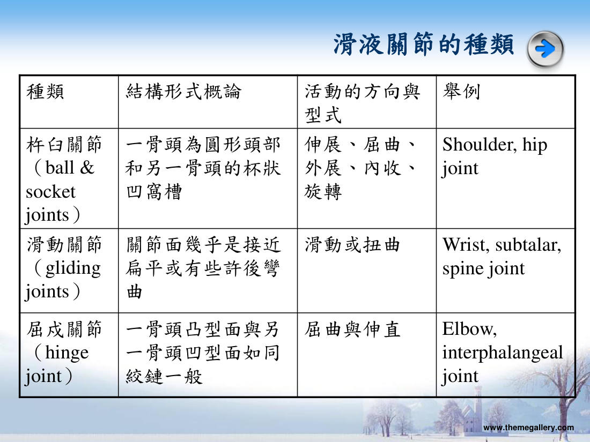
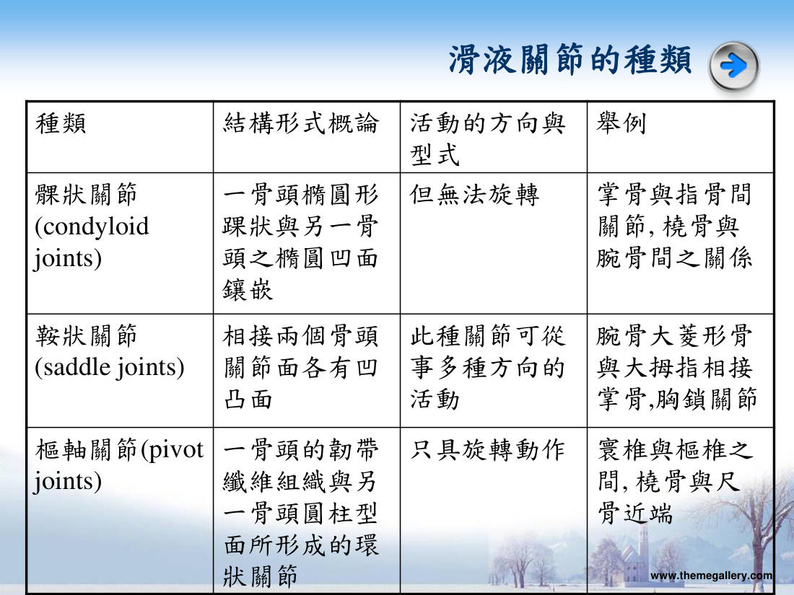
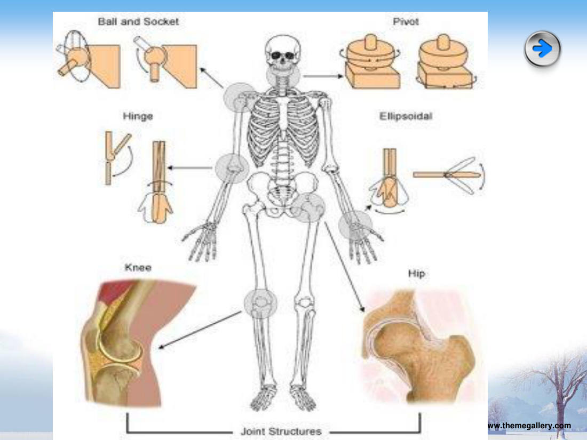
易混淆
橢圓／髁狀關節：能屈伸、外展內收，不能旋轉；杵臼關節才有旋轉。鞍狀關節（拇指 CMC、胸鎖關節）可多方向，但構造是雙向凹凸。
樞軸關節「只有旋轉」：寰樞關節、橈尺近端。
記憶口訣
杵（肩髖）、滑（腕距脊）、屈戍（肘指）、髁（掌指橈腕）、鞍（拇指胸鎖）、樞（寰樞橈尺）。
五、關節面滑動凹凸原則（p.12–13）
凹凸原則Concave-convex relationship（關節運動學 arthrokinematics：roll、slide、spin）：
| 移動的骨頭 | 關節面滑動 (slide) 方向 |
|---|---|
| 凸面在凹面上移動 (convex on concave) | 滑動方向與骨頭角動作方向相反 (opposite) |
| 凹面在凸面上移動 (concave on convex) | 滑動方向與骨頭角動作方向相同 (same) |
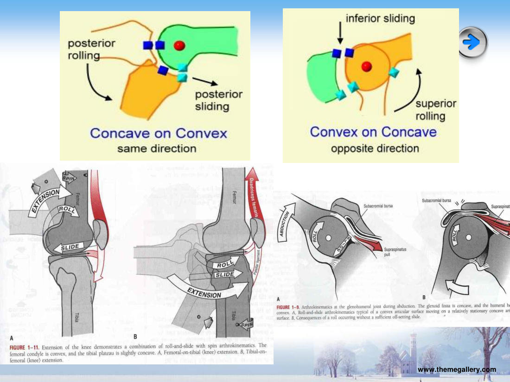
必背重點
凸動凹 → 滑動反向（例：肩外展，肱骨頭凸面往上 rolling、往下 slide——superior rolling／inferior sliding）；凹動凸 → 滑動同向（例：膝伸直時脛骨平台在股骨髁上，同向滑動）。
易混淆
骨運動學 osteokinematics＝骨頭的大角度運動（量角器測 ROM）；關節運動學 arthrokinematics＝關節面間的 roll／slide／spin 微小運動。
六、牛頓運動定律（p.14）
| 定律 | 內容 |
|---|---|
| 第一：慣性定律Law of inertia | 動者恆動、靜者恆靜 |
| 第二：加速度定律Law of acceleration | F = ma，作用力＝質量×加速度 |
| 第三：作用與反作用定律Law of action-reaction | 甲物對乙物施力，乙物會以大小相等、方向相反的力回作用在甲物上 |
七、槓桿 槓桿Lever（p.15–18）
槓桿是一種簡單機械，用來改變力量的大小與方向。F＝支點 (fulcrum)，W＝阻力／重力 (resistance)，E＝作用力 (effort)。
| 類型 | 排列 | 特性 | 人體例子（講義） |
|---|---|---|---|
| 第一類 | 支點在中央（E－F－W） | 跷跷板型；可改變力的方向 | 抬頭（點頭）：支點＝枕寰關節；阻力＝頭顱前面被移動的重力；作用力＝背部（頸伸）肌肉收縮 |
| 第二類 | 阻力在中央（F－W－E） | 力臂 > 阻力臂，省力 | 踮腳尖：支點＝腳趾基部（蹠趾關節）肉球；阻力＝身體重量；作用力＝小腿肌（腓腸肌、比目魚肌）收縮 |
| 第三類 | 作用力在中央（F－E－W） | 力臂 < 阻力臂，費力但速度／範圍大 | 前臂舉重：支點＝肘關節；阻力＝前臂加手中物體重量；作用力＝肱二頭肌收縮 |
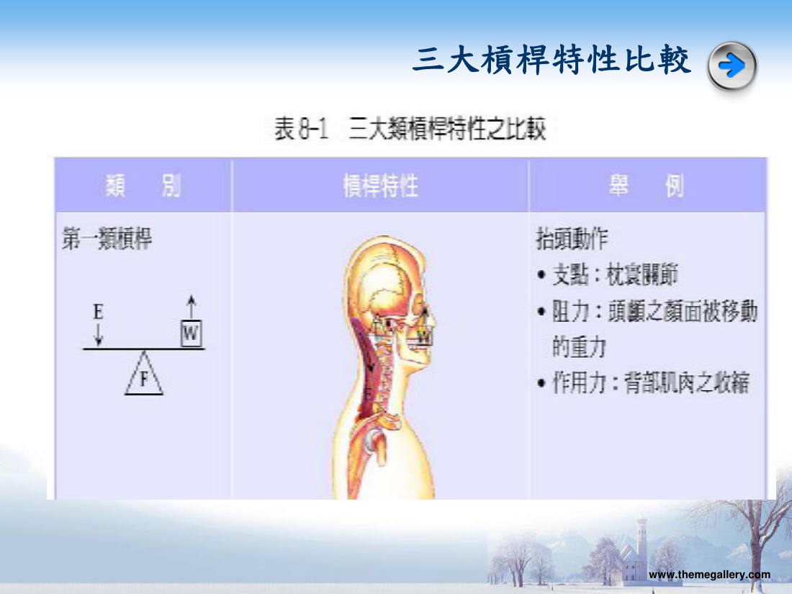
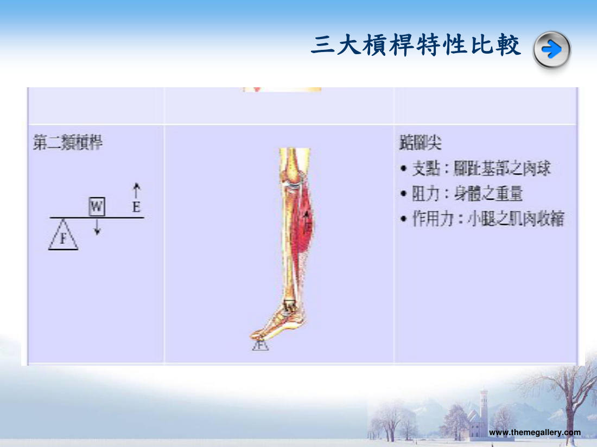
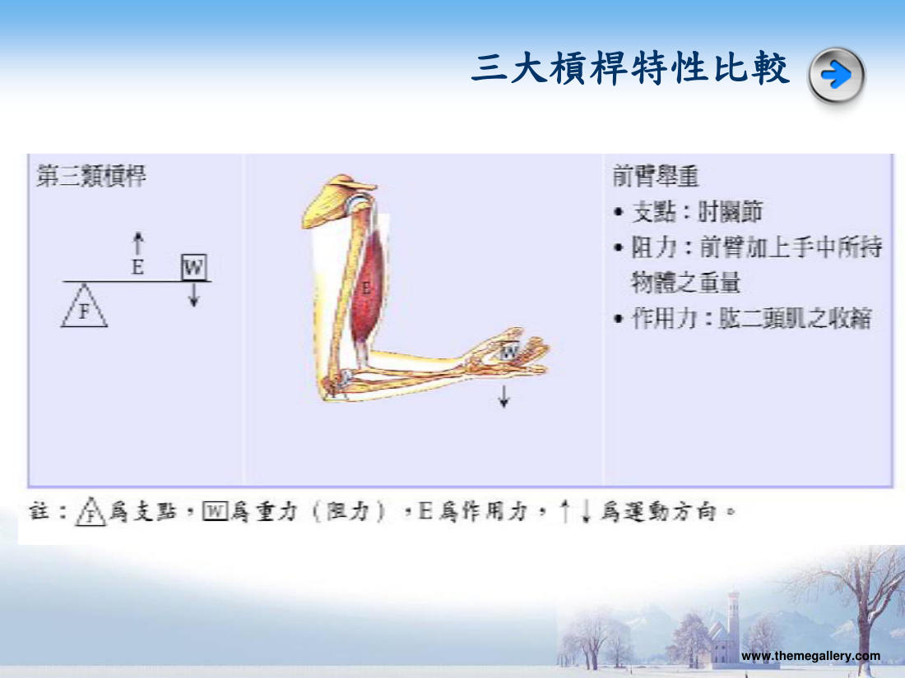
必背重點
人體以第三類槓桿最普遍。非承重（開放鏈）時，脛前肌收縮使踝背屈也是第三類槓桿。
記憶口訣
看「誰在中間」：一支點、二阻力、三作用力在中間（類別數字＝中間者的順序：支點1、重力2、施力3）。
易混淆
第二類的「力臂大於阻力臂」（省力）vs 第三類的「力臂小於阻力臂」（費力）。踮腳尖是第二類（體重在中間），肱二頭肌彎舉是第三類（肌肉附著點在中間）。
對照解剖生理：骨骼肌運動與命名
八、阻力運動（收縮）的種類（p.19–23）
| 類型 | 定義 | 優點 | 缺點／注意 |
|---|---|---|---|
| 等長收縮Isometric | 靜態收縮，用力時肌肉長度不變。須持續收縮6 秒才有增進肌力效果 | 增加關節穩定度；適合急性癒合期，可延緩肌肉萎縮 | — |
| 等速收縮Isokinetic | 包括向心與離心；速度維持不變，阻力隨肌力大小調整 | 各角度皆可接受最大劑量訓練；可在不同速度訓練 | 儀器昂貴；大多僅能做開放鏈；不宜急性期；訓練速度每秒不可超過 120 度 |
| 等張收縮Isotonic | 向心、離心或兩者合併；在活動範圍內對抗固定負荷。負荷用 RM（repetition maximum）表示：1 RM＝盡全力只能舉 1 次的重量；RM 越小，重量越大 | 與日常生活用力方式相近 | 最大肌張力只發生在某一段範圍，無法在每一角度都達最大訓練 |
離心 vs 向心收縮（p.22）
| 項目 | 離心收縮 Eccentric | 向心收縮 Concentric |
|---|---|---|
| 最大收縮產生的力 | 較大 | 較小 |
| 運動速度加快時 | 力下降較慢 | 力下降較快 |
| 徵召的動作單位（產生同樣的力） | 較少 | 較多 |
| 同樣慢速下 | 產生較大的力 | 產生較小的力 |
| 收縮的肌肉張力 | 大 | 小 |
| 日常生活活動 | 多 | 少 |
| 遲發性肌肉酸痛 DOMS | 最易引起 | 較少 |
| 撕拉傷 | 較容易產生 | 較不易 |
必背重點
肌肉張力大小：eccentric > isometric > concentric（p.23）。離心收縮「肌肉在被拉長中收縮」，耗能反而較少（用較少 motor unit 就能撐同樣的力）。
易混淆
離心＝肌肉變長（如下樓、慢放啞鈴）；向心＝肌肉變短；等長＝長度不變；等速＝速度恆定（不是負荷恆定，等張才是負荷固定）。
記憶口訣
「離心力大、少徵召、易痠痛、易拉傷」。
九、肌肉的被動活動（p.24–25）
- 被動不足Passive insufficiency：某主動肌收縮引起關節動作時，若其拮抗肌為跨兩個（以上）關節的肌肉，且已在所經過的關節同時被拉到最長，使主動肌無法再進一步產生關節動作 → 關節活動度不足。
例：髖屈曲＋膝屈曲 115–125°；髖屈曲＋膝伸直 60–80°（膝伸直時後大腿肌群（hamstrings）被拉緊，限制髖屈曲）。 - 肌腱作用／腱固定作用Tendon action (tenodesis)：主動肌無力或放鬆時，拮抗肌收縮的動作將主動肌拉緊 (stretch)，產生的被動張力會使主動肌所經過的關節產生動作，看似主動肌自行收縮，其實是被牽拉造成的被動動作。
易混淆
Passive insufficiency＝拮抗肌太緊限制動作；Active insufficiency＝主動肌縮到太短無力。Tenodesis＝肌腱被牽拉帶出的被動動作。
十、肌肉長度－張力關係（p.26–27、30）
肌肉力量／最大自主收縮 (maximum voluntary contraction, MVC)。離體肌肉 (detached muscle) 以靜止長度 (resting length) 為基準：
| 相對靜止長度 | 現象 |
|---|---|
| < 50% | 肌纖維太鬆，無法產生主動張力 |
| 50–110% | 張力快速上升 |
| 110% | 達最大張力（即比靜止長度稍長） |
| 110–170% | 主動張力逐漸下降 |
| > 170% | 曲線再上升，是因為被動張力增加 |
| 200% | 瀕臨撕裂 (tearing point) |
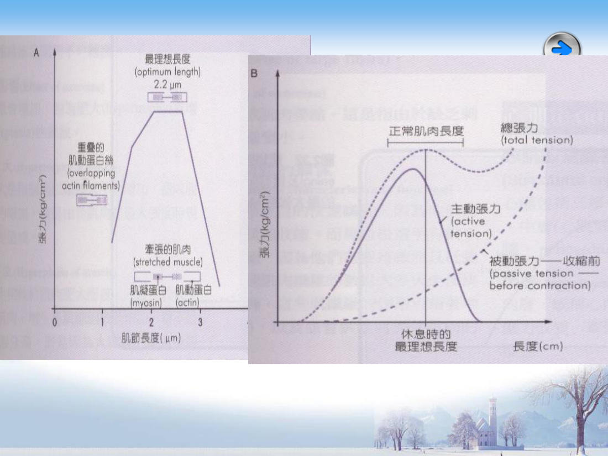
必背重點
最大主動張力在比休息長度稍長時；繼續拉長，主動張力先增加後減少（被動張力則持續上升，總張力＝主動＋被動）。理想肌節長度約 2.2 μm（粗細肌絲重疊最佳）。
對照解剖生理：肌肉組織總論
十一、骨骼肌概論與構造（p.32–36）
- 肌肉組織＝具收縮性的組織，包括骨骼肌、心肌、平滑肌；約占體重 40–50%；肌肉系統通常專指骨骼肌系統。
- 層級：肌肉 → 肌束 fasciculus → 肌纖維（肌細胞）muscle fiber → 肌原纖維 myofibril → 肌絲 myofilament（粗肌絲 myosin／細肌絲 actin）。
- 其他構造：肌纖維膜 肌纖維膜sarcolemma、肌漿 肌漿sarcoplasm、粒線體 mitochondria、肌小節 肌小節sarcomere；Z line、A band、H zone、I band。
結締組織包膜
| 構造 | 位置／特性 |
|---|---|
| 筋膜Fascia 淺層 superficial fascia | 皮下層，由脂肪組織與疏鬆結締組織組成 |
| 深層筋膜 deep fascia | 皮下組織的深層，緻密、不含脂肪的結締組織，覆蓋肌肉表面 |
| 肌外膜Epimysium | 包覆整條肌肉；伸入肌肉內把肌肉分成許多肌束 (fascicles) |
| 肌束膜Perimysium | 包住每一條肌束；再伸入肌束內形成肌內膜 |
| 肌內膜Endomysium | 包住每一條肌纖維（肌細胞）（投影片寫直徑約 1–2 μm，與一般 10–100 μm 不符，應為投影片筆誤） |
以上三層都可能延伸到肌肉之外，形成肌腱 tendon。
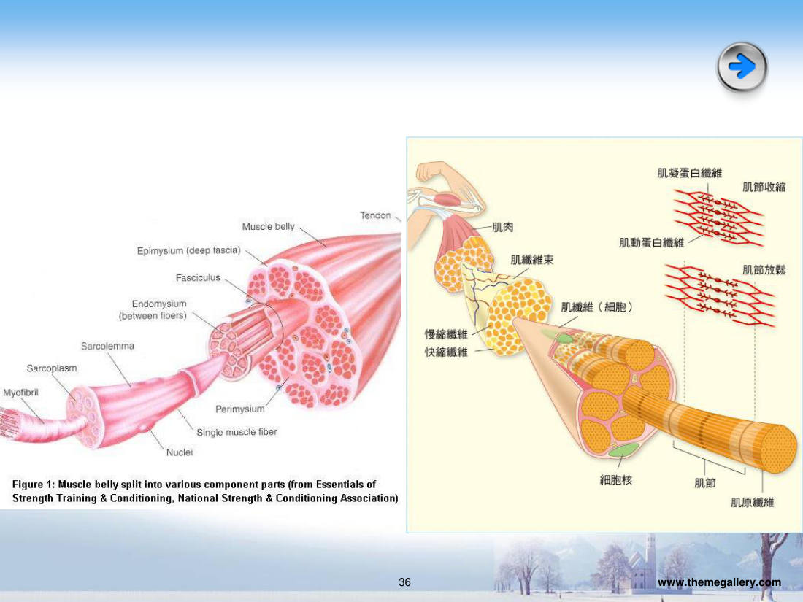
記憶口訣
由外到內：外（Epi）整條 → 束（Peri）每束 → 內（Endo）每條纖維。
十二、肌節與滑動絲理論（p.37–41）
- 肌節長度：放鬆 2.5 μm；完全收縮約 1.5 μm；被拉長約 3.0 μm。
- 肌節Sarcomere＝兩相鄰 Z 線之間的肌原纖維。
- Z 線：細肌絲（actin）連接處。 M 線：聯繫相鄰的粗肌絲。 H 區：只含粗肌絲。 A 帶：粗肌絲全長（暗帶）。 I 帶：只含細肌絲（明帶）。
| 收縮時 | 變化 |
|---|---|
| Z 線 | 被細肌絲拉近，肌節變短 |
| A 帶 | 不變（粗肌絲長度不變） |
| I 帶 | 變窄 |
| H 區 | 變窄，用力收縮可消失 |
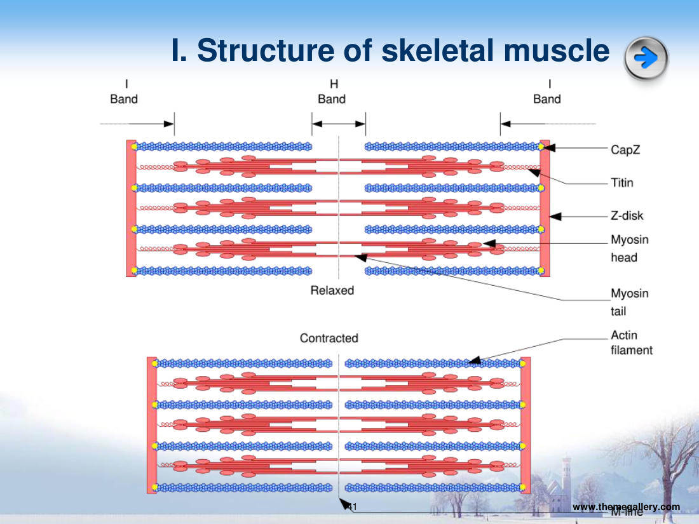
必背重點
滑動絲學說Sliding filament theory：收縮時粗肌絲的肌凝蛋白橫橋 (cross bridge) 與細肌絲肌動蛋白結合，細肌絲滑入粗肌絲之間；不是蛋白本身縮短（橫橋學說 cross bridge theory）。唯一長度不變的是粗肌絲／A 帶。
記憶口訣
收縮「I、H 縮，A 不變」；「Z 往中間靠」。
十三、興奮收縮耦合與放鬆（p.39、42–47）
膜電位與動作電位
- 靜止膜電位Resting membrane potential：離子分布不均，細胞膜對 K⁺ 通透性大、對 Na⁺ 小 → K⁺ 外流；當向外的濃度擴散力與阻止 K⁺ 外流的電場力相等，膜內外電位差穩定。
- 動作電位Action potential：刺激使 Na⁺ 通道開放，Na⁺ 順濃度梯度大量內流 → 去極化，膜內變正。去極化達閾值 −55 mV 才會激發。
- 全有全無定律All-or-none law：達閾值就產生一個大小固定的完整動作電位，未達閾值則不產生。
- 傳導：無髓鞘纖維＝局部電流連續傳導；有髓鞘纖維＝跳躍式傳導 (saltatory)（越過髓鞘段，在蘭氏結）。
神經肌肉接合與收縮步驟
- 神經肌肉接合處 myoneural junction釋放 乙醯膽鹼Acetylcholine, ACh；由膽鹼酯酶Cholinesterase分解。
- 動作電位沿肌纖維膜傳入橫小管 (T system / transverse tubular system)，加速傳到肌纖維所有部分。
- 肌漿網 SR (sarcoplasmic reticulum)：貯存並釋放 Ca²⁺。終末池 Ca²⁺ 通道開放，Ca²⁺ 流入肌漿。
- Ca²⁺ 與肌鈣蛋白 troponin 的 C 單位結合 → 蛋白構型改變 → 暴露 actin 上的活化位(active site) → 橫橋結合，ATP 分解提供能量 → 粗細肌絲滑行，肌纖維縮短。
- 放鬆：肌漿網以主動運輸把 Ca²⁺ 打回肌漿網 → 肌漿 Ca²⁺ 濃度下降 → Ca²⁺ 與 troponin 分離 → 肌肉舒張。
必背重點
內質網兩個互相交織的系統：T 系統＝加速傳導動作電位；SR＝貯存／釋放 Ca²⁺。收縮的兩大事件：(1) 刺激暴露 actin 活化位；(2) 化學反應（ATP）提供主動張力的能量。
對照解剖生理：肌肉組織總論、結締、肌肉與神經組織
十四、肌纖維型態（p.48–51）
| 項目 | Type I 慢縮 (SO) | Type IIa 快縮 (FOG) | Type IIb 快縮 (FG) |
|---|---|---|---|
| 全名 | Slow-twitch Oxidative，紅肌 | Fast-twitch Oxidative Glycolytic，快速-氧化醣解 | Fast-twitch Glycolytic，快速-醣解，白肌 |
| 直徑 | 小 | 中 | 大 |
| 顏色 | 紅 | 紅 | 白 |
| 肌紅蛋白 | 高 | 高 | 低 |
| 粒線體 | 大量 | 大量 | 稀少 |
| ATP 主要來源 | 氧化磷酸化 | 有氧醣解 | 醣解（無氧） |
| 氧化酵素 | 高 | 中 | 低 |
| 醣解酵素 | 低 | 中 | 高 |
| 收縮速度 | 慢 | 快 | 最快（投影片表列為「中」） |
| 疲乏速度 | 慢 | 中 | 快 |
說明：講義 p.51 表格欄位標題把 IIB（Intermediate）與 IIA 排反了，而 p.48 文字定義 IIa＝FOG、IIb＝FG，上表依 p.48 與數值內容（中間型＝IIa、白肌／最易疲勞＝IIb）整理；收縮速度列亦疑似排序錯誤。
- 慢縮：粒線體與肌紅蛋白多、血供充足 → 有氧代謝與 ATP 生成佳，耐勞；用於長時間低強度耐力活動。
- 快縮：醣原儲備與相關酵素活性高 → 強而有力；用於短時間高強度活動。
徵召順序與分布
- 一般先徵召慢肌纖維，再視強度、時間、疲勞加入快肌。中等強度：慢肌＋IIa；持續則加入 IIb；高強度則快速依序加入。
- 例：小腿比目魚肌 soleus 比其他腿肌多 25–40% 慢肌；三頭肌 triceps 比其他手部肌肉多 10–30% 快肌。多數肌肉慢、快接近各半。
- 耐力運動員慢肌比例較高；非耐力運動員快肌比例比不運動的人高。
必背重點
Type I＝紅、小、慢、耐疲勞、有氧；Type IIb＝白、大、快、易疲勞、無氧醣解；IIa 居中。徵召順序：I → IIa → IIb。
記憶口訣
「I 慢紅耐、IIb 白快脆」；由小到大、由慢到快依序上場。
十五、運動單位（p.52–55）
- 運動單位Motor unit＝一個運動神經元 + 其軸突 + 它所支配的所有肌纖維。
- 一條運動神經纖維支配的肌纖維數：最少約 5 條（眼肌），最多 1000 條以上（大肌肉）。
- 神經支配比Innervation ratio：某肌肉中平均每個 motor unit 的肌纖維數。眼肌小（精細控制），大肌肉大。
- 全有全無律：同一運動單位內所有肌纖維幾乎同時收縮或放鬆。
- 肌力分級（增加力量）三方式：(1) 一開始先用神經支配比最小者；(2) 增加被徵召的運動單位數目；(3) 增加刺激頻率。
- 大小原則Size principle：最小（最低閾值）的運動神經元最先徵召，最大（高閾值、收縮最大最快）的最後徵召。
十六、神經纖維分類（p.56–57）
- 神經幹含：運動纖維、感覺纖維、自主神經纖維。
- Type A：最粗、有髓鞘，分 Aα（約 20 μm）、Aβ、Aγ、Aδ；傳導最快（最高約 120 m/s）。
- Type B：有髓鞘。 Type C：無髓鞘、約 0.5 μm、傳導約 0.5 m/s，傳痛覺。
- 平均傳導速度 50–70 m/s；一個反射弧約 28 ms。
| 感覺纖維分類 | 來源 |
|---|---|
| Group Ia | 肌梭初級末梢 (primary receptor) |
| Group Ib | 高爾基腱器 (Golgi tendon organ) |
| Group II | 肌梭次級末梢 (secondary receptor) |
中樞神經元：上運動神經元 upper motor neurons；中間神經元 interneurons。
十七、關節、肌腱與肌肉受器（p.58–73）
關節受器 Joint receptors
位於關節囊與韌帶，依作用於關節的變形力之位置與大小產生反應。
高爾基腱器 高爾基腱器Golgi tendon organ, GTO
- 位於肌腱，靠近肌纖維與肌腱的附著處（梭外肌與肌腱交界），與肌纖維串聯；直徑約 0.1–1 mm；受 Ib 傳入纖維支配。
- 偵測肌肉張力（收縮力量）的改變；肌肉過度收縮時被興奮 → 經抑制性中間神經元抑制作用肌、興奮拮抗肌 → 限制產生的力在組織可承受範圍（保護作用）。
- 放電閾值較高，張力快速變化（猛收縮／放鬆）才明顯發放。
肌梭 肌梭Muscle spindle
- 由 3–10 條細小的梭內肌纖維 (intrafusal fibers) 組成，梭形，長約 0.5–13 mm（p.64 另寫 3–10 mm）；幾乎所有肌肉都有，以手臂與腿最多。
- 功能：感覺肌肉長度及梭外肌長度變化的速率。
- 兩種梭內纖維：
a. 核袋纖維 nuclear bag（細胞核集中在中央「袋」）→ 初級 Ia 傳入；
b. 核鏈纖維 nuclear chain（細胞核沿纖維排成鏈狀）→ 次級 II 傳入。 - 感覺末梢位於肌梭中央（無收縮性）；兩端可收縮，由 γ 運動神經元 (Aγ) 支配（投影片寫成 r）。
- 梭外肌由 Aα 運動神經元支配；梭內肌由 Aγ 支配（可調整感受長度變化的敏感度）。
- 牽張肌梭的非收縮部分有兩種機制：整條肌肉被拉長、γ 運動神經興奮。
- 反射收縮時間約 100–200 ms。
| 末梢 | 偵測 | 活動型式 |
|---|---|---|
| 初級 (Ia) | 牽張的速度 (velocity) | phasic（變化率）＋ tonic（最終結果），興奮被拉長肌的 α 運動神經元、抑制拮抗肌 α 運動神經元 |
| 次級 (II) | 牽張的量 (amount) | 只有 tonic |
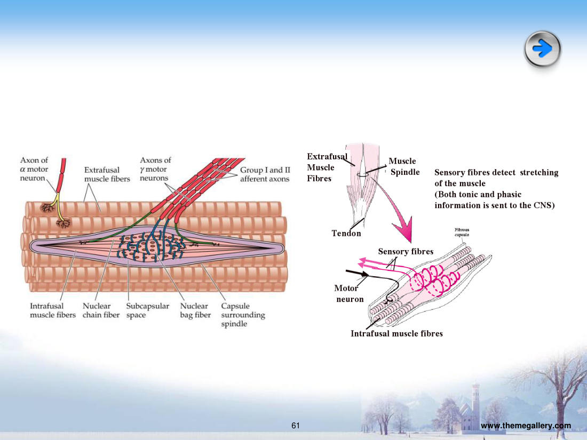
| 肌梭 Muscle spindle | 高爾基腱器 GTO | |
|---|---|---|
| 位置 | 肌肉內，與梭外肌並聯 | 肌腱，與肌纖維串聯 |
| 感覺 | 肌肉長度及其變化速率 | 肌肉張力 |
| 傳入纖維 | Ia（初級）、II（次級） | Ib |
| 反射效果 | 興奮同一肌肉、抑制拮抗肌（牽張反射） | 抑制同一肌肉（作用肌）、興奮拮抗肌（反向牽張反射） |
| 角色 | 細調裝置 | 粗調裝置 |
必背重點
肌梭＝長度與速度（Ia：速度；II：量），維持姿勢性肌張力；GTO＝張力，保護肌肉免於過度用力。兩者都屬反饋控制系統。
梭外肌：Aα；梭內肌：Aγ。肌梭：梭外變短 → 發放頻率降低；梭外變長 → 肌梭被牽張、衝動增多。
易混淆
Ia（肌梭初級）vs Ib（GTO）vs II（肌梭次級）；Aα（梭外）vs Aγ（梭內）；肌梭＝並聯測長度，GTO＝串聯測張力。
記憶口訣
「梭長腱張」：肌梭管長度、腱器管張力；「Ia 速、II 量、Ib 腱」。
骨骼肌特性總結（p.73）
- 物理特性：伸展性、彈性、黏滯性；生理特性：興奮性、收縮性。
- 收縮分類：向心、等長、離心、等動（等速）收縮。
- 肌纖維依收縮速度分快、慢；依收縮及代謝特徵分 SO / FOG / FG；依顏色分快縮白、快縮紅、慢縮紅；Brooke 分 I 型與 II 型。
- 低強度運動：慢肌先動員；強度大：快肌也加入。
肩關節複合體：骨骼構造與關節基本特性
肩關節複合體（肩關節複合體Shoulder Complex）= 肩帶（shoulder girdle）＋盂肱關節，由多個關節協同完成手臂的大範圍活動。
1. 肩胛骨 肩胛骨scapula
- 與胸廓chest wall第 2～7 根肋骨相對；是 17 塊肌肉的附著處。
- 兩個突起：喙突coracoid process、肩峰acromion process。
- 喙突：聯合肌腱conjoined tendon（肱二頭肌短頭 biceps short head ＋ 喙肱肌 coracobrachialis）的起點；胸小肌（pectoralis minor）止點；喙肱韌帶、喙肩韌帶附著處（講義寫「鳥喙肱韌帶及肩胛橫韌帶」）。
- 肩峰：由肩胛棘scapular spine向外側延伸的寬而扁突出，覆蓋在肱骨頭上方，是三角肌起點之一。
- 肩盂glenoid（關節盂）與肱骨頭形成肩關節；大小與肱骨頭不成比例，接觸面小 → 活動度大、穩定度差。
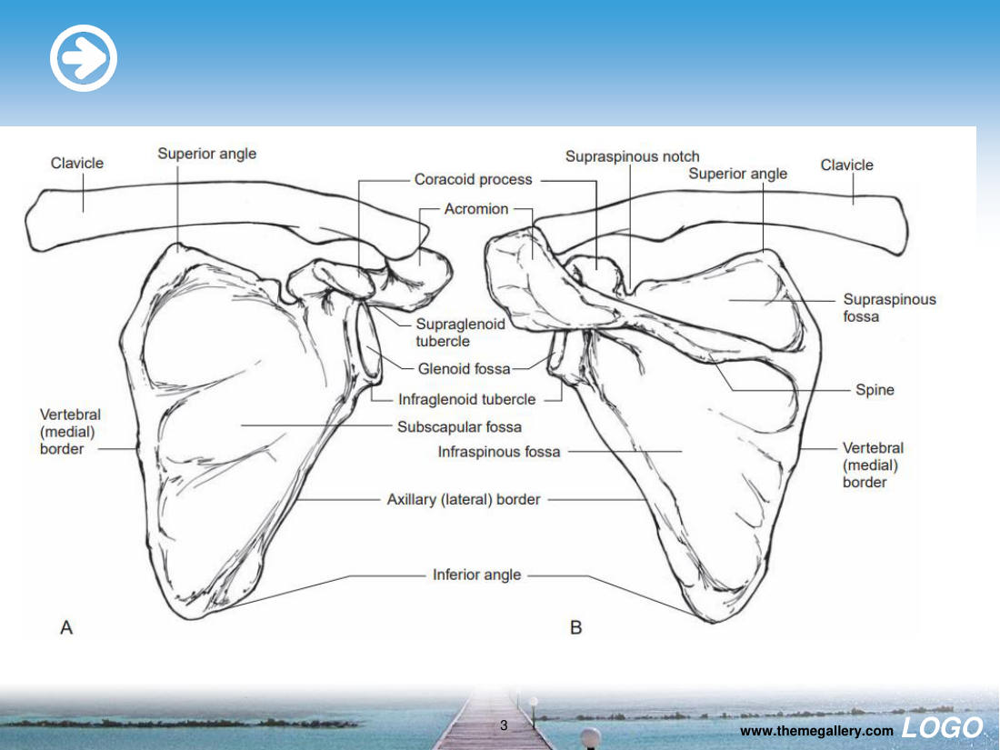
2. 肱骨頭 肱骨頭humeral head
- 相對於遠端肱骨上髁軸trans-epicondylar axis，肱骨頭向後轉約 30°（後傾retroversion）。
- 關節面周圍的結節是旋轉肌袖rotator cuff 4 條肌腱的附著處：
- 大結節greater tuberosity：棘上肌 supraspinatus、棘下肌 infraspinatus、小圓肌 teres minor
- 小結節lesser tuberosity：肩胛下肌 subscapularis
- 大、小結節之間為二頭肌溝bicipital groove，肱二頭肌長頭肌腱通過；溝上有橫韌帶transverse (humeral) ligament，防止肌腱滑出。
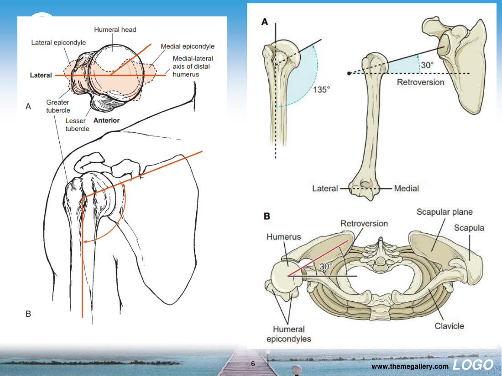
記憶口訣
大結節＝「上下小（棘上、棘下、小圓）」；小結節＝肩胛下肌（SITS 中的 S 在小結節）。
3. 旋轉肌袖 旋轉肌袖rotator cuff（SITS）
| 肌肉 | 止點 | 盂肱關節主要動作 |
|---|---|---|
| 棘上肌 supraspinatus | 大結節 | 外展 Abd |
| 棘下肌 infraspinatus | 大結節 | 外轉 ER、內收 Add |
| 小圓肌 teres minor | 大結節 | 外轉 ER、內收 Add |
| 肩胛下肌 subscapularis | 小結節 | 內轉 IR |
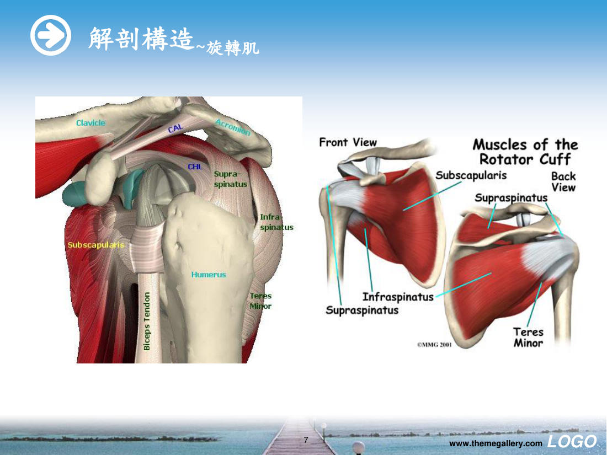
4. 盂肱關節的基本特性
- 杵臼關節ball-and-socket joint（球窩、spheroidal），不具關節盤；3 度自由度。
- 關節活動度（ROM）：肩關節（0–180°）＞ 髖關節（0–120°）＞ 腕關節 ＞ 肘關節。
- 肩關節為第三級槓桿（支點－施力點－受力點，施力點在中間）：力臂短、費力，但可得到較大速度與活動長度。
- 運動中減速時，肩關節產生的力矩以向後剪力方向最大。
- 骨性穩定度差（little bony stability）→ 靠肌肉收縮穩定。
5. 防止脫臼的韌帶
- 喙肱韌帶coracohumeral lig.、盂肱韌帶glenohumeral lig.、肱橫韌帶transverse humeral lig.、盂脣glenoid labrum。
- 斜方韌帶trapezoid lig.＋圓錐韌帶conoid lig. = 喙鎖韌帶（喙骨鎖骨韌帶coracoclavicular lig.），連接鎖骨與喙突。
- 關節囊加強結構：喙肱韌帶、上／中／下盂肱韌帶、肱二頭肌長頭肌腱、肱三頭肌長頭肌腱、旋轉肌袖肌腱。
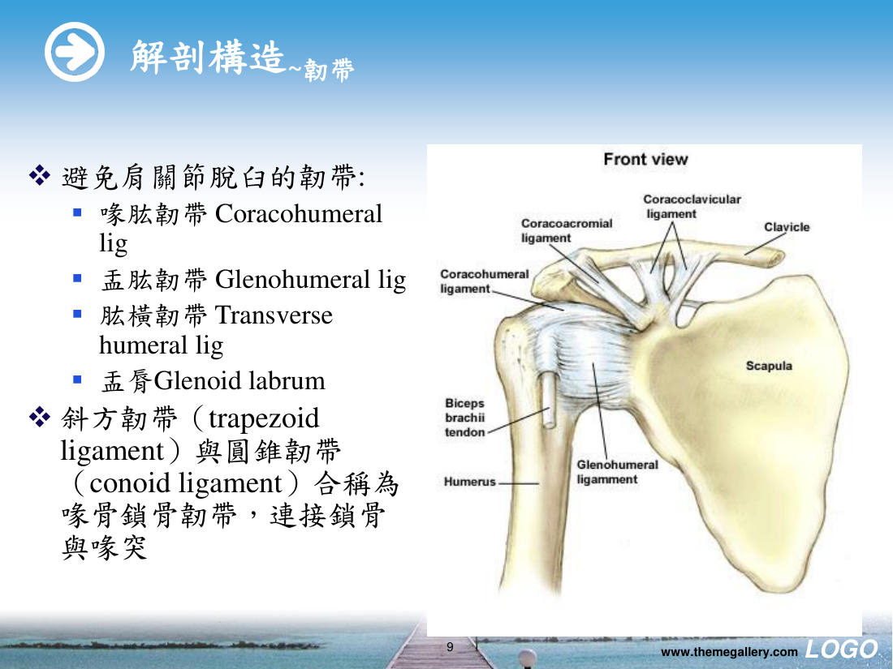
易混淆
喙鎖韌帶（斜方＋圓錐，鎖骨↔喙突，穩定 AC 關節最重要）≠ 喙肩韌帶（喙突↔肩峰，構成喙肩弓）≠ 喙肱韌帶（喙突↔肱骨，防盂肱脫臼）≠ 肋鎖韌帶（第 1 肋↔鎖骨，SC 關節）。
6. 盂肱關節動力學（關節面滑動方向）
| 肱骨頭滑動方向 | 對應動作 |
|---|---|
| 向前 | 伸直、外轉、水平外展 |
| 向後 | 屈曲、內轉、水平內收 |
| 向下 | 外展 |
| 向上 | 內收 |
必背重點
- 骨動作時，凸面（肱骨頭）滑動方向與骨動作方向相反。
- 肩胛骨移動時，凹面（關節窩）滑動方向與肩胛骨動作方向相同。
- 肩關節活動時肱骨頭向後滑動，容易伴隨肩部內旋。
7. 盂肱關節的動作範圍
- 動作：屈／伸（含 hyperflexion / hyperextension）、外展／內收、外轉（ER）／內轉（IR）、水平外展／水平內收、環轉（circumduction）。
- 外展量取決於旋轉：關節完全內轉 → 主動外展只有 60°（大結節撞肩峰與喙肩韌帶）；外轉 90° → 外展可達 90°（三角肌主動不足）。
- 旋轉量隨手臂高度改變：手臂放身側時 ER＋IR 共 180°；手臂完全上舉時只剩 90°（喙肱韌帶與盂肱韌帶扭轉繃緊，關節囊處於最緊位置）。
肩帶關節（Shoulder girdle joints）與肩胛肱骨節律
講義列出的關節：A. 肩胛胸廓關節 ST、B. 胸鎖關節 SC、C. 肩鎖關節 AC、D. 盂肱關節 GH，另有 E. 肩峰下（上肱）關節。
| 關節 | 類型／特色 | 重點 |
|---|---|---|
| ST 肩胛胸廓 scapulothoracic | 無骨性關節 → 假關節／功能性關節 | 聳肩、下壓、前突、後縮、向上／向下旋轉 |
| SC 胸鎖 sternoclavicular | 鞍狀 sellar，有關節盤，3 度自由度 | 唯一連接上肢與胸腔的關節 |
| AC 肩鎖 acromioclavicular | 3 度自由度（抬高、外展、旋轉） | 喙鎖韌帶最重要 |
| GH 盂肱 glenohumeral | 杵臼 ball & socket，3 度自由度 | 骨性穩定差，靠肌肉 |
A. 肩胛胸廓關節（ST）
- 動作：上提／聳肩elevation、下壓depression、前突（外展）protraction/abduction、後縮（內收）retraction/adduction、向上旋轉upward rotation、向下旋轉downward rotation。
- 下壓：穩定肩胛骨並抬高身體（如撐拐杖／雙槓撐起），身體可抬高約 4–6 吋（10–15 cm）。
- 向上旋轉：全肩上舉時範圍最大；向下旋轉：手放背後時達最大範圍。
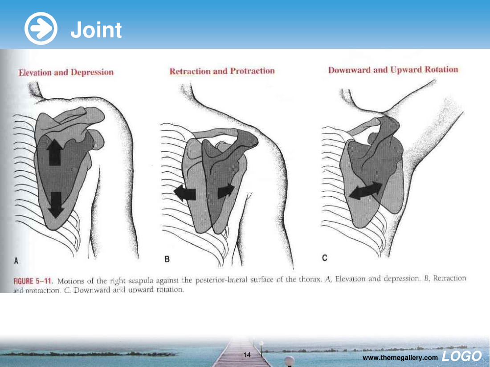
B. 胸鎖關節（SC）
- 鞍狀關節（sellar）、具關節盤、3 度自由度；結構與拇指腕掌關節（CMC）相同。
- 鎖骨通常在關節脫臼之前先骨折。
- 韌帶：鎖骨間韌帶interclavicular lig.（橫越兩鎖骨間）、前後胸鎖韌帶anterior & posterior SC lig.（關節囊韌帶）、肋鎖韌帶costoclavicular lig.（第 1 肋下方）；胸鎖乳突肌（SCM）近端肌腱附著也加強穩定。
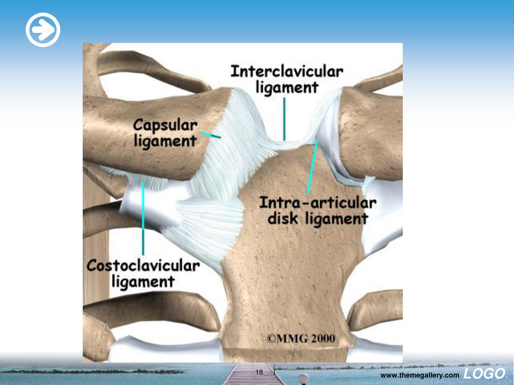
| 項目 | 數值／說明 |
|---|---|
| 抬高／下壓軸 | 斜軸，穿過鎖骨胸骨端，向後下方 |
| 鎖骨抬高（elevation） | 30–45°，多數發生在手臂上舉前 90° |
| 下壓（depression） | 自休息位可下壓 5–10°，被第 1 肋擋住 |
| 前突／後縮 | 繞近乎垂直軸（穿過胸骨柄）；休息位前突 15°、後縮 15° |
| 鎖骨軸向旋轉 | 肩上舉超過 90° 後出現，對完全向上旋轉與肩上舉必要；因鎖骨 S 形，肩峰端升高；由喙鎖韌帶（斜方＋圓錐）拉緊引起 |
必背重點
- SC 關節面滑動：鎖骨向上 → 關節面向下滑；向下 → 向上滑（凸面規則，方向相反）；前突／後縮 → 關節面同方向滑（凹面規則）。
- 鎖骨旋轉 → 關節面亦旋轉。
- 肩外展 180° 時鎖骨軸向旋轉是因喙鎖韌帶拉緊。
C. 肩鎖關節（AC）
- 3 度自由度：抬高、外展、旋轉；由兩對強韌韌帶限制：
- 肩鎖韌帶acromioclavicular lig.：包圍關節周圍
- 喙鎖韌帶coracoclavicular lig.：維持 AC 穩定最重要
- AC ＋ SC 的合併作用 = 肩胛骨的動作（SC joint + AC joint = scapular motion）。
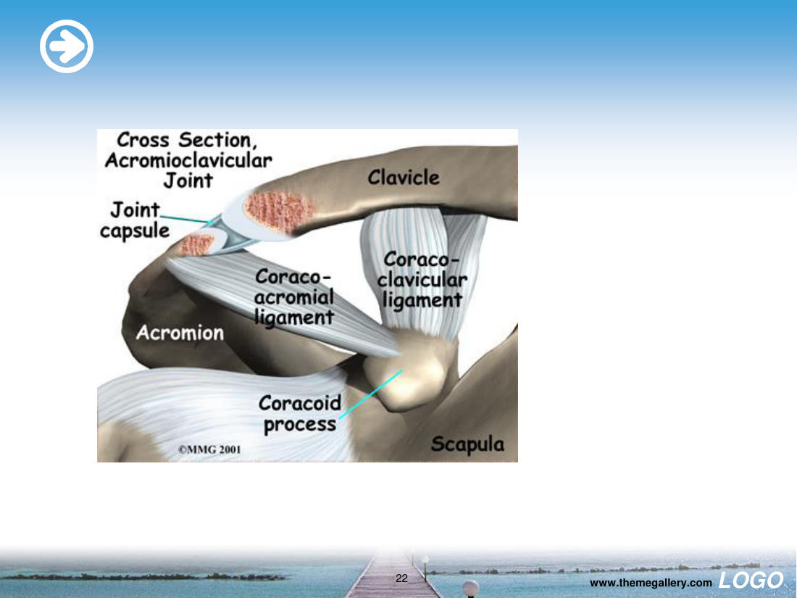
E. 肩峰下關節（suprahumeral / subacromial joint）
- 喙肩弓coracoacromial arch = 肩胛頸＋肩峰＋堅硬的喙肩韌帶＋喙突，又稱棘上肌出口supraspinatus outlet。
- 弓下的軟組織：旋轉肌袖肌腱、肱二頭肌長頭肌腱、關節囊、囊韌帶、三角肌下滑囊與肩峰下滑囊（subdeltoid & subacromial bursa）。
- 三角肌上舉時拉力線為直接向上，使肱骨垂直上移而撞擊喙肩弓或肩峰 → 肩夾擠症候群（impingement）的解剖基礎。
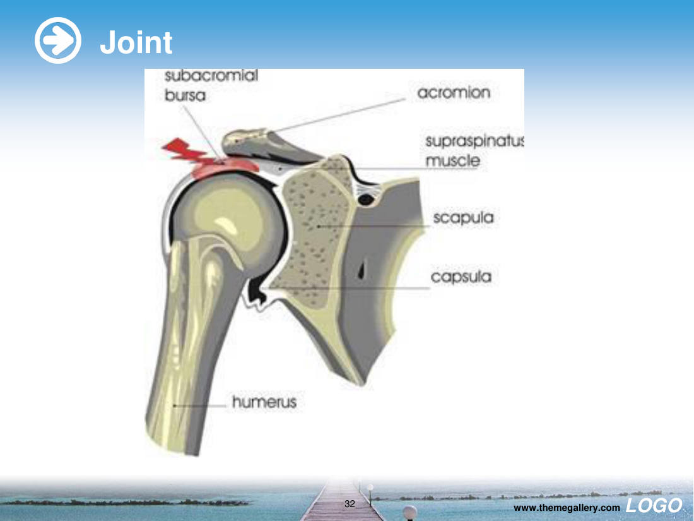
F. 肩胛肱骨節律 肩胛肱骨節律scapulohumeral rhythm
- 額狀面（frontal plane）外展：前 30° 後，肩胛骨：肱骨 = 1：2（即 ST：GH = 1：2，GH 動 2、ST 動 1）。
- 每外展 15° → 盂肱 10°、肩胛胸廓 5°。
- 外展 180° ＝ 肱骨（盂肱）120° ＋ 肩胛骨向上旋轉 60°；60° 中 30° 來自 AC、30° 來自 SC（鎖骨上舉 30°）。
- 肩胛骨平面（scapular plane）：GH ： ST = 1.25 ： 1。
- 動作中肩胛骨、鎖骨、肱骨三者缺一不可。
- 正常節律的功能：維護盂肱穩定、增加三角肌收縮效率、增加手舉高角度（但 scapula 動作量小於 GH）。
必背重點
節律 ST：GH = 1：2；180° = 120°(GH) + 60°(ST)；ST 的 60° = AC 30° + SC 30°。
易混淆
講義有「GH ： ST」與「ST ： GH」兩種寫法：額狀面 GH：ST = 2：1（=ST：GH 1：2）；肩胛骨平面 GH：ST = 1.25：1。考題問「scapulothoracic 與 glenohumeral 之比」時答 1：2。
記憶口訣
「肩 1 肱 2，12 + 6 = 18（120+60=180）」；前 30° 先只動肱骨（setting phase）。
對照解剖生理：上肢肌肉
肩部肌肉：起止點、神經支配、動作
1. 軀幹 → 肩帶（動肩胛骨）
| 肌肉 | 近端（起點） | 遠端（止點） | 神經 | 動作 |
|---|---|---|---|---|
| 前鋸肌 serratus anterior | 胸廓前外側（上位肋骨） | 肩胛骨內側緣 | 長胸神經 long thoracic n. | 肩胛骨外展（前突）＋向上旋轉 |
| 斜方肌 trapezius | 枕骨、項韌帶、C7–T12 棘突 | 鎖骨肩峰端、肩峰、肩胛棘 | 副神經 spinal accessory n. | 上：上提、向上旋轉；中：向上旋轉＋內收；下：向上旋轉＋內收＋下壓 |
| 菱形肌（大、小） rhomboid major & minor | 項韌帶、最下兩個頸椎與上四個胸椎棘突 | 肩胛骨內側緣 | 肩背神經 dorsal scapular n. | 向下旋轉、內收、上提 |
| 胸小肌 pectoralis minor | 第 2–5 肋 | 肩胛骨喙突 | 胸內側神經 medial pectoral n. | 下壓 |
| 提肩胛肌 levator scapulae | 上位頸椎橫突 | 肩胛骨內側緣 | 肩背神經 dorsal scapular n. | 上提、向下旋轉 |
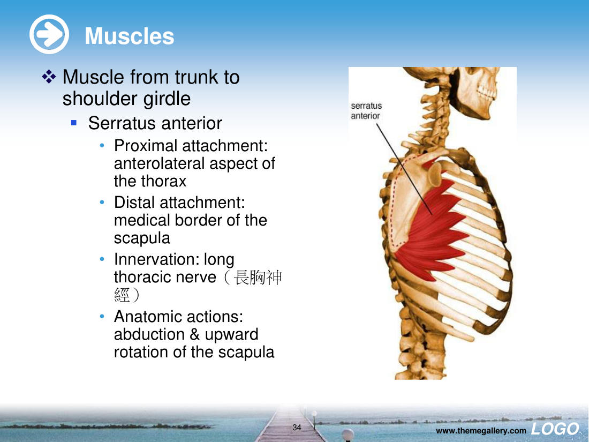
2. 肩帶 → 肱骨
| 肌肉 | 近端 | 遠端 | 神經 | 動作 |
|---|---|---|---|---|
| 三角肌 deltoid | 鎖骨肩峰端、肩峰、肩胛棘 | 三角肌粗隆 deltoid tuberosity | 腋神經 axillary n. | 外展 abd |
| 棘上肌 supraspinatus | 棘上窩 | 大結節 | 肩胛上神經 suprascapular n. | 外展 abd |
| 棘下肌＋小圓肌 infraspinatus & teres minor | 棘下窩、肩胛骨外側緣 | 大結節 | 棘下肌：肩胛上神經；小圓肌：腋神經 | 外轉 ER、內收 add |
| 肩胛下肌 subscapularis | 肩胛骨肋面（肩胛下窩） | 小結節 | 肩胛下神經 subscapular n. | 內轉 IR |
| 大圓肌 teres major | 肩胛骨下角 | 小結節嵴 | 肩胛下神經 subscapular n. | 內轉、內收、伸直 |
| 喙肱肌 coracobrachialis | 肩胛骨喙突 | 肱骨內側面 | 肌皮神經 musculocutaneous n. | 屈曲、內收 |
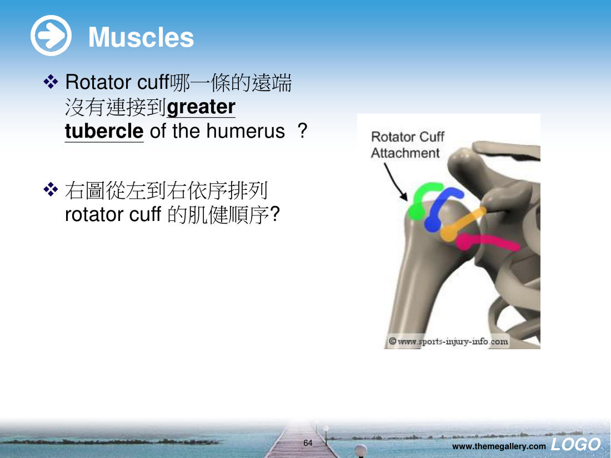
必背重點
- 旋轉肌袖中唯一止於小結節（遠端沒有連到 greater tubercle）的是肩胛下肌。
- 旋轉肌袖的神經：棘上、棘下 → 肩胛上神經；小圓 → 腋神經；肩胛下 → 肩胛下神經。
- 肱二頭肌、肱三頭肌不屬於肩胛肱骨肌群（遠端不附著在肱骨）。
3. 軀幹 → 肱骨
| 肌肉 | 近端 | 遠端 | 神經 | 動作 |
|---|---|---|---|---|
| 闊背肌 latissimus dorsi | T6 以下胸椎棘突、胸腰筋膜、髂嵴、最下幾根肋骨 | 經腋窩止於肱骨小結節嵴 | 胸背神經 thoracodorsal n.（C6–C8） | IR、伸直、內收（盂肱）；肩胛骨下壓；抬高骨盆 |
| 胸大肌 pectoralis major | 鎖骨、胸骨、第 2–7 肋軟骨 | 大結節嵴 | 胸內側＋胸外側神經 | 內收、內轉 |
4. 各動作的主要肌肉（ROM）
| 動作 | ROM | 肌肉 |
|---|---|---|
| 伸直 Extension | 0–60° | 闊背肌、大圓肌、三角肌 |
| 屈曲 Flexion | 0–180° | 三角肌、喙肱肌 |
| 外轉 External rot | 0–90° | 棘下肌、小圓肌 |
| 內轉 Internal rot | 0–80° | 胸大肌、闊背肌、大圓肌 |
| 外展 Abduction | 0–180° | 三角肌、棘上肌 |
| 水平外展 | — | 講義列「triceps」（疑為筆誤，後三角肌較合理） |
| 內收 Adduction | 0–75° | 闊背肌、胸大肌 |
5. 肩胛骨動作與肌肉
| 肩胛骨動作 | 主要肌肉 |
|---|---|
| 外展＋向上旋轉 | 前鋸肌 |
| 上提 Elevation | 上斜方肌、提肩胛肌 |
| 內收 Adduction | 中斜方肌、大／小菱形肌 |
| 下壓＋內收 | 下斜方肌 |
| 內收＋向下旋轉 | 大／小菱形肌 |
易混淆
- 斜方肌可同時上提（上）、內收（中）、下壓（下）；但「外展」是前鋸肌。
- 闊背肌／大圓肌／胸大肌 → 內轉；棘下肌／小圓肌 → 外轉（棘下肌不是內轉肌）。
- 前鋸肌（長胸神經）≠ 菱形肌（肩背神經）≠ 斜方肌（副神經）。
記憶口訣
「前鋸長胸、斜方副、菱提肩背」；旋轉肌 SITS：上外下內（棘上＝外展；棘下、小圓＝外轉；肩胛下＝內轉）。
對照解剖生理：上肢肌肉
肩部支持與動態穩定、協同肌、臨床應用
1. 肩部穩定機制
- 放鬆站姿／坐姿時，肩帶肌肉沒有收縮。此時防止肱骨半脫位（subluxation）的結構：水平喙肱韌帶、上盂肱韌帶、關節囊內負壓（negative atmospheric pressure）。
- 旋轉肌袖：站立提重物時，旋轉肌把肱骨頭緊壓在關節盂上，防止脫位。
- 肱二頭肌：肘屈曲持重時，長頭肌腱張力對肱骨頭產生向下、向內的力，使其壓向關節盂。
- 三角肌：上舉初期主力為垂直向上；隨上舉進行，三角肌與旋轉肌的水平向內分力穩定盂肱關節；完全上舉時，外展＋向上旋轉的肩胛骨形成肱骨頭的「平台」，由前鋸肌與斜方肌穩定。
- 外展時使肱骨頭下沉（depression）最主要的肌肉：棘上肌（講義考題解答）。
2. 肌肉角色
- 主作用肌agonist：主要造成關節活動或維持姿勢。
- 拮抗肌antagonist：造成與主作用肌相反的動作，通常不主動收縮，而是被動伸長或縮短。
- 協同肌synergist：與主作用肌同時收縮，常以等長收縮穩定近端關節，使遠端關節活動。例：旋前圓肌（pronator teres）在阻抗式肘屈曲時抑制肱二頭肌不必要的旋後。
| 肌肉組合 | 協同（synergist） | 拮抗（antagonist） |
|---|---|---|
| 斜方肌 ＋ 前鋸肌 | 肩胛骨向上旋轉 | 肩胛骨後縮／前突 |
| 上斜方 ＋ 下斜方 | 肩胛骨向上旋轉 | 肩胛骨上提／下壓 |
3. 手放頭後（hand behind head）
- 肘屈曲：肱二頭肌、肱三頭肌
- SC 關節抬高與向上旋轉
- 肩胛骨上提、向上旋轉、外展：斜方肌＋前鋸肌
- GH 外展＋完全外轉：三角肌、棘上肌；棘下肌、小圓肌
4. 臨床應用
| 狀況 | 表現 |
|---|---|
| 單一盂肱肌肉麻痺 | 力量缺損，但常可藉代償 substitution把手放到想要的位置 |
| 單一肩胛骨肌肉麻痺 | 嚴重影響手臂與手的使用 |
| 前鋸肌麻痺（長胸神經） | 肩胛骨無法貼緊胸廓，內側緣掀起＝翼狀肩胛 winging scapula；肩胛肱骨節律異常，手臂無法完全上舉 |
| 斜方肌麻痺（副神經） | 肩胛骨休息位呈向下旋轉、外展、下壓；盂肱處於外展位，肱骨頭易半脫位、SC 關節疼痛；外展時肩胛骨無法向上旋轉反而向下旋轉；無法後縮肩胛骨 |
| 斜方肌＋前鋸肌同時麻痺 | 肩胛骨穩定完全喪失，手臂無法抬高 |
必背重點
- 翼狀肩胛 → 前鋸肌（長胸神經）無力；前鋸肌麻痺 → 無法完全上舉。
- 使用腋下拐杖訓練：闊背肌＋肱三頭肌（肩壓低、肘伸直）；講義解答為 C。
- 維持肱骨頭不半脫位最不關鍵的肌肉：大圓肌（非旋轉肌袖）。
5. 講義考題與解答彙整
| 題目 | 答案 |
|---|---|
| 斜方韌帶與圓錐韌帶合稱 | 喙骨鎖骨韌帶 (C) |
| 肩外展 180° 鎖骨軸向旋轉因哪條韌帶拉緊 | 喙鎖韌帶 (A) |
| ST 與 GH 動作比值 | 1：2 |
| 正常節律敘述錯誤者 | 「scapula 動作比 GH 大」錯誤 |
| 非盂肱內轉肌群 | 棘下肌 (C) |
| 同時上提、內收、下降肩胛骨 | 斜方肌 (A) |
| 翼狀肩胛 | 前鋸肌 (C) |
| 麻痺致手臂無法完全上舉 | 前鋸肌 (A) |
| 腋下拐杖訓練 | 闊背肌＋肱三頭肌 (C) |
| 防半脫位最不關鍵 | 大圓肌 (B) |
| 外展時使肱骨頭下沉 | 棘上肌 (A) |
易混淆
講義 p.69 最後一題題幹為「肩胛骨外展、內收、下降」，p.65/68 為「上提、內收、下降」，答案皆為斜方肌（上提＝上部、內收＝中部、下降＝下部）。
肘關節骨骼標誌與關節
1. 可觸摸的骨性標誌 Palpable structures
- 外上髁Lateral epicondyle（肱骨遠端外側）= extensor epicondyle，伸肌附著，與網球肘有關。
- 內上髁Medial epicondyle（肱骨遠端內側）= flexor epicondyle，腕與指屈肌附著，與高爾夫球肘有關。
- 鷹嘴突Olecranon process：尺骨上端大突起；肘尖著桌、前臂垂直時撞到桌面的就是它。
- 橈骨頭Head of radius：在外上髁遠端一點可摸到。
- 尺神經 (ulnar nerve) 通過鷹嘴突與內上髁之間（medial epicondylar groove），肘屈 90° 時最易受壓（俗稱「麻筋」）。
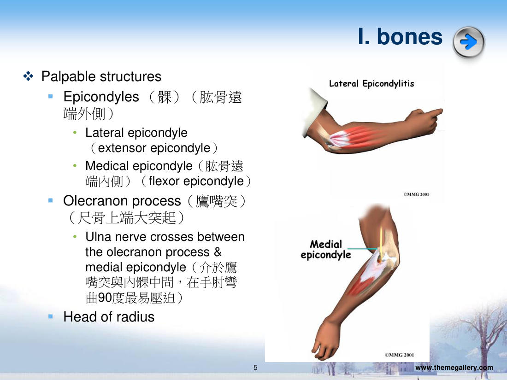
必背重點
三角徵象Triangle sign：鷹嘴突、內上髁、外上髁三點。屈曲 90° 呈等腰三角形；完全伸直時三點成一直線。（用於判斷脫位或骨折）
觸診法：拇指放外上髁、食指放鷹嘴突、中指放內上髁。
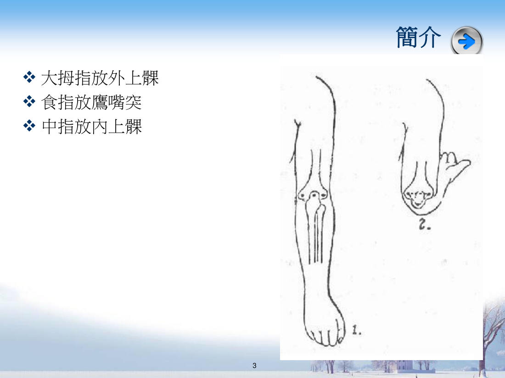
記憶口訣
「外伸內屈」：外上髁＝伸肌＝網球肘；內上髁＝屈肌＝高爾夫球肘。
2. 肘關節的組成 Joints of the elbow
肘部共三個關節，共用同一個關節囊（三個關節之間相通）。
A. 肱尺關節Elbow (ulnohumeral) joint
- 單軸樞紐關節uniaxial hinge joint：只做 flexion & extension。（講義寫「兩度自由度」，與單軸矛盾；以單軸 1 DOF 為準。）
- 穩定性來源：骨性構形 (bony configuration) 與 兩側副韌帶 (collateral ligaments)。
- 運動軸：通過滑車 (trochlea) 與肱骨小頭 (capitulum) 中心的連線。
- 講義 p.7 圖註：可做屈伸，旋內旋外，「小頭半脫位」（指橈骨頭半脫位，幼兒肘常見）。
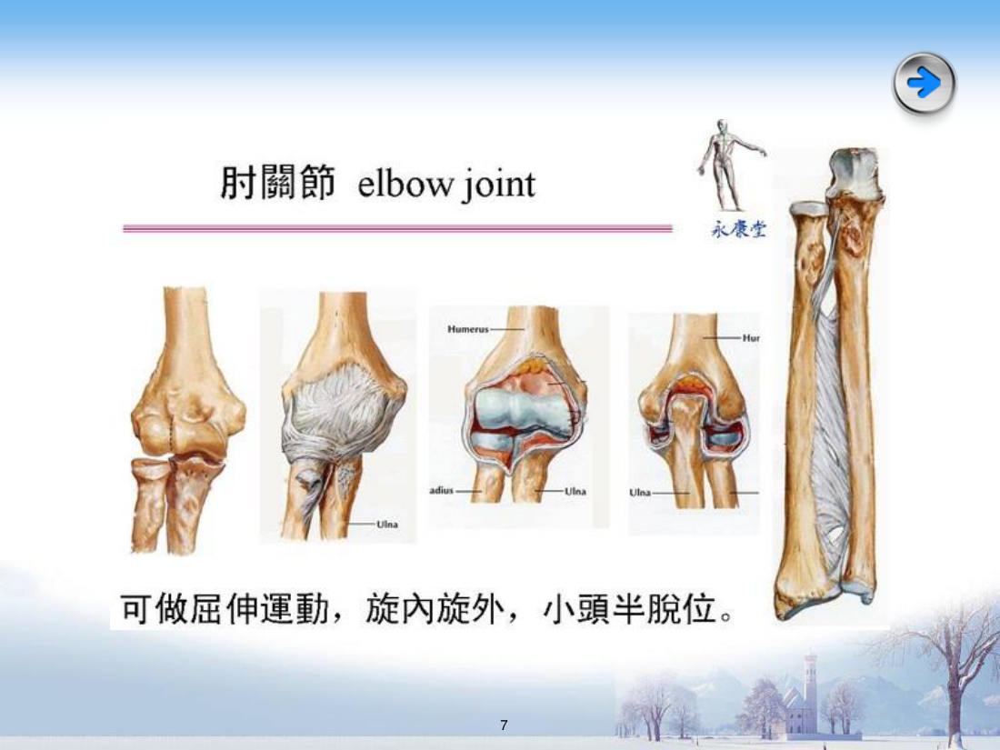
提攜角 Carry anglecubital angle
- 手臂伸直、掌心朝前時，上臂與前臂的長軸不在一直線，前臂略向外偏。
- 成因：遠端內側滑車比外側肱橈之間更往遠端延伸。
- 正常：男 5–10°、女 10–15°（女性較大）。
- 臨床：carry angle 過大 → 內側副韌帶 (MCL) 過度被拉扯，易斷裂／扯傷（講義說法：內側副韌帶太鬆，一外傷就扯傷）。
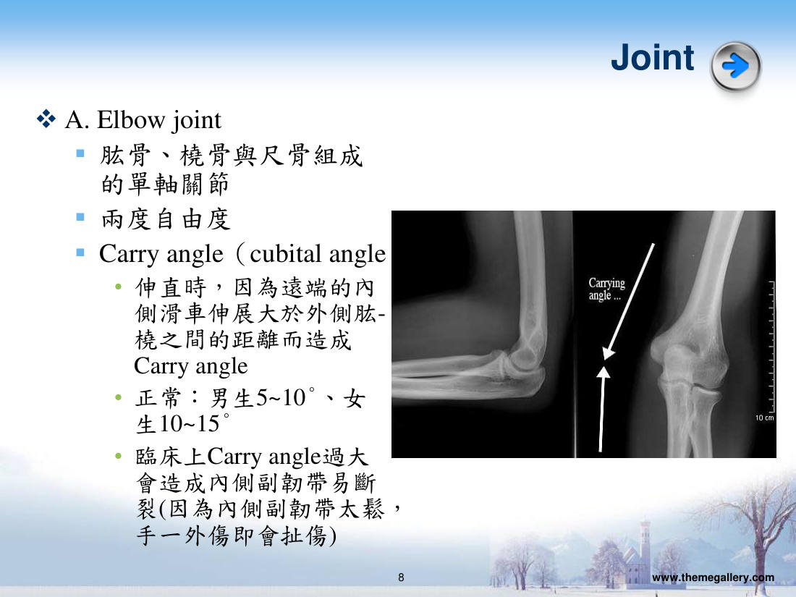
B. 橈尺關節Radioulnar articulation
- 單軸樞軸關節uniaxial pivot joint：容許旋轉；同類如寰樞關節 (C1–C2) 讓頭旋轉。
- 運動時是橈骨繞尺骨旋轉（尺骨固定）。
- 旋後 supination：橈尺骨互相平行；旋前 pronation：橈骨橫越過尺骨。
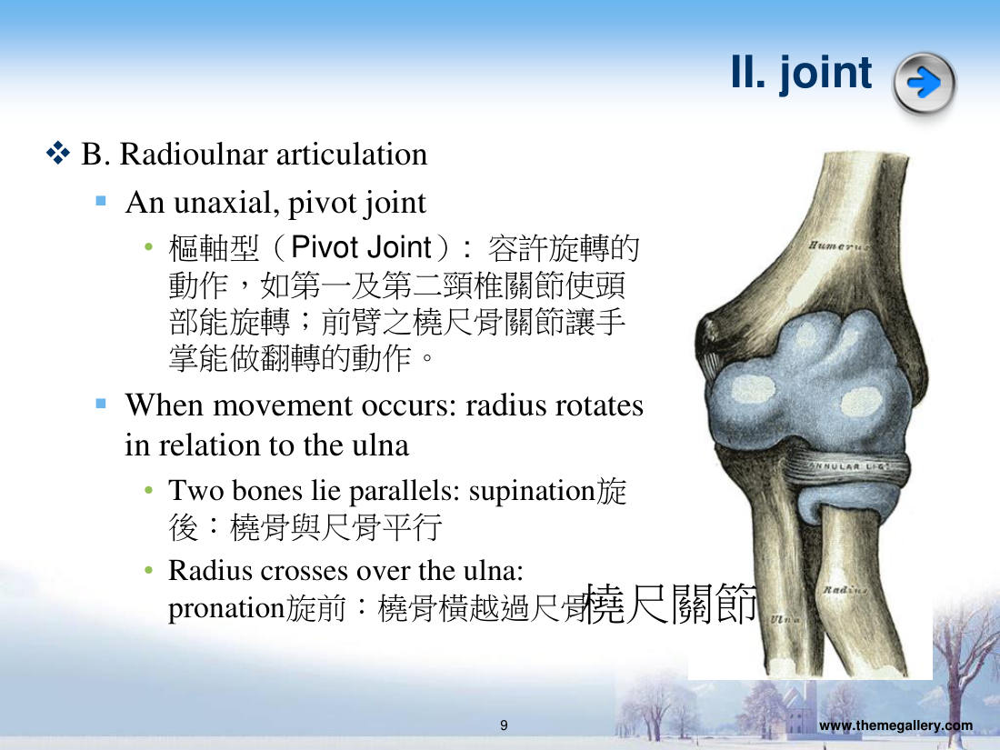
- 近端橈尺關節Proximal radioulnar joint：位於肘關節囊內；橈骨頭與尺骨的橈骨切跡 (radial notch) 相接，同時橈骨頭在肱骨小頭 (capitulum) 圓面上旋轉。環狀韌帶Annular ligament包住橈骨頭，防止橈骨頭做其他方向的移動。
- 遠端橈尺關節Distal radioulnar joint：橈骨繞著尺骨頭轉動（尺骨切跡 vs 尺骨頭）。
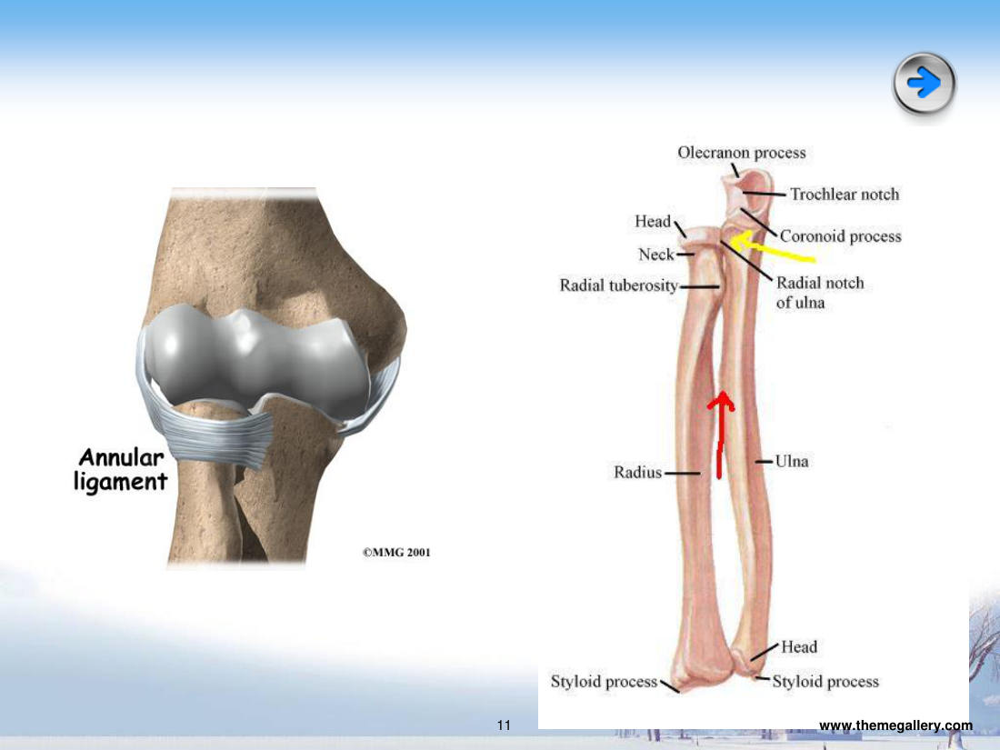
易混淆
肱尺關節 (ulnohumeral) = 屈伸（hinge）；橈尺關節 (radioulnar) = 旋前旋後（pivot）。屈伸看肱尺，轉前臂看橈尺。
3. 關節囊 Joint capsule
- 從後方看有兩個滑液囊 (bursa)：radial-humeral bursa 與 olecranon bursa。
- 前、後側關節囊較鬆 → 容許屈伸；內、外側關節囊較緊 → 加強副韌帶支持。
- 關節囊神經支配豐富，內有許多本體感覺接受器 (proprioceptors)；肘也被視為肩與手之間的「神經連結」。
- 相關韌帶：尺側副韌帶、橈側副韌帶、環狀韌帶。
4. 三個關節的位置 Joint positions
| 關節 | 休息位置 Resting | 最緊位置 Close-packed | 關節囊受限模式 Capsular pattern |
|---|---|---|---|
| 肱尺 Ulnohumeral | 肘屈 70°、旋後 10° | 伸直 + 旋後 | 屈 / 伸 |
| 肱橈 Radiohumeral | 完全伸直 + 旋後 | 肘屈 90°、旋後 5° | 屈 / 伸 |
| 近端橈尺 Proximal radioulnar | 旋後 35°、肘屈 70° | 旋後 5° | 旋後與旋前受到同等限制 |
5. 關節活動度與終端感 ROM & End-feel
| 動作 | ROM | End-feel |
|---|---|---|
| Flexion 屈曲 | 120°–160° | 前側 Soft：上臂與前臂肌肉相互接觸；後側 Hard：尺骨冠狀突 (coronoid process) 頂到肱骨冠狀窩 (coronoid fossa) |
| Extension 伸直 | 0°–5° | Hard：尺骨鷹嘴突 (olecranon process) 頂到肱骨鷹嘴窩 (olecranon fossa) |
必背重點
- 肱尺 = 單軸 hinge；橈尺 = 單軸 pivot。
- Carry angle：男 5–10°、女 10–15°。
- 屈曲 end-feel：前 soft、後 hard；伸直 end-feel：hard（鷹嘴突入鷹嘴窩）。
- 關節囊前後鬆、兩側緊。
對照解剖生理：肩、肘、髖、膝關節
肘關節韌帶與神經
1. 韌帶 Ligaments
內側副韌帶Medial (ulnar) collateral ligament, MCL（三束）
- 前束Anterior bundle：影響肘屈曲 20°–120°；在 20–120° 最緊，完全屈曲與完全伸直時鬆弛。是對抗外翻不穩定valgus instability最重要的約束構造。
- 後束Posterior與斜／橫束Oblique (transverse)：支持並協助 MCL 的穩定。（講義 p.35 稱 MCL 含前、後、橫三部份）
外側副韌帶Lateral collateral ligament, LCL（講義說四條，實際列出三條）
- 橈側副韌帶Radial collateral ligament：自外上髁連到環狀韌帶。
- 外側尺副韌帶Lateral ulnar collateral ligament：主要的外側穩定者，繞過環狀韌帶止於旋後肌結節 (supinator tubercle)。
- 副外側副韌帶Accessory lateral collateral ligament：自 supinator tubercle 到環狀韌帶；功用是維持橈骨頭在尺骨 radial notch 上。
橈尺韌帶 Radioulnar ligaments
- 環狀韌帶Annular ligament、副側韌帶 (accessory collateral)、方形韌帶Quadrate ligament、斜索Oblique cord。
- 骨間膜Interosseous membrane：穩定橈、尺骨之間，避免近端橈骨向近端跑到尺骨上（力量由橈骨傳到尺骨）。
- 防止上橈尺關節脫離：主要是 annular ligament 與 quadrate ligament（講義考題答案 C）。
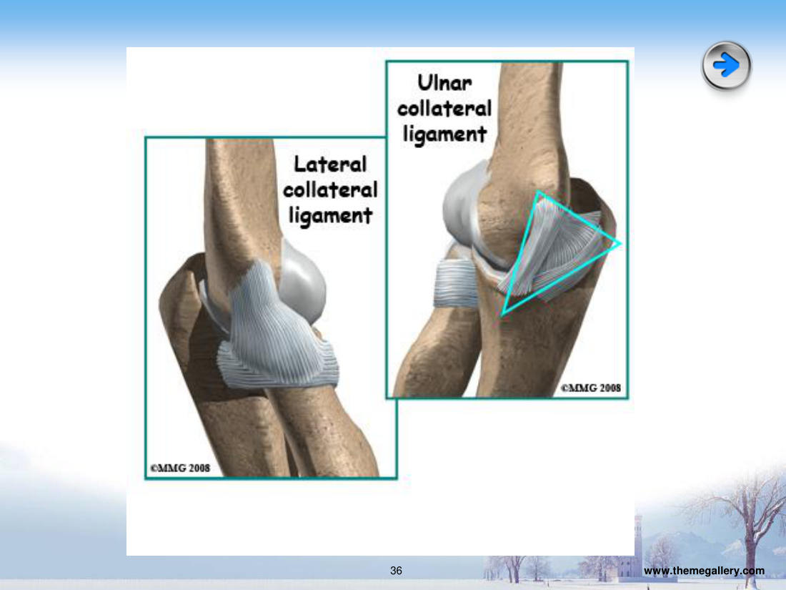
必背重點
- MCL 前束 = 對抗肘外翻 (valgus) 最重要；棒球投手最常拉傷的是尺側副韌帶 (ulnar collateral ligament)。
- 前 MCL 在 20–120° 最緊，全屈曲、全伸直時鬆。
- 外側主要穩定者 = lateral ulnar collateral ligament。
易混淆
內側 = 尺側 (ulnar) 副韌帶 = MCL；外側 = 橈側 (radial) 副韌帶 = LCL。投手的投球動作產生外翻力 → 傷內側（尺側）。
2. 神經與肘 Nerves around the elbow
| 神經 | 路徑 |
|---|---|
| 尺神經Ulnar nerve | 通過內上髁溝 (medial epicondylar groove)，位於鷹嘴突與內上髁之間 |
| 正中神經Median nerve | 通過 supracondylar process 與內上髁之間 |
| 橈神經Radial nerve | 通過肱三頭肌外側頭下方 |
3. 神經損傷的臨床應用 Clinical application
| 癱瘓肌肉 | 原因 | 無法做到 |
|---|---|---|
| 肱三頭肌 Triceps brachii | 橈神經損傷（講義另寫 C6 損傷；肱三頭肌神經根為 C7–C8） | 無法伸肘；躺著無法維持兩手高舉 |
| 肱二頭肌 + 肱肌 Biceps & brachialis | 肌皮神經損傷、某些肌肉萎縮症 | 無法抬手，只能用甩的 |
| 旋前圓肌 + 旋前方肌 Pronator teres & quadratus | 肘上方的正中神經損傷 | 無法握住杯子、無法開鎖 |
記憶口訣
「肌皮管屈（二頭、肱肌），橈神經管伸（三頭、肘後、旋後肌），正中管旋前。」
對照解剖生理：上肢肌肉
肘部肌肉與協同收縮
1. 肌肉總覽（手肘動態穩定肌群）
- 屈肌 Flexors：肱二頭肌、肱肌、肱橈肌。
- 伸肌 Extensors：肱三頭肌、肘後肌。
- 旋前肌 Pronators：旋前圓肌、旋前方肌、肱橈肌。
- 旋後肌 Supinators：旋後肌 (supinator)、肱橈肌；二頭肌也旋後。
2. 肘屈肌 Elbow flexors
| 肌肉 | 近端附著 | 遠端附著 | 神經 | 動作 |
|---|---|---|---|---|
| 肱二頭肌Biceps brachii | 長頭：肩胛骨盂上結節；短頭：肩胛骨喙突 | 橈骨粗隆 (tuberosity of radius) | 肌皮神經 (C5–C6) | 肩屈、肘屈、前臂旋後 |
| 肱肌Brachialis | 肱骨幹遠端（講義寫 1/2 處） | 尺骨冠狀突 | 肌皮神經 (C5–C6) | 肘屈 |
| 肱橈肌Brachioradialis | 肱骨外側髁上嵴 (lateral supracondylar ridge) | 橈骨莖突 (styloid process) | 橈神經 (C5–C6) | 肘屈（前臂中立位）；使前臂回到中立 |
講義訂正：p.16 寫「肱骨內上髁」與「正中神經 (C6–C7)」皆為筆誤，肱橈肌起於外側髁上嵴，受橈神經支配。講義另列「pronation & elbow flexion」，實際是前臂中立位時最有效的屈肘肌。
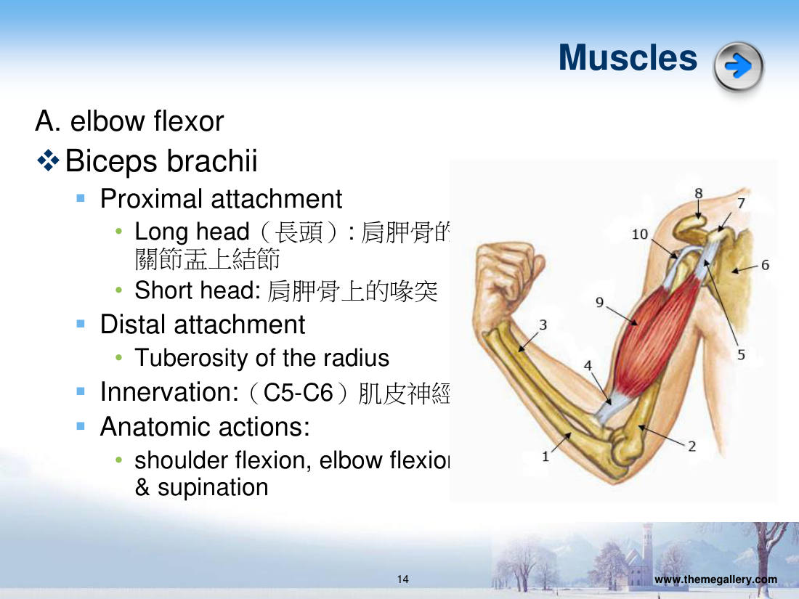
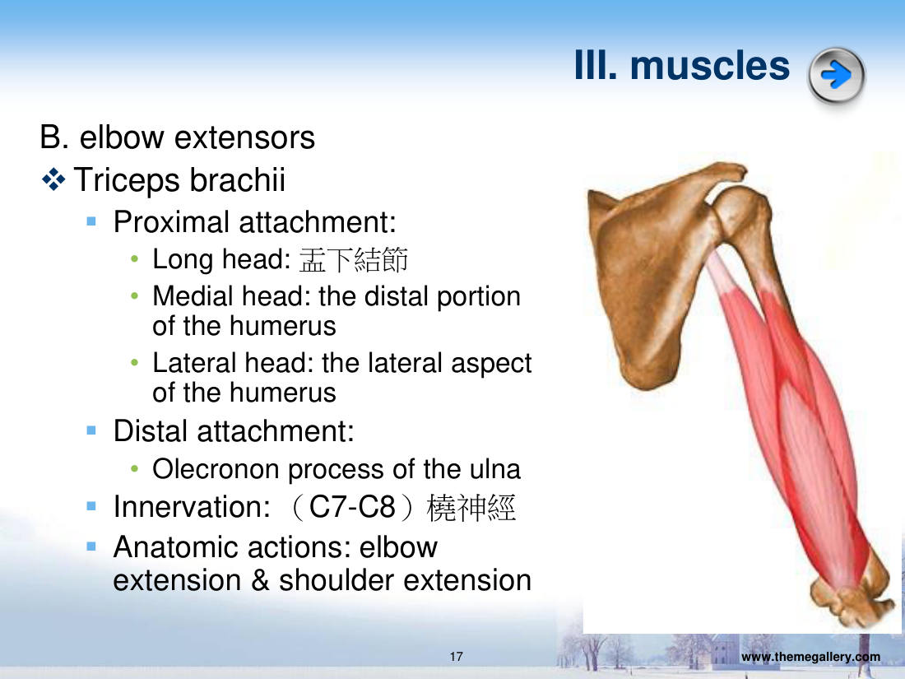
3. 肘伸肌 Elbow extensors
| 肌肉 | 近端附著 | 遠端附著 | 神經 | 動作 |
|---|---|---|---|---|
| 肱三頭肌Triceps brachii | 長頭：盂下結節；內側頭：肱骨遠端後面；外側頭：肱骨外側面 | 尺骨鷹嘴突 | 橈神經 (C7–C8) | 肘伸、肩伸（長頭） |
| 肘後肌Anconeus | 肱骨外上髁 | 尺骨 | 橈神經 (C7–C8) | 肘伸、穩定肘與近端橈尺關節 |
4. 旋後與旋前肌
| 肌肉 | 附著 | 神經 | 動作 |
|---|---|---|---|
| 旋後肌Supinator | 近端：外上髁與鄰近尺骨；遠端：橈骨近端的腹側與外側面 | 橈神經 (C5–C7) | 旋後 |
| 旋前方肌Pronator quadratus | 尺骨與橈骨遠端 1/4 的掌（volar）側 | 正中神經分支（骨間前神經）(C8–T1) | 旋前 |
| 旋前圓肌Pronator teres | （講義未列）內上髁→橈骨外側中段 | 正中神經 | 旋前（較強的旋前肌） |
5. 協同收縮 Synergistic contraction
- 神經系統選擇以最少能量達成目的的肌肉；參與的肌肉數視工作需求而定。
- 許多肌肉跨越一個以上關節；用雙關節肌肉只產生單關節動作是經濟的，此時協同肌必須穩定不動作的關節，或使它往相反方向動。
肘屈曲時各肌的角色
- 肱肌：不論有無負重，永遠是肘屈肌（最穩定的屈肘肌，與前臂位置無關）。
- 肱橈肌：前臂在中立位時是純屈肌。
- 肱二頭肌：肩屈 + 肘屈 + 前臂旋後。
比較
- 二頭肌 vs 旋後肌：肘屈 90° 時，二頭肌旋後效率約為旋後肌的近 4 倍（Fick, 1911）；肘伸直 + 旋後時，只有約 2 倍。
- 旋前圓肌 vs 旋前方肌：旋前圓肌是較強的旋前肌；旋前方肌在慢速、無阻力旋前時才主動收縮；旋前方肌作用力較不受肘關節與前臂位置影響。
- 三頭肌 vs 肘後肌：三頭肌遠比肘後肌強；兩者共同保護肘與近端橈尺關節。
雙關節（多關節）肌
- 肱二頭肌：三關節肌（肩、肱橈／肱尺、橈尺）；其長頭為雙關節肌。
- 肱三頭肌長頭：雙關節肌（肩、肘）。
- 旋前圓肌：雙關節肌（肱尺、肱橈）。
必背重點
- 屈肘三肌：二頭肌、肱肌、肱橈肌；伸肘：三頭肌 + 肘後肌。
- 二頭肌 = 肩屈 + 肘屈 + 旋後（肌皮神經 C5–C6）。
- 肱三頭肌長頭同時跨肩，肩屈 + 肘屈時被拉到最長。
- 肱肌：永遠有利的屈肘肌；旋前方肌：作用力不受位置影響、最難徒手觸摸。
6. 肌肉角色與主動不足
- 主作用肌Agonist：主要造成關節活動或維持姿勢。
- 拮抗肌Antagonist：造成與主作用肌相反的動作，通常被動伸長或縮短。
- 協同肌Synergist：與主作用肌同時收縮，常以等長收縮穩定近端關節而讓遠端活動。例：阻抗式肘屈時，旋前圓肌抵消二頭肌「不必要的旋後」。
- 角色並非固定，會隨動作與外力改變。
- 主動不足Active insufficiency：肌肉在最短長度時收縮，位於長度–張力曲線最低點，收縮力弱；身體會避免此情況（例：拉、推動作）。
7. 網球肘與高爾夫球肘
| 俗稱 | 部位 | 附著的肌群 |
|---|---|---|
| 網球肘 Tennis elbow | 外上髁 (lateral epicondyle) | 腕與指的伸肌 (extensors) |
| 高爾夫球肘 Golfer's elbow | 內上髁 (medial epicondyle) | 腕與指的屈肌 (flexors) |
腕骨、腕關節與韌帶
腕骨排列與手部骨骼
腕骨Carpal bones共 8 塊，近端、遠端各 4 塊。表內由橈側排到尺側。
| 腕骨排 | 排列 | 關節關係 |
|---|---|---|
| 近端排 | 舟狀骨Scaphoid、月狀骨Lunate、三角骨Triquetrum、豆狀骨Pisiform | 前三塊參與腕部近端關節面。豆狀骨只與三角骨形成關節。 |
| 遠端排 | 大多角骨（大梯形骨）Trapezium、小多角骨（小梯形骨）Trapezoid、頭狀骨Capitate、鉤狀骨Hamate | 與掌骨相接。 |
記憶口訣
從拇指側念到小指側。近排「舟月三豆」，遠排「大小頭鉤」。
- 每手有 5 塊掌骨Metacarpals，自拇指向小指編為第 1 至第 5。
- 每手有 14 塊指骨Phalanges。拇指有近、遠兩節。第 2–5 指各有近、中、遠三節。
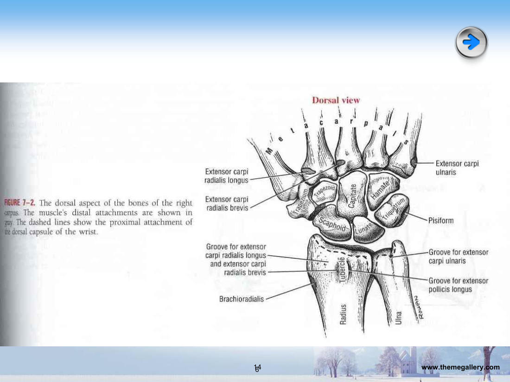
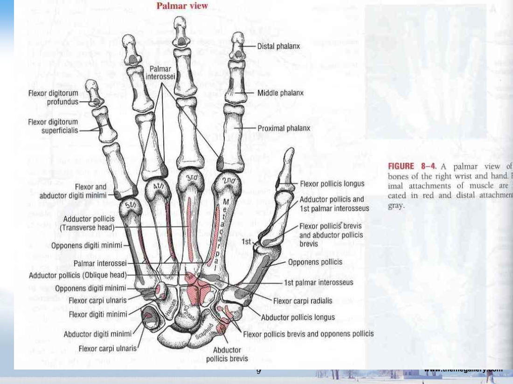
可摸到的骨性標誌
- 尺側靠手腕處可摸到尺骨頭Head of ulna與尺骨莖突Ulnar styloid process。尺骨莖突偏內後側。
- 掌心朝前時，橈骨莖突Radial styloid process朝外側，比尺骨莖突更靠手端。
- 從橈骨莖突往腕背約三分之一處，可摸到李氏結節（橈骨背側結節）Lister’s tubercle。再往手端摸，凹處是頭狀骨。
- 遠端橈骨背面有伸肌腱溝。圖上可見兩條橈側伸腕肌腱及伸拇長肌腱的溝。
- 手腕往尺側偏時，可在橈骨莖突下方摸舟狀骨。舟狀骨是講義指出最容易骨折的腕骨。
- 解剖鼻煙壺Anatomical snuffbox的底是舟狀骨與大多角骨。
- 手腕在中立位時，李氏結節、月狀骨、頭狀骨與第 3 掌骨在一直線。屈伸時可感覺月狀骨與頭狀骨滑動。
- 手腕往橈側偏時，三角骨可從尺骨莖突下方突出。豆狀骨位於三角骨的掌側，可摸到突起。
- 手腕往尺側偏時，可找大多角骨與第 1 掌骨的接合處。
- 從豆狀骨連到拇指與食指間的指蹼，鉤狀骨的鉤在這條連線下方。
講義 p.5 的「第三指骨」依 p.16–17 改為第 3 掌骨。「投狀骨」應為頭狀骨。
腕關節與關節盤
| 關節 | 骨頭與構造 | 類型、動作或作用 |
|---|---|---|
| 橈腕關節Radiocarpal joint | 遠端橈骨對舟狀骨、月狀骨。p.2 的廣義清單也列三角骨。 | 滑液髁狀關節Synovial condyloid joint。可屈伸、橈偏與尺偏。 |
| 尺腕關節Ulnocarpal joint | 尺骨遠端與尺側腕骨之間，有三角纖維軟骨複合體。 | 關節盤隔開尺骨與橈腕關節，也隔開遠端橈尺關節與橈腕關節。 |
| 中腕關節Midcarpal joint | 位於近端排與遠端排腕骨之間。 | 由多個滑液平面關節Synovial plane joints組成。參與屈伸與橈、尺偏。 |
- 橈腕關節主要靠掌側橈腕韌帶Volar radiocarpal ligament提供穩定。
- 三角纖維軟骨複合體Triangular fibrocartilage complex, TFCC位於腕尺側。講義列出遠端橈骨的尺側與尺骨莖突。p.2 還列第 5 掌骨基部，p.7、10 的圖未標明該附著點。
- 三角纖維軟骨盤Triangular fibrocartilage disc是複合體的一部分。軟骨盤連繫遠端橈骨和尺骨。
- 其他組成包括尺側副韌帶Ulnar collateral ligament、掌側與背側橈尺韌帶Volar and dorsal radioulnar ligaments、半月板樣體Meniscus homologue。
- 複合體也包括尺側伸腕肌腱鞘Extensor carpi ulnaris sheath、尺月韌帶Ulnolunate ligament及尺三角韌帶Ulnotriquetral ligament。
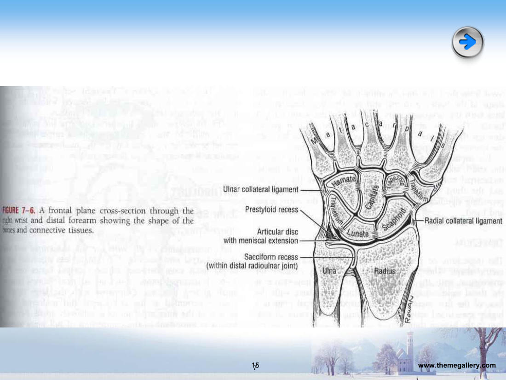
腕韌帶與腕隧道
- 腕韌帶穩定關節，也引導骨頭沿適當方向移動。
- 腕韌帶限制過度活動，並防止腕骨在動作時脫位。
- 腕韌帶把手部承受的力量傳到前臂。
- 外在韌帶Extrinsic ligaments把橈骨、尺骨或掌骨連到腕骨。講義列橈側副韌帶Radial collateral ligament、橈舟頭韌帶Radioscaphocapitate ligament與橈月三角韌帶Radiolunatotriquetral ligament。
- 內在韌帶Intrinsic ligaments連接腕骨。講義 p.19 中譯誤寫「指骨」。
- 腕背圖可見舟大多角骨韌帶Scaphotrapezial ligament、背側腕骨間韌帶Dorsal intercarpal ligament、背側橈腕韌帶Dorsal radiocarpal ligament及兩側副韌帶。
- 關節外構造有伸肌支持帶Extensor retinaculum和屈肌支持帶Flexor retinaculum。
- 腕橫韌帶Transverse carpal ligament維持腕橫弓Transverse carpal arch，並形成腕隧道Carpal tunnel的頂。
必背重點
- 腕隧道的橈側骨標誌是舟狀骨、大多角骨。尺側是豆狀骨、鉤骨鉤。
- 管內有正中神經Median nerve和 9 條肌腱。
- 9 條肌腱＝4 條屈指淺肌Flexor digitorum superficialis, FDS腱＋4 條屈指深肌Flexor digitorum profundus, FDP腱＋1 條屈拇長肌Flexor pollicis longus, FPL腱。
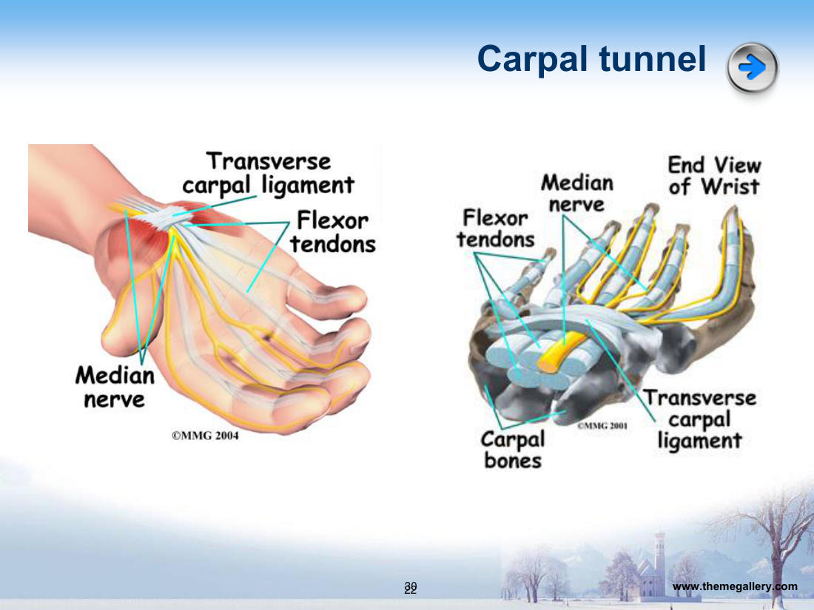
手腕活動度、軸與終端感
| 動作 | 關節分工 | 終端感End-feel |
|---|---|---|
| 屈曲Flexion | 橈腕 50°，中腕 35° | — |
| 伸直Extension | 橈腕 35°，中腕 50° | — |
| 橈側偏移Radial deviation | 橈腕、中腕各約 1/2 | 硬Hard |
| 尺側偏移Ulnar deviation | 中腕約 1/3 | 結實Firm |
- 橈偏、尺偏的運動軸通過頭狀骨的頭。屈伸軸也通過頭狀骨。
- 附屬動作Accessory motions有滑動Glide（背側、掌側、內側、外側）與牽引分離Distraction。
- 腕關節的最緊密位置Close-packed position是完全伸直。
腕掌、掌指與指間關節
關節位置、類型與動作
| 關節 | 相接骨頭 | 類型與自由度 | 動作 |
|---|---|---|---|
| 第 2–4 腕掌關節Carpometacarpal joints, CMC | 遠端腕骨排與第 2–4 掌骨基部 | 滑液平面關節 | 屈、伸。與掌部橫弓形狀有關。 |
| 拇指腕掌關節 | 大多角骨與第 1 掌骨基部 | 馬鞍關節Sellar or saddle joint | 屈、伸，外展Abduction、內收Adduction，對掌Opposition、復位Reposition。 |
| 掌指關節Metacarpophalangeal joint, MCP | 掌骨頭與近節指骨基部 | 滑液髁狀關節，2 個自由度 | 屈、伸、外展、內收。 |
| 指間關節Interphalangeal joint, IP | 相鄰的兩節指骨 | 滑液樞紐關節Synovial hinge joint，1 個自由度 | 屈、伸。 |
- 第 2–5 指的近端指間關節Proximal interphalangeal joint, PIP在近節與中節之間。
- 第 2–5 指的遠端指間關節Distal interphalangeal joint, DIP在中節與遠節之間。拇指只有一個指間關節。
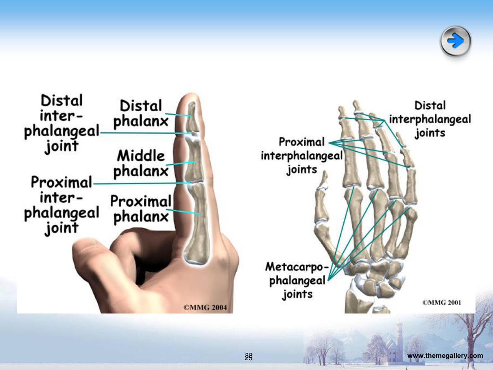
掌側板與副韌帶
- 掌側板Volar plate在關節掌側。靠這個構造，指骨關節面雖小，仍有較大的活動範圍。
- 附屬副韌帶Accessory collateral ligaments控制掌側板的移動。
- 掌指關節的內、外側副韌帶Medial and lateral collateral ligaments在屈曲 90° 時拉緊，伸直時較鬆。
- 掌指關節伸直時可以張開或併攏手指，屈曲 90° 時外展受限。
- 指間關節的掌側板機轉與掌指關節類似。
- 近端指間關節兩側的掌面有限制韌帶Checkrein ligament，可限制過度伸直Hyperextension。
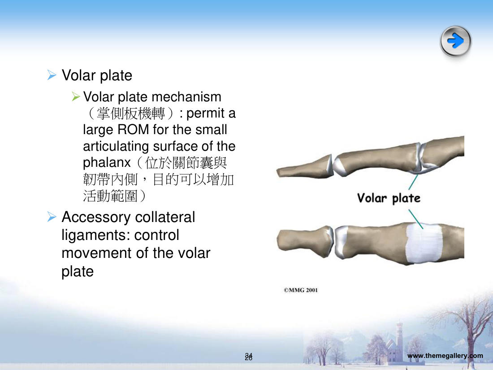
手指活動度與最緊密位置
| 關節 | 屈曲 | 過伸 | 外展、內收 |
|---|---|---|---|
| 第 2–5 指掌指關節 | 90°，終端感硬或結實 | 角度因人而異，終端感結實 | 講義列 20° |
| 拇指掌指關節 | 45–60° | 0–20° | — |
易混淆
最緊密位置要分關節背。腕是完全伸直，手指掌指關節是屈曲 90°。
指關節的附屬動作包括背側、掌側及側向滑動、旋轉與牽引分離。
腕指肌肉與肌腱
腕部主要肌肉
起點與止點列出講義圖可辨認的部位（p.6、9、12、33、64–65）。「附近」指圖上顯示的區域。
| 肌肉 | 起點 | 止點 | 動作 | 神經 |
|---|---|---|---|---|
| 橈側伸腕長肌Extensor carpi radialis longus, ECRL | 肱骨外上髁近端 | 第 2 掌骨基部背側 | 伸腕、橈偏 | 橈神經Radial nerve |
| 橈側伸腕短肌Extensor carpi radialis brevis, ECRB | 肱骨外上髁附近 | 第 3 掌骨基部背側 | 伸腕 | 橈神經 |
| 尺側伸腕肌Extensor carpi ulnaris, ECU | 肘外側至前臂背側 | 第 5 掌骨基部背側 | 伸腕、尺偏 | 橈神經 |
| 橈側屈腕肌Flexor carpi radialis, FCR | 肱骨內上髁附近 | 第 2 掌骨基部掌側 | 屈腕、橈偏 | 正中神經 |
| 掌長肌Palmaris longus, PL | 肱骨內上髁 | 掌腱膜Palmar aponeurosis | 屈腕 | 正中神經 |
| 尺側屈腕肌Flexor carpi ulnaris, FCU | 肘內側至前臂掌側 | 豆狀骨。圖也標出第 5 掌骨基部。 | 屈腕、尺偏 | 尺神經Ulnar nerve |
- 伸指總肌Extensor digitorum, ED / Extensor digitorum communis, EDC可協助伸腕。
- 屈指淺肌可協助屈腕。
- 橈偏肌群另有拇長外展肌Abductor pollicis longus, APL與伸拇短肌Extensor pollicis brevis, EPB。
記憶口訣
伸腕記「橈長、橈短、尺伸」。屈腕記「橈屈、掌長、尺屈」。尺偏記「尺屈、尺伸」。
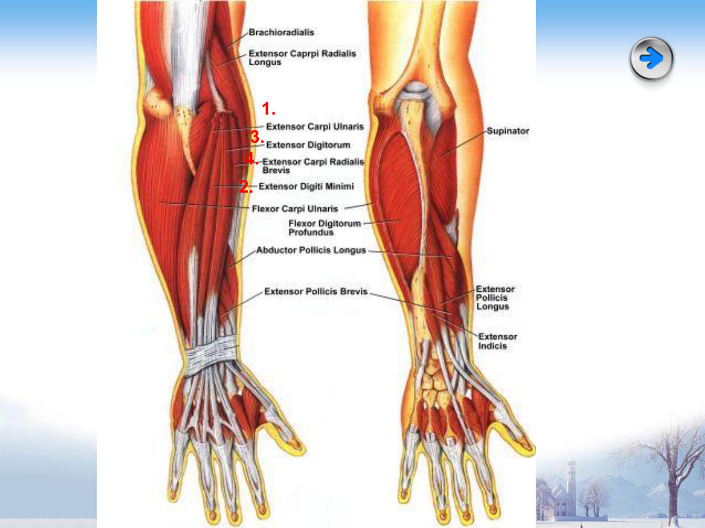
前臂掌側三層
- 淺層有橈側屈腕肌、掌長肌、尺側屈腕肌及旋前圓肌Pronator teres。旋前圓肌做前臂旋前。
- 中層是屈指淺肌。
- 深層有屈指深肌、旋前方肌Pronator quadratus與屈拇長肌。p.36 把屈指深肌誤寫成「屈指伸肌」。
p.65 的前臂圖把橈側屈腕肌標了兩次。尺側、走向豆狀骨的是尺側屈腕肌。
手指外在肌與內在肌
- 外在肌Extrinsic muscles起於前臂或肱骨。肌腱延伸到手。
- 內在肌Intrinsic muscles的起點、止點都在手部。包括蚓狀肌、骨間肌及大、小魚際肌。
| 肌肉 | 起點或近端關係 | 止點或遠端關係 | 動作 | 神經 |
|---|---|---|---|---|
| 屈指淺肌（外在） | 肘內側至前臂掌側 | 第 2–5 指中節指骨 | 屈指，參與用力握，也協助屈腕 | 正中神經 |
| 屈指深肌（外在） | 前臂掌側深層 | 第 2–5 指遠節指骨 | 屈指、參與用力握 | 食、中指側為正中。無名、小指側為尺神經。 |
| 伸指總肌（外在） | 肘外側至前臂背側 | 經伸肌裝置連到指骨 | 伸指，協助伸腕 | 橈神經 |
| 伸食指肌Extensor indicis proprius, EIP、伸小指肌Extensor digiti minimi, EDM（外在） | 前臂背側 | 各接到對應手指的伸肌裝置 | 伸食指、伸小指 | 橈神經 |
| 蚓狀肌Lumbricals（內在） | 屈指深肌腱 | 伸肌裝置 | 屈掌指、伸指間 | 第 1、2 條為正中。第 3、4 條為尺神經。 |
| 背側骨間肌Dorsal interossei（內在） | 掌骨間 | 近節指骨基部與伸肌裝置 | 手指外展，參與捏與握 | 尺神經 |
| 掌側骨間肌Palmar interossei（內在） | 掌骨 | 近節指骨基部與伸肌裝置 | 手指內收，協助伸遠端指間關節 | 尺神經 |
p.56 題目把「遠端指間關節」誤寫成「遠趾間關節」。p.61 圖例列背側與掌側骨間肌各 4 條，p.9 圖另標出靠拇指的第 1 掌側骨間肌。
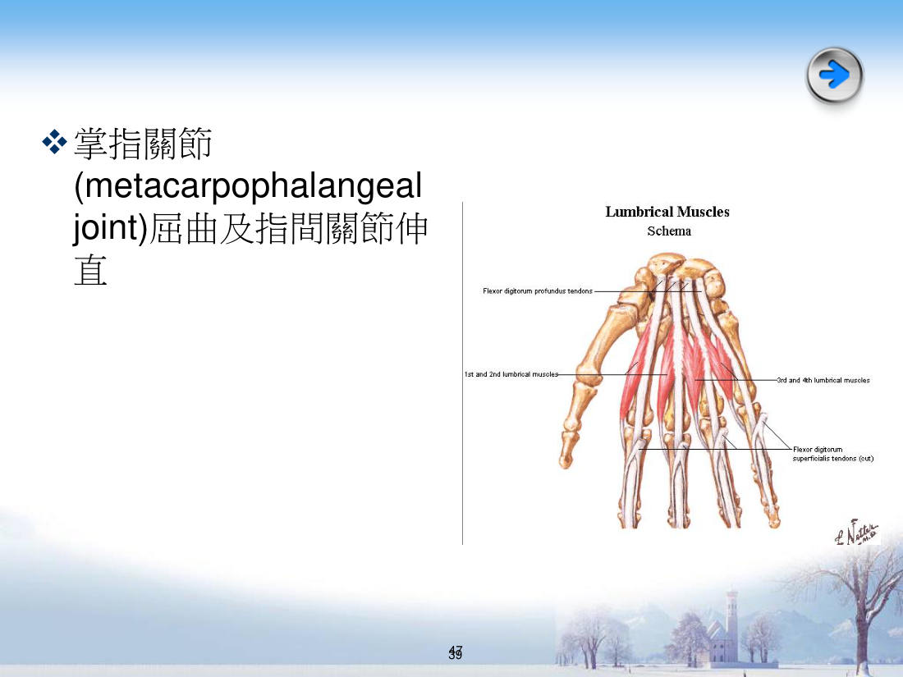
伸肌裝置與屈肌滑車
- 伸肌裝置（伸肌束縛帶）Extensor assembly讓手指在不同屈曲位置都能伸直。
- 它讓伸肌腱以較短路徑跨關節，也讓手指能充分屈曲。
- 肌腱系統Tendinous system包含長伸肌腱、骨間肌、蚓狀肌、伸食指肌及伸小指肌。
- 長伸肌腱的中央束Central band附於中節指骨基部。兩條側束Lateral bands分別走在近端指間關節兩側。
- p.41 列出的骨間肌連接處有近節指骨基部、掌側板、側束及中節指骨基部。
- 支持帶系統Retinacular system包含筋膜與韌帶。
- 屈肌滑車Flexor pulleys形成有滑膜內襯的通道，使屈指淺、深肌腱貼著指骨。
- 第 2–5 指圖上可見環狀滑車Annular pulleys, A1–A5與十字滑車Cruciate pulleys, C1–C3。拇指圖上可見斜形及環狀滑車。
- 圖上另標出指纖維鞘Fibrous digital sheath、指滑膜鞘Digital synovial sheath及深橫掌骨韌帶Deep transverse metacarpal ligament。
p.42 用「防止肌腱打結」描述滑車。圖上的重點是固定肌腱，使它貼近指骨。
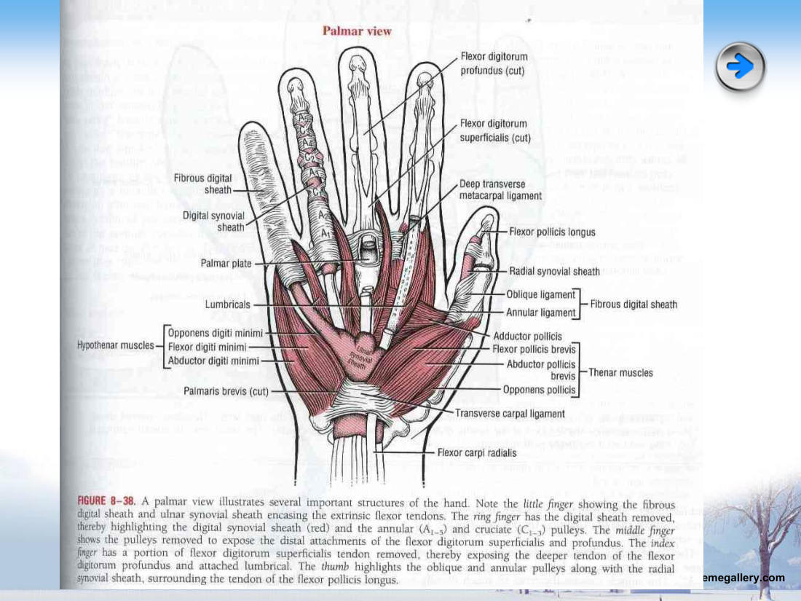
拇指與抓握動作
拇指肌肉
| 肌肉 | 講義圖示的附著或位置 | 動作 | 神經 |
|---|---|---|---|
| 屈拇長肌（外在） | 前臂深層至拇指遠節指骨 | 屈拇指 | 正中神經 |
| 伸拇長肌Extensor pollicis longus, EPL（外在） | 前臂背側，肌腱經橈骨背側的腱溝 | 伸拇指 | 橈神經 |
| 伸拇短肌（外在） | 前臂背側至拇指 | 伸拇指、協助橈偏 | 橈神經 |
| 拇長外展肌（外在） | 前臂背側至第 1 掌骨基部 | 拇指外展、協助橈偏 | 橈神經 |
| 拇短屈肌Flexor pollicis brevis, FPB（內在） | 大魚際至拇指近節指骨基部 | 屈拇指 | 淺頭正中神經，深頭尺神經 |
| 拇短外展肌Abductor pollicis brevis, APB（內在） | 大魚際至拇指近節指骨基部 | 拇指外展 | 正中神經 |
| 拇指對掌肌Opponens pollicis（內在） | 大魚際至第 1 掌骨 | 拇指對掌 | 正中神經 |
| 拇指內收肌Adductor pollicis（內在） | 斜頭起於掌部近端，橫頭起於第 3 掌骨。止於拇指近節指骨基部。 | 拇指內收 | 尺神經 |
p.48 圖示由外向內辨認拇指對掌肌、拇短外展肌、拇指內收肌。
手指張合與小指對掌
- 手指張開靠背側骨間肌與小指外展肌Abductor digiti minimi。
- 手指併攏靠掌側骨間肌。
- 小魚際主要有小指外展肌、小指短屈肌Flexor digiti minimi brevis與小指對掌肌Opponens digiti minimi。小指對掌時，小指短屈肌可協助。
- p.47 對掌清單也列掌長肌與掌短肌Palmaris brevis。p.62 把掌長肌列為屈腕肌。p.68 把掌短肌單獨標在小魚際肌群之外。
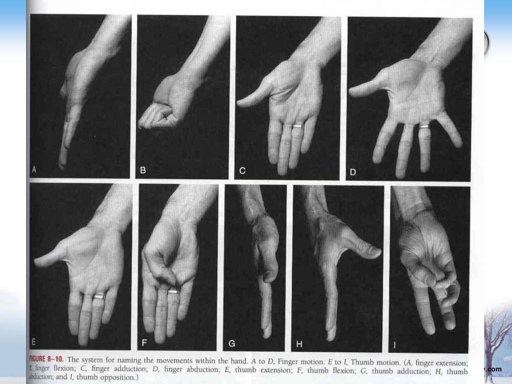
抓握、伸指與肌肉協同
- 用力握Power grip用到屈指淺肌、屈指深肌及骨間肌。
- 捏、抓與用力握時，骨間肌的肌電活動EMG activity高。
- 講義指出蚓狀肌很少與屈指深肌同時收縮，主要考屈掌指與伸指間的作用。
- 伸指時，蚓狀肌降低被動張力，讓伸指總肌較容易把手指伸直。
- 蚓狀肌也防止伸指總肌把掌指關節拉到過伸。
- 抓握時，伸腕肌和屈指肌協同。伸腕肌把手腕穩住，避免手腕被拉向屈曲。
- 主動伸指時，屈腕肌和伸指肌協同。
- 握拳後再伸腕，講義 p.56 指出伸指總肌相對較少活動。
易混淆
- 手內肌正位（掌面正向抓握）Intrinsic-plus position是掌指屈曲、指間伸直。
- 手內肌負位（掌面負向抓握）Intrinsic-minus position是掌指過伸、指間部分屈曲。
七種抓握方式
| 抓握方式 | 講義例子或動作 |
|---|---|
| 鉤握Hook grasp | 提公事包 |
| 圓柱握Cylindric grasp | 拿玻璃杯 |
| 拳握Fist grasp | 握鐵鎚 |
| 球形握Spheric grasp | 抓球 |
| 指尖捏Tip prehension | 用指尖捏取。p.53 的例子寫作「指甲彄」，字義不清。 |
| 指腹捏Palmar prehension | 對指 |
| 側捏Lateral prehension | 拿扁平物品 |
肌腱固定效應
- 肌腱固定效應Tenodesis action是手腕改變位置時，跨腕肌腱的被動張力帶動手指。p.71 標成「Tendosis」，p.72 使用「Tenodesis」。
- 伸腕會拉緊長屈指肌腱。拇指和其餘手指會被動屈曲。
- 屈腕會拉緊長伸指肌腱。手指可被動伸直。
- p.71 右圖示範較大的腕部活動範圍。伸腕時握拳，屈腕時張開手。圖中的伸腕軸較屈腕軸靠近手端。
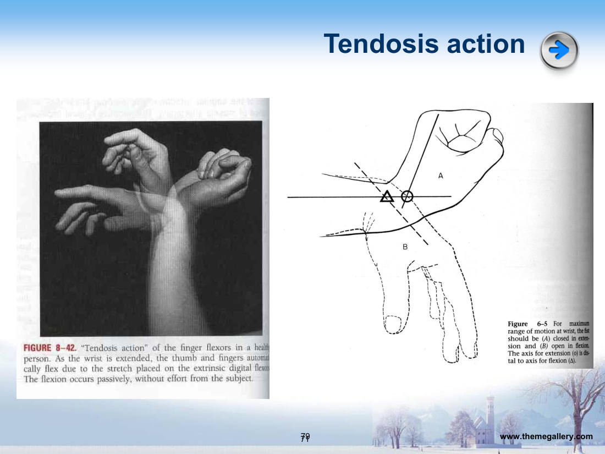
神經支配與臨床
三條周邊神經
| 神經 | 講義圖的神經根 | 主要運動支配 | 感覺分布重點 |
|---|---|---|---|
| 橈神經 | C5–T1（p.59） | 伸腕肌、長伸指肌，以及拇指外在伸肌與拇長外展肌 | 手背橈側，圖示集中於拇、食指間的手背區 |
| 正中神經 | C6–T1（p.60） | 兩條旋前肌、多數屈腕與長屈指肌、多數大魚際肌及外側兩條蚓狀肌 | 圖說指出食指與中指末端，並涵蓋拇指與手指捏合時接觸的皮膚 |
| 尺神經 | C8–T1（p.61） | 多數手內肌、尺側屈腕肌、屈指深肌的尺側半 | 小指與手的尺側 |
p.49 標題的「head」應為「hand」。
必背重點
- 看起點猜神經（p.49）：起自外上髁、前臂背側的肌肉 → 橈神經；起自內上髁、前臂掌側的肌肉 → 多為正中神經（尺側屈腕肌、屈指深肌尺側半例外，屬尺神經）。
- 屈指深肌與蚓狀肌都分成正中、尺神經支配的兩側。食、中指側屬正中，無名、小指側屬尺神經。
- 拇短屈肌淺頭屬正中，深頭屬尺神經。
- 講義題目問「影響拇指動作最多的神經」，答案為正中神經。
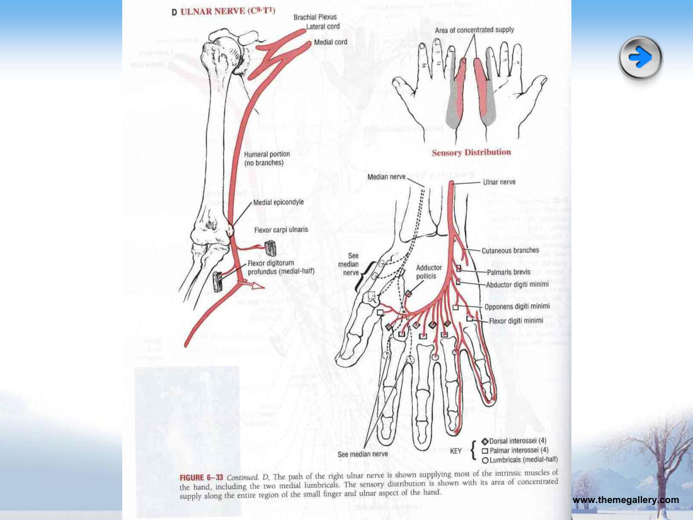
周邊神經麻痺與手部變形
| 受損神經 | 講義列出的表現 | 判讀重點 |
|---|---|---|
| 橈神經 | 垂腕Wrist drop、握力變弱 | 伸腕肌與長伸指肌麻痺。抓握時難以穩住腕部。 |
| 尺神經 | 爪形手Claw hand | 手內肌麻痺可出現爪形姿勢。掌指過伸，指間屈曲。 |
| 正中神經 | 猿手變形Ape-hand deformity | 正中神經支配多數大魚際肌。p.52 考猿手與神經的配對。 |
p.51 左圖標的是第一、第二指的爪形。神經麻痺與變形的配對依 p.50 文字。
腕隧道症候群
- 腕隧道症候群Carpal tunnel syndrome與腕隧道內的正中神經受壓有關。
- 尺側滑膜鞘Ulnar synovial sheath包住屈指淺肌與深肌的 8 條腱。橈側滑膜鞘Radial synovial sheath包住屈拇長肌腱。
- 滑膜鞘可減少摩擦。滑膜若腫脹，狹小的腕隧道內壓力會升高。
- 常見正中神經感覺區疼痛、麻木或刺麻。進展後可有大魚際肌無力與萎縮。
- 講義指出手腕到達極端角度或握拳時，隧道內壓可明顯增加。
- 講義提到長時間使用鍵盤可能相關。調整鍵盤設計可減少打字時腕部的極端角度。
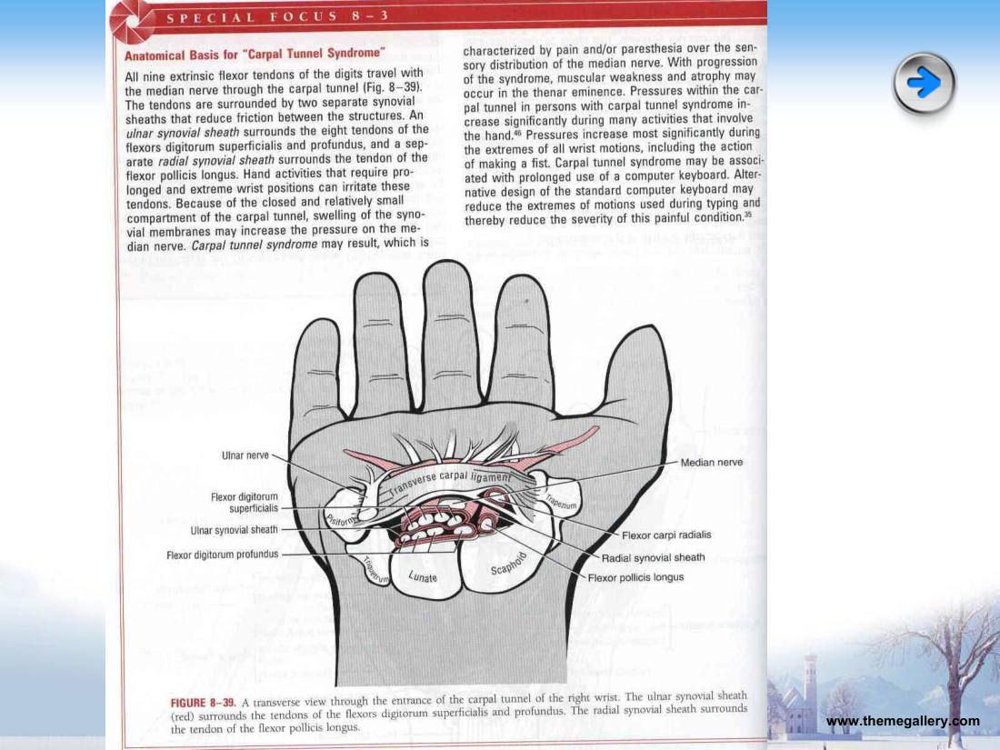
C6 脊髓損傷個案
- p.72 的四肢癱瘓個案仍能主動伸腕。屈指與伸指肌的主動功能受損。
- 準備拿杯時，讓重力把手腕帶向屈曲。伸指總肌被拉緊，手指被動張開。
- 拿杯時主動伸腕。長屈指肌被拉緊，手指被動收攏抓住杯子。
- 主動伸腕的幅度會影響屈指肌的被動拉力。
p.72 右圖將主動伸腕肌標為橈側伸腕短肌，圖說寫橈側伸腕長肌。兩處都在示範主動伸腕帶出被動屈指。
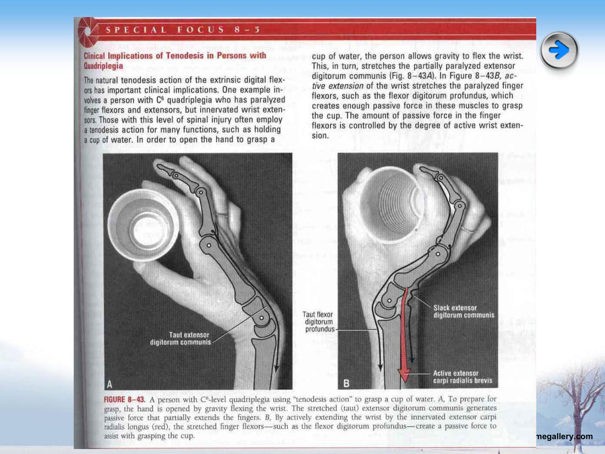
講義附錄的肩肘複習題
- p.54–58 題組把小圓肌列為對肩峰鎖骨關節穩定貢獻最少的選項。
- 題組把胸大肌列為對肩胛骨動作最少直接影響的選項。
- 喙鎖韌帶Coracoclavicular ligament包括斜方韌帶Trapezoid ligament與圓錐韌帶Conoid ligament。
- 前鋸肌Serratus anterior無力可出現翼狀肩胛Winging scapulae。前鋸肌麻痺會影響手臂完全抬舉。
- 肩胛肱骨節律Scapulohumeral rhythm有助盂肱關節穩定、三角肌收縮與手臂抬高。題組把「肩胛骨動作比盂肱關節大」列為錯項。
- 腋下拐題的答案是背闊肌加肱三頭肌。
- 肩外展時使肱骨頭下沉的題目，講義答案列棘上肌。
- 肩水平外展 90° 舉重時，題目把大圓肌列為穩定作用最小的選項。
- 肱二頭肌能同時屈肩、屈肘及旋後前臂。肱肌的屈肘作用最少受前臂旋前或旋後位置影響。
- 轉螺絲起子時，題目列肱二頭肌與肱三頭肌協同收縮。肘屈伸軸通過肱骨滑車與小頭。
- p.57 肘關節題依 p.58 答案將「旋前或旋後都使骨間膜變緊」列為錯項。題目的全伸時關節接觸說法缺少條件。
骨盆骨性標誌與薦髂關節
骨盆帶與骨性標誌
- 骨盆帶Pelvic girdle的左右各有一塊髖骨Coxal bone。每塊髖骨由髂骨Ilium、坐骨Ischium與恥骨Pubis構成。
- 骨盆後方中央是薦骨Sacrum，下方接尾骨Coccyx。薦骨上緣前方的突起叫薦骨岬Sacral promontory。
- 骨盆前方中央是恥骨聯合Pubic symphysis。下方可見恥骨弓Pubic arch，上方可辨認恥骨嵴Pubic crest和恥骨結節Pubic tubercle。
- 髂嵴Iliac crest是髂骨的上緣。髂窩Iliac fossa是髂骨內側的凹面。
- 髂骨前方有髂前上棘Anterior superior iliac spine, ASIS與髂前下棘Anterior inferior iliac spine, AIIS。後方有髂後上棘Posterior superior iliac spine, PSIS與髂後下棘Posterior inferior iliac spine, PIIS。
- 坐骨棘Ischial spine介於大坐骨切跡Greater sciatic notch和小坐骨切跡Lesser sciatic notch之間。坐骨結節Ischial tuberosity位在更下方。
- 圖上也可找骨盆緣Pelvic brim、髖臼Acetabulum、髖臼切跡Acetabular notch和閉孔Obturator foramen。
講義 p.2 的 Ilium 應譯為髂骨。骨盆是整體。
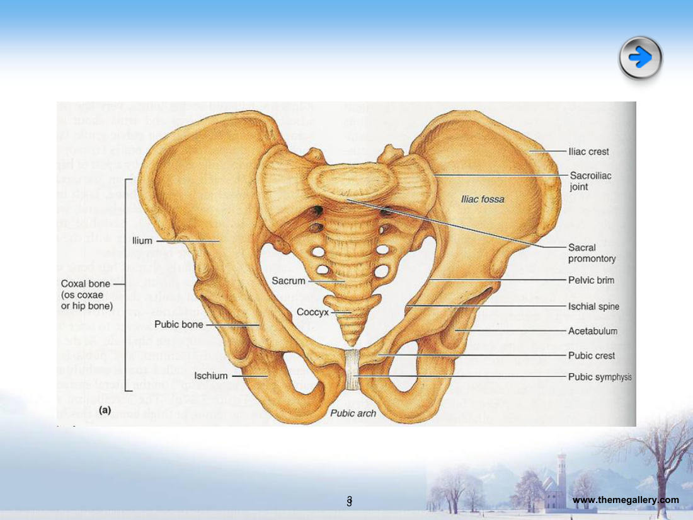
薦髂關節與韌帶
- 薦髂關節Sacroiliac joint, SI joint位在薦骨與髂骨之間。p.50 可見其耳狀面Auricular surface。
- 講義列出上下滑動與前後移動。p.2、17 稱其為非自主動作，p.10 將它列為可動關節。
- 三組薦髂韌帶是前薦髂韌帶Anterior sacroiliac ligament、後薦髂韌帶Posterior sacroiliac ligament及骨間薦髂韌帶Interosseous sacroiliac ligament。後薦髂韌帶在圖上分長束和短束。
- 鄰近韌帶有髂腰韌帶Iliolumbar ligament、薦結節韌帶Sacrotuberous ligament與薦棘韌帶Sacrospinous ligament。
- 後視圖可辨認大坐骨孔Greater sciatic foramen與小坐骨孔Lesser sciatic foramen。兩孔分別位於薦棘韌帶上、下方。
- 前視圖還標前縱韌帶與前薦尾韌帶。後視圖標橫突間韌帶、棘上韌帶，以及後薦尾韌帶的深層與淺層（p.18–19）。
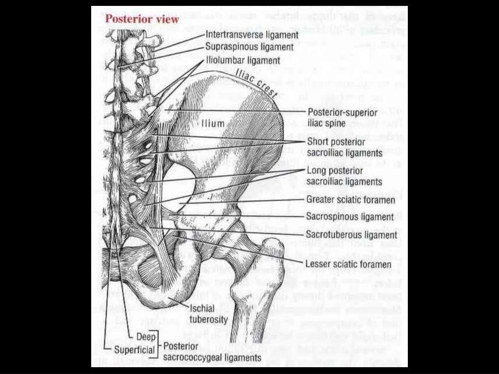
薦骨點頭與反點頭
| 動作 | 薦骨岬 | 薦骨下端或尾骨 | 骨盆開口 |
|---|---|---|---|
| 點頭Nutation | 向前下 | 向後 | 骨盆出口Pelvic outlet變大 |
| 反點頭Counternutation | 向後上 | 尾骨向前 | 骨盆入口Pelvic inlet變大 |
- 點頭時，兩側髂嵴靠近，兩側坐骨結節分開。p.10 中文括註寫「髂嵴分開」，與英文方向相反。
- p.11 在反點頭下另列單側例子。髂骨前轉、一側薦骨後轉，同時見一側下肢內轉與該側 ASIS 低、PSIS 高。
記憶口訣
「岬前下，出口大。岬後上，入口大。」
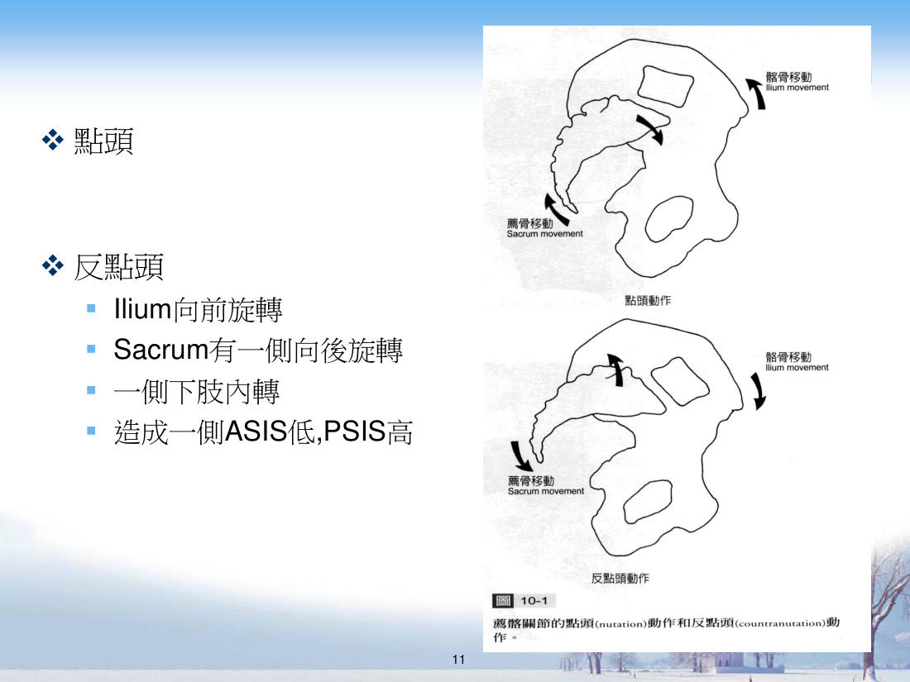
髖關節、韌帶與股骨角度
股骨頭與髖臼
- 髖關節Hip joint是球窩關節Ball-and-socket joint。球形的股骨頭Femoral head嵌在深杯形的髖臼內。
- 股骨頭關節面覆有透明軟骨Hyaline cartilage。髖臼由髂骨、坐骨和恥骨共同構成。
- 大轉子Greater trochanter, GT與小轉子Lesser trochanter都在股骨近端。後面兩者之間可看到轉子間嵴Intertrochanteric crest。
股骨頸幹角與前傾角
- 股骨頸幹角Neck-shaft angle / Angle of inclination是股骨頸長軸與股骨幹長軸的夾角。講義以 125° 為正常參考值。
- 髖內翻Coxa vara的頸幹角小於 125°。講義示例為 105°，腿長較短。
- 髖外翻Coxa valga的頸幹角大於 125°。講義示例為 140°，腿長較長。
- 股骨前傾角Angle of anteversion從上方看，以股骨頸長軸和股骨內、外髁的連線取角。p.6 內文列 13–15°，同頁小圖標 12°。p.7 正常示例為 15°。
- 股骨過度前傾Excessive femoral anteversion的示例是 35°。講義以髖內轉和內八In-toeing示範（p.7、9）。
- 股骨後傾Femoral retroversion與髖外轉和外八Out-toeing相配。p.7 的後傾圖標示 5°。
易混淆
頸幹角用股骨幹作參考，判讀髖內翻、外翻。前傾角用股骨內、外髁連線作參考，連到步態中的內八、外八。p.6 的「膝蓋內外髁」指股骨遠端的內外髁。
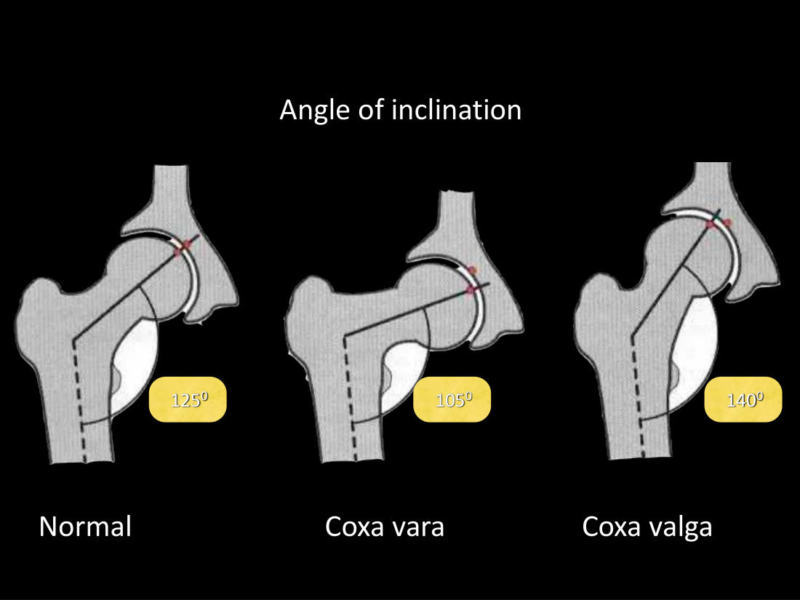
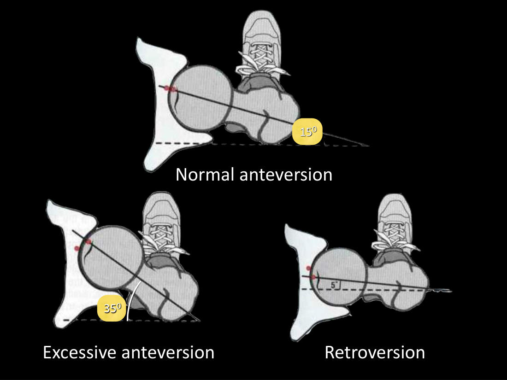
髖關節韌帶
| 韌帶 | 位置 | 限制或作用 |
|---|---|---|
| 髂股韌帶（Y 韌帶）Iliofemoral ligament / Y ligament | 前上方 | 限制過伸與過度骨盆後傾。p.13 也列上半部限制髖內收。 |
| 恥股韌帶Pubofemoral ligament | 前下方 | 限制過度外轉，也限制外展。 |
| 坐股韌帶Ischiofemoral ligament | 後下方 | 限制過度內轉。p.21 及 p.25 也列它限制內收。 |
| 股骨頭韌帶（股骨頭圓韌帶）Ligament of the head of the femur / Ligamentum teres | 股骨頭相關韌帶 | 講義列為股骨頭血液供應的途徑之一。p.21 也列它限制過度內收。 |
| 髖臼橫韌帶Transverse acetabular ligament | 髖臼 | p.13 列名。 |
- 髖屈曲時，關節囊韌帶較鬆。髖伸直時，韌帶拉緊。
- p.13 的「Ligamentous teres」與「Teres femoris ligament」都在指股骨頭韌帶。
- p.13 將坐股韌帶也列為限制外展。p.21 的外展欄列恥股韌帶與內收肌，內收欄列坐股韌帶。
- 前視圖可見髖臼唇Acetabular labrum（p.15 圖標 髖臼韌帶Cotyloid ligament）、滑膜Synovial membrane、恥囊韌帶與閉孔膜Obturator membrane。
- 後視圖可見環形帶Zona orbicularis與突出的一小部分滑膜。
- 髂股韌帶內側有部分股骨頭露出。p.52 圖說指出該處通常有滑液囊覆蓋。
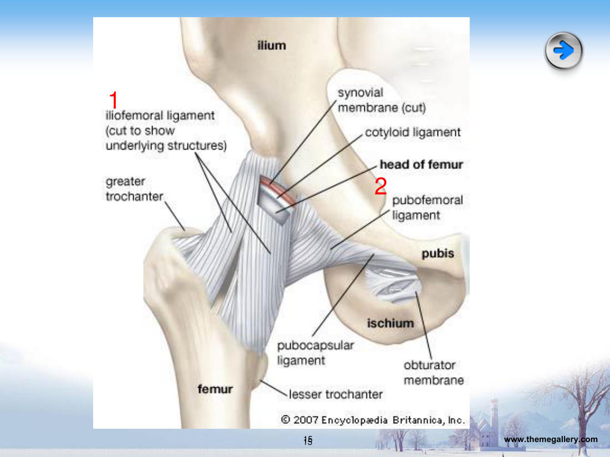
髖關節活動度與骨盆動作
骨盆固定，股骨動
下表整理講義 p.20–22。活動範圍Range of motion, ROM欄的「—」表示該表未列數字。
| 平面 | 髖動作 | ROM | 限制構造 | 主要肌肉 |
|---|---|---|---|---|
| 矢狀面Sagittal plane | 屈曲Flexion | 0–120° | 腿後肌群（膕旁肌群）Hamstrings | 腰大肌Psoas major、髂肌Iliacus |
| 矢狀面 | 伸直Extension | — | 恥股韌帶、Y 韌帶 | 臀大肌Gluteus maximus、腿後肌群 |
| 矢狀面 | 過伸Hyperextension | 0–30° | 髂股韌帶 | — |
| 額狀面Frontal plane | 外展Abduction | 0–45° | 恥股韌帶、髖內收肌群Hip adductors | 臀中肌Gluteus medius、臀小肌Gluteus minimus |
| 額狀面 | 內收Adduction | 0–30° | 坐股韌帶 | 大收肌Adductor magnus、短收肌Adductor brevis、長收肌Adductor longus、恥骨肌Pectineus、股薄肌Gracilis |
| 額狀面 | 過度內收Hyperadduction | — | 股骨頭韌帶 | — |
| 水平面Horizontal plane | 外轉External rotation, ER | 0–45° | 恥股韌帶、Y 韌帶 | 六條短外轉肌、臀大肌後部 |
| 水平面 | 內轉Internal rotation, IR | 0–30° | 坐股韌帶、Y 韌帶 | 臀小肌、臀中肌、闊筋膜張肌Tensor fasciae latae, TFL |
易混淆
p.23–26 是股骨相對骨盆的被動活動圖。圖示約為屈 120°、伸 20°、外展 40°、內收 25°、內轉 35°、外轉 45°。題目若指定講義表格，讀 p.20–22 的值。
圖中直黑箭頭指被拉緊的組織，波浪箭頭指放鬆的組織。它們有助辨認動作末端的組織張力。
- 屈髖圖顯示髂股韌帶放鬆、下方關節囊與臀大肌被拉長。伸髖圖標出髂股韌帶與腰大肌。
- 外展圖標出恥股韌帶、長收肌與短收肌。內收圖標出坐股韌帶上束、臀中肌、闊筋膜張肌與髂脛束Iliotibial tract / Iliotibial band, IT band。
- 內轉圖標出坐股韌帶與梨狀肌Piriformis。外轉圖標出髂股韌帶外側束。
股骨固定，骨盆動
- 骨盆傾斜角Angle of pelvic inclination是通過 PSIS 與恥骨聯合最前點的平面，和水平面之間的夾角。
- 前傾時，骨盆傾斜角變大，腰椎前凸Lumbar lordosis增加。後傾時，兩者都減少。
| 平面 | 骨盆動作 | 骨標誌方向 | 講義列出的肌群 |
|---|---|---|---|
| 矢狀面 | 前傾Anterior pelvic tilt / Forward tilt | 恥骨聯合向下，薦骨後側向上 | 髖屈肌、腰薦椎伸肌 |
| 矢狀面 | 後傾Posterior pelvic tilt / Backward tilt | 恥骨聯合向前上，薦骨後側向下 | 髖伸肌、腰薦椎屈肌 |
| 額狀面 | 骨盆側傾Lateral pelvic tilt向左 | 左髂嵴低，右髂嵴高 | — |
| 額狀面 | 骨盆側傾向右 | 右髂嵴低，左髂嵴高 | 左腰薦椎側屈肌、右髖外展肌、左髖內收肌 |
| 水平面 | 骨盆旋轉Pelvic rotation向右 | 右半骨盆向前，左半向後 | 左腰薦椎旋轉肌、左髖外轉肌、右髖內轉肌 |
| 水平面 | 骨盆旋轉向左 | 左半骨盆向前，右半向後 | — |
p.27 定義方向，p.31、56 列肌群。p.14 提到可做臨床骨盆傾斜角評估。
必背重點
- 股骨固定時，骨盆前傾帶出髖屈曲。骨盆後傾帶出髖伸直（p.28）。
- 上半身固定的圖例中，骨盆前傾約 30°、後傾約 15°。額狀面的髖外展約 30°、內收約 25°，水平面的內轉與外轉各約 15°（p.28–30）。
髖部肌肉、附著與神經
前側與外側肌肉
| 肌肉 | 起點 | 止點 | 動作 | 神經 |
|---|---|---|---|---|
| 髂腰肌Iliopsoas | 髂肌起自髂窩，腰大肌起自脊柱（p.38、50、57） | 小轉子 | 屈髖、外轉 | 股神經Femoral nerve支配髂肌。p.38 將股神經列在整組下。 |
| 股直肌Rectus femoris | 髂前下棘，圖另標髖臼上緣附近 | 髕骨 | 屈髖、伸膝 | 股神經（p.60） |
| 縫匠肌Sartorius | 髂前上棘 | 脛骨內側 | 屈髖、外轉、外展。屈膝並使膝內轉。 | 股神經 |
| 闊筋膜張肌 | 髂嵴 | 髂脛束 | 屈髖、外展、內轉 | 臀上神經Superior gluteal nerve |
| 恥骨肌 | 恥骨上支Superior pubic ramus | 股骨上端後內側 | 內收、屈髖 | 股神經 |
| 臀中肌 | 髂嵴一帶的髂骨外面 | 大轉子 | 外展。前束內轉，後束外轉。 | 臀上神經 |
| 臀小肌 | 髂骨外面 | 大轉子前緣 | 外展、內轉、屈髖 | 臀上神經 |
- 髂腰肌由腰大肌和髂肌組成。p.38 單列髂窩，圖顯示這是髂肌的起點。p.57 另標髂腰肌滑液囊Iliopsoas bursa。
- 股直肌跨髖與膝。p.35 的 X 標出股直肌與股內側肌Vastus medialis的激痛點Trigger point。
- p.49 的髂骨外側圖有臀前線Anterior gluteal line、臀後線Posterior gluteal line與臀下線Inferior gluteal line。可用來對照臀中肌、臀小肌的附著。
後側肌肉
| 肌肉 | 起點 | 止點 | 動作 | 神經 |
|---|---|---|---|---|
| 臀大肌 | 髂嵴後部、腰背筋膜、薦骨、尾骨 | 髂脛束及股骨近端後側。p.32 另列大轉子，p.51 的臀大肌骨性止點標在其下方。 | 伸髖、外轉。上部外展，下部內收。 | 臀下神經Inferior gluteal nerve |
| 腿後肌群 | 坐骨結節。p.49、51 標出半腱肌Semitendinosus、半膜肌Semimembranosus與股二頭肌長頭Long head of biceps femoris。 | p.33 概列脛骨近端。p.54 顯示各肌止腱走向不同。 | 伸髖、屈膝。半膜肌也使膝內轉（p.65–66）。 | 坐骨神經Sciatic nerve的脛神經Tibial nerve部分（p.61） |
| 股二頭肌短頭Short head of biceps femoris | 股骨後側（p.54） | 沿外側與長頭相接（p.54） | — | 腓總神經Common peroneal nerve部分（p.61） |
- p.54 圖說將股二頭肌長頭、半腱肌與半膜肌列為腿後肌群。圖右另顯示股二頭肌短頭。
- p.33 把 Ischial tuberosity 誤寫成「大轉子」。正確名稱是坐骨結節。
六條短外轉肌
講義 p.34 概列起於骨盆內外、止於大轉子一帶。p.49–51、55 可對照各肌的附著區。六條都列為髖外轉肌。下表的個別起止點與走向（如閉孔內肌經小坐骨孔、雙子肌的位置）講義文字未列，是依圖判讀（講義無，補充），考試以 p.34 概述為準。
| 肌肉 | 起點或位置 | 止點或走向 | 動作 | 神經 |
|---|---|---|---|---|
| 梨狀肌 | 薦骨前面，位在六肌最上方 | 大轉子內側 | 伸髖時外轉，屈髖時可轉為內轉 | 第 1、2 薦神經（S1、S2） |
| 閉孔內肌Obturator internus | 閉孔內側 | 經小坐骨孔區轉向大轉子，肌腱在兩條雙子肌之間 | 外轉 | p.61 標閉孔內肌與上雙子肌共用一支 |
| 上雙子肌Gemellus superior | 坐骨棘附近，位在閉孔內肌上方 | 與閉孔內肌腱一起向大轉子 | 外轉 | 同閉孔內肌（p.61） |
| 下雙子肌Gemellus inferior | 坐骨結節上方，位在閉孔內肌下方 | 與閉孔內肌腱一起向大轉子 | 外轉 | p.61 標下雙子肌與股方肌共用一支 |
| 閉孔外肌Obturator externus | 閉孔外側 | 深層走向股骨近端（p.52、55） | 外轉 | 閉孔神經Obturator nerve（p.60） |
| 股方肌Quadratus femoris | 坐骨結節外側附近，位在六肌最下方 | 股骨後面轉子間嵴一帶（p.51、55） | 外轉 | 同下雙子肌（p.61） |
內側肌肉
| 肌肉 | 起點 | 止點 | 動作 | 神經 |
|---|---|---|---|---|
| 長收肌 | 恥骨前內側，接近恥骨聯合 | 股骨幹內後側 | 髖內收 | 閉孔神經 |
| 短收肌 | 恥骨下支一帶 | 股骨近端後側 | 髖內收 | 閉孔神經 |
| 大收肌 | 恥骨、坐骨支一帶，後方延至坐骨結節附近 | 股骨後內側 | 髖內收 | 閉孔神經。p.61 另標坐骨神經的脛神經部分到大收肌。 |
| 股薄肌 | 恥骨下支一帶 | 到膝內側下方（p.42、54） | 髖內收 | 閉孔神經 |
| 恥骨肌 | 恥骨上支 | 股骨上端後內側 | 髖內收、屈髖 | 股神經 |
p.42 用恥骨支與坐骨支、股骨粗線Linea aspera概括整組的起止點。個別附著可看 p.39、42、49–54，表中的個別起止細節是依圖判讀（講義無，補充）。p.42 將整組列為股神經，p.60–61 的分支圖則顯示上述個別支配。
神經分布
- 腰神經叢Lumbar plexus圖中，股神經與閉孔神經都標 L2–L4。
- 股神經圖列髂肌、縫匠肌、恥骨肌與股四頭肌Quadriceps femoris。四頭是股直肌、股內側肌、股外側肌Vastus lateralis、股中間肌Vastus intermedius。
- 閉孔神經圖列閉孔外肌、長收肌、短收肌、大收肌與股薄肌。
- p.60 的皮膚感覺圖標股前皮神經、閉孔神經與隱神經Saphenous nerve。隱神經是股神經的分支，分布延到小腿前內側。
- 薦神經叢Sacral plexus圖畫出神經經大坐骨孔離開骨盆。坐骨神經標為 L4–S3，再分脛神經（L4–S3）與腓總神經（L4–S2）。
記憶口訣
「臀上管中、小、張。臀下管臀大。」中、小、張就是臀中肌、臀小肌、闊筋膜張肌。
肌肉協同與臨床判讀
姿勢改變，肌肉作用也會改變
- 非負重Non-weight-bearing時，肢體遠端能自由移動。負重Weight-bearing時，遠端固定。
- 臀大肌的上部外展，下部內收。臀中肌的前部內轉，後部外轉。
- 髖屈得越多，臀中肌與闊筋膜張肌的內轉作用越明顯。
- 梨狀肌在髖伸直時外轉。在屈髖位置可轉為內轉。
- 內收肌有內轉作用。髖在屈曲位時可協助伸髖，在伸直位可協助屈髖。
- 髖屈曲時，內轉肌力矩約為髖伸直時的 3 倍。外轉肌力矩隨髖位置的變化較小。
站姿、坐姿與俯臥的肌肉分工
- 站姿抬腿屈髖會用到髂腰肌、股直肌、縫匠肌與闊筋膜張肌。
- 縫匠肌的外轉作用可和闊筋膜張肌的內轉作用互相抵消。
- 恥骨肌的內收作用可抵消闊筋膜張肌的外展作用。兩肌都能屈髖。
- 坐姿抬腿屈髖主要用髂腰肌。
| 姿勢 | 講義列出的主要肌肉 |
|---|---|
| 俯臥單側伸髖，膝伸直 | 臀大肌、腿後肌群 |
| 俯臥單側伸髖，膝彎曲 | 臀大肌 |
| 俯臥雙側伸髖，雙膝伸直 | 髖伸肌、腰椎伸肌 |
| 坐姿軀幹與骨盆前傾 | 髖伸肌，講義舉腿後肌群 |
| 站姿軀幹前彎，髖屈曲 | 腿後肌群做離心收縮Eccentric contraction（p.65–66） |
單腳承重與 Trendelenburg 徵象
必背重點
- 單腳站時，講義指出髖外展肌要平衡約 85% 體重。
- 同一姿勢下，髖關節的壓縮力約為 2.5 倍體重。
- 外展肌麻痺時可見臀中肌跛行Gluteus medius limp。
- 做特倫德倫堡徵象Trendelenburg sign的單腳站判讀時，看抬腳側的骨盆。
- 若抬腳側骨盆下掉，表示站立側髖外展肌無力。右腳站、左側掉，先想到右側臀中肌等髖外展肌。
其他臨床例子
- 下半身麻痺Paraplegia的例子中，膝和踝由矯具Orthoses固定。髖過伸拉緊 Y 韌帶，可協助取得站立平衡（p.62）。
- p.34 的圖把發炎的坐骨神經畫在梨狀肌旁。p.55 可對照兩者的走向。
講義附錄複習題
- p.64 步態配對題把「Trendelenburg 配臀大肌」列為錯項。看髖外展肌，尤其臀中肌。
- 同一題還列 高爾斯徵象Gower sign配股四頭肌、垂足Drop foot配脛前肌Tibialis anterior、髖過伸步態配臀大肌。
- 提高骨盆的主要肌肉，題目答案是腰方肌Quadratus lumborum。
- 蹲姿拉筋的題目答案是比目魚肌Soleus。
- 題目所列的雙關節肌Two-joint muscle是股直肌。它同時屈髖、伸膝。
- p.65 的開鏈膝關節題把股四頭肌收縮列為使前十字韌帶Anterior cruciate ligament, ACL參與穩定的答案。該題未列膝角度。
- p.65 縫匠肌題把「腳趾朝內」列為錯項。髖動作以 p.36 為準，記屈曲、外展、外轉。題目用「外翻」描述髖動作，容易和股骨角度的髖外翻混淆。
- 髖內收肌題的答案是恥骨肌。半膜肌題的答案是膝屈曲與內轉。
膝部骨骼、動作與半月板
膝關節與骨性標誌
- 膝關節Knee joint主要像樞紐關節Hinge joint做屈伸，也能做軸向旋轉。
- 股骨Femur遠端的內、外髁呈凸面。脛骨Tibia近端的內、外髁呈凹面。
- 髕骨Patella有內、外側髕骨關節面Patellar facets，沿股骨前方的滑車溝Trochlear groove滑動。
- 股骨遠端也可找內、外上髁Epicondyles、內收肌結節Adductor tubercle和兩髁之間的髁間切跡Intercondylar notch。
- 脛骨平台Tibial plateau的兩髁之間有髁間隆起Intercondylar eminence，前、後各有一個髁間窩。
- 髕韌帶Patellar ligament連接髕骨下方與脛骨粗隆Tibial tuberosity。
- 腓骨Fibula在小腿外側。圖上可找腓骨莖突、近端和遠端脛腓關節，以及脛腓兩骨之間的骨間膜Interosseous membrane。
- 講義也列出半月板Meniscus、關節囊Joint capsule與滑囊Bursa。
p.2 的髁狀構造Unparalleled condyloid用語不清楚。關節面形狀可看 p.6 的說明和 p.24 的圖。
活動度、運動軸與終端感
講義分為 2 個自由度。一個是屈伸，另一個是軸向旋轉。
| 動作 | 角度與條件 | 終端感End-feel |
|---|---|---|
| 屈曲Flexion | 0–120°。髖伸直時，能屈膝的角度變小。 | 軟Soft |
| 伸直Extension與過伸Hyperextension | 過伸 ≤15°。髖屈 90° 時，膝伸直幅度減少。 | 結實Firm |
| 軸向旋轉Axial rotation | 屈膝時兩側副韌帶較鬆，可以旋轉。外旋External rotation, ER約為內旋Internal rotation, IR的 2 倍。 | 結實 |
- 屈伸軸通過股骨兩髁。軸向旋轉繞縱軸Longitudinal axis。
- 膝從屈曲轉為伸直時，可做的軸向旋轉幅度逐漸變小。
- 膝由伸直開始彎曲時，先是滾動Rolling多、滑動Gliding少。繼續屈曲時，滑動增加，滾動減少。
必背重點
螺旋鎖定機轉Screw-home mechanism出現在膝伸直的最後 20°。
- 開放鏈Open chain：股骨固定，脛骨外旋。
- 閉鎖鏈Closed chain：脛骨固定，股骨內旋。
半月板的形狀、血流與功能
| 構造 | 形狀 | 周緣有血流的比例 |
|---|---|---|
| 內側半月板Medial meniscus | 較大，呈 C 形 | 20–30% |
| 外側半月板Lateral meniscus | 較小，近半 O 形 | 10–25% |
- 半月板位於凹形的脛骨平台。兩塊半月板的前方以橫韌帶Transverse ligament相連。
- 主要由內、外側膝動脈Medial and lateral geniculate arteries供血。外側半月板靠近膕肌腱裂孔Popliteal hiatus的區域血流較少。
- p.7 把膕肌腱裂孔列為關節囊的例外。外側半月板與關節囊的直接連接在這裡中斷（講義無，補充）。
- 半月板協助傳遞負荷Load transmission，減少股骨與脛骨之間的接觸壓力。
- 半月板也幫助潤滑Lubrication及供應軟骨營養Chondral nutrition。
- p.9 可看到兩塊半月板的前角與後角Anterior and posterior horns在脛骨髁間區的附著，前方也標出髕下脂肪墊Infrapatellar fat pad與冠狀韌帶Coronary ligament。
膝韌帶與十字韌帶撕裂
副韌帶與後關節囊
- 內側副韌帶（脛側副韌帶）Medial or tibial collateral ligament, MCL由股骨內側連到脛骨內側（講義無，補充）。p.28 圖也標出它和內側半月板相連。
- 外側副韌帶（腓側副韌帶）Lateral or fibular collateral ligament, LCL由股骨外側連到腓骨近端（講義無，補充）。p.12 圖可辨認膕肌腱經過外側半月板和 LCL 之間。
- 兩側副韌帶限制額狀面Frontal plane的過度運動。MCL 限制脛骨外展所造成的膝外翻，LCL 限制脛骨內收所造成的膝內翻。
- 膝伸直時，副韌帶也限制脛骨前後移動。它們在動作末端提供穩定。
- 屈膝時副韌帶較鬆，讓膝能做軸向旋轉。
- 膝後方有斜膕韌帶Oblique popliteal ligament和弓狀膕韌帶Arcuate popliteal ligament。p.28 也標出後脛腓韌帶Posterior tibiofibular ligament。
- p.28 的膕肌Popliteus位於膕窩Popliteal fossa深處，部分被半膜肌Semimembranosus延伸出的筋膜蓋住。
前、後十字韌帶
兩條十字韌帶在整段屈伸中提供穩定，也引導股骨與脛骨的髁面滑動。
| 韌帶 | 從脛骨到股骨的路徑 | 講義所列功能 |
|---|---|---|
| 前十字韌帶Anterior cruciate ligament, ACL | 從脛骨前髁間窩Anterior intercondylar fossa向上、向後、向外，連到股骨外髁。 | 防止脛骨向前位移。p.12 也列出限制內、外旋。 |
| 後十字韌帶Posterior cruciate ligament, PCL | 從脛骨後髁間窩Posterior intercondylar fossa向上、向前、向內，連到股骨內髁。 | 限制脛骨向後位移。脛骨固定時，限制股骨髁向前位移。 |
- p.12 英文把 ACL 的功能寫成「允許」脛骨前滑。依同頁中文與 p.16，應為「防止」。
- p.14 把 PCL 由脛骨往股骨寫成「向後」。依 p.25 側面圖，應為「向前」。
- p.25 側面圖看得出 ACL 的兩束纖維。p.9、12 也標出後半月股骨韌帶Posterior meniscofemoral ligament。
脛骨各方向的主要限制
| 脛骨的動作 | 主要限制 |
|---|---|
| 向前位移 | ACL |
| 向後位移 | PCL |
| 外翻Valgus | MCL |
| 內翻Varus | LCL |
| 外旋 | MCL、LCL |
| 內旋 | ACL、PCL |
記憶口訣
「前擋前，後擋後。外旋副帶緊，內旋十字緊。」脛骨外旋時兩條副韌帶緊、十字韌帶鬆。內旋時相反。
易混淆
題目問「主要限制」時看 p.16 的表。脛骨外旋由兩側副韌帶主要限制，內旋由兩條十字韌帶主要限制。
十字韌帶撕裂
- p.13 示範前十字韌帶撕裂ACL tear。受損後，脛骨向前位移較難控制。
- p.15 示範後十字韌帶撕裂PCL tear。受損後，脛骨向後位移較難控制。
髕股關節、膝內外翻與 Q 角
髕骨的四個作用
髕股關節Patellofemoral joint由髕骨與股骨形成。
- 增加股四頭肌Quadriceps femoris伸膝的力臂。
- 屈膝時保護股骨遠端的關節髁。
- 分散股骨承受的力量，降低壓力。
- 屈膝遇到阻力時，減少股四頭肌腱Quadriceps tendon所受的有害壓迫。
哪個方向有什麼構造穩定髕骨？
伸膝機制Extensor mechanism從四面穩住髕骨，也引導它在股骨上滑動。
| 方向 | 主要構造 |
|---|---|
| 下方 | 髕腱Patellar tendon，此處同指髕韌帶。 |
| 外側 | 淺、深層髕骨支持帶Patellar retinacula、髂脛束Iliotibial band or tract, ITB、股外側肌Vastus lateralis。 |
| 內側 | 髕股韌帶Patellofemoral ligament、內側半月髕韌帶Medial meniscopatellar ligament、股內側斜肌Vastus medialis obliquus, VMO。 |
| 上方 | 股直肌Rectus femoris、股中間肌Vastus intermedius。 |
- VMO 幫助髕骨沿著股骨滑車溝移動。
- 依 p.19，從伸直到屈膝 90°，髕骨內、外側關節面的接觸都增加。伸直約 1/3，屈膝 90° 約 1/2。
- 屈膝 120° 時，有兩處接觸。第一處是髕骨與股骨，第二處是股四頭肌腱與股骨。
p.19 把伸直時的接觸寫為「前 1/3」，未標示方位。
膝內翻與外翻
p.20 量的是額狀面上股骨幹與脛骨幹的外側夾角。圖示正常約 170–175°。
| 排列 | 外觀 | 講義 p.20 正文的角度 |
|---|---|---|
| 膝外翻Genu valgum / Knock knee | 兩膝較靠近，像 X 形。 | 小於 170° |
| 膝內翻Genu varum / Bowleg | 兩膝較分開，像 O 形。 | 大於或等於 180° |
p.20 圖中以 ≤165° 標示明顯外翻，正文以小於 170° 說明外翻。圖另標出股骨近端的傾斜角 125°。
Q 角的畫法與數值
- 股四頭肌角Q-angle是兩條線的交角。第一條從髂前上棘Anterior superior iliac spine, ASIS到髕骨中心。
- 第二條從脛骨粗隆連到髕骨中心，再沿同一方向延長。
- 講義數值為男性 11.2° ± 3°，女性 15.8° ± 4.5°。
- 講義把 大於 20° 列為髕股關節排列異常的線索。
易混淆
膝內、外翻看股骨幹與脛骨幹的外側夾角。Q 角則用髂前上棘、髕骨中心、脛骨粗隆三點畫線。
膝部肌肉、神經與鵝足
前側肌群與伸膝
股四頭肌由股直肌和三條股肌組成。表中止點整理到講義標出的髕骨部位，再由髕韌帶接到脛骨粗隆。
| 肌肉 | 起點 | 止點 | 動作 | 神經 |
|---|---|---|---|---|
| 股直肌Rectus femoris | 髖臼上緣、髂前下棘Anterior inferior iliac spine, AIIS（講義無，補充） | 髕骨上緣 | 屈髖、伸膝 | 股神經Femoral nerve L2–L4 |
| 股外側肌Vastus lateralis | 股骨大轉子Greater trochanter, GT | 髕骨外緣 | 伸膝 | 股神經 L2–L4 |
| 股內側肌Vastus medialis | 股骨內、後側 | 髕骨上緣內側 | 伸膝 | 股神經 L2–L4 |
| 股中間肌Vastus intermedius | 股骨前、外側 | 髕骨上方 | 伸膝 | 股神經 L2–L4 |
| 膝關節肌Articularis genu | 股骨幹下段前面 | 膝關節囊 | 伸膝時拉動關節囊 | 講義未列 |
- p.31 把股直肌起點的髂前下棘寫成髂前上棘。p.32 用「gt」簡寫大轉子，並畫出股中間肌位於股直肌深層。
- p.35 把膝關節肌放在伸膝肌段落。股四頭肌的四條肌肉以 p.26、44 的清單為準。
後側肌群與屈膝
腿後肌群（膕繩肌群）Hamstrings包括股二頭肌、半腱肌、半膜肌。講義也在屈膝肌群中列出腓腸肌、蹠肌、膕肌。
| 肌肉 | 起點 | 止點 | 動作 | 神經 |
|---|---|---|---|---|
| 股二頭肌Biceps femoris | 長頭：坐骨結節Ischial tuberosity 短頭：股骨幹下段 | p.37 文字僅列脛骨外髁。p.22、37 圖也畫出腓骨側附著，實際主要在腓骨頭（講義無，補充）。 | 屈膝、膝外旋。長頭也伸髖、髖外旋。 | 坐骨神經Sciatic nerve L4–L5、S1（講義所列） |
| 半腱肌Semitendinosus | 坐骨結節 | 脛骨內側，屬鵝足 | 屈膝、膝內旋。伸髖、髖內旋。 | 坐骨神經 L5、S1、S2 |
| 半膜肌Semimembranosus | 坐骨結節 | 脛骨內髁 | 屈膝、膝內旋。伸髖、髖內旋。 | 坐骨神經 L5、S1、S2 |
| 腓腸肌Gastrocnemius | 股骨內、外髁上方（p.23 圖） | 講義未列 | 屈膝，並跨踝關節。 | 講義未列 |
| 蹠肌Plantaris | 股骨外髁附近 | 跟骨Calcaneus | p.36 列為屈膝肌。p.40 的動作欄空白。 | 脛神經Tibial nerve |
| 膕肌Popliteus | 股骨外髁 | 脛骨近端後面（p.28、41 圖） | 屈膝、膝內旋 | 脛神經 |
p.37 把股二頭肌的髖部動作合列，依 p.47 只有長頭跨髖。p.41 的膕肌止點文字未寫清楚，圖上可辨認脛骨近端後面。
旋轉肌與鵝足
- 膝內旋：半腱肌、半膜肌、膕肌、股薄肌Gracilis、縫匠肌Sartorius。
- 膝外旋：股二頭肌。p.42 也列闊筋膜張肌Tensor fasciae latae, TFL，p.47 指出它透過髂脛束跨膝。
- 鵝足Pes anserinus是縫匠肌、股薄肌、半腱肌的肌腱在脛骨近端內側的附著。它有助於穩定膝內側。
- 鵝足滑囊Pes anserine bursa位在鵝足肌腱的深面（p.43 圖）。
記憶口訣
鵝足記「縫、薄、腱」。縫匠肌、股薄肌、半腱肌。
單雙關節肌與日常動作
伸膝、屈膝與旋轉的分工
- 伸膝肌在閉鎖鏈動作中抬高或放低身體，例如起身、爬高和跳躍。
- 走路、跑步和跳躍落地時，股四頭肌可防止膝蓋突然彎下去。
- 屈膝肌在開放鏈動作中參與走路和跑步。
- 閉鎖鏈動作中，能跨髖的腿後肌可伸髖。軀幹伸直時，這些肌肉也可穩定骨盆。
- 坐著或站著前彎摸腳，再回到直立時，腿後肌可控制骨盆在股骨上的動作。
- 旋轉方面，腿後肌群、縫匠肌和股薄肌參與髖與膝的旋轉。膕肌作用在膝。
- 走路的站立期Stance phase可以用旋轉幫助身體前進。跑步、轉向也用到旋轉。
- 跪姿或蹲姿時，脛骨固定，股骨與髖部可旋轉。
哪些肌肉跨一個或兩個關節？
| 分類 | p.47 所列肌肉 |
|---|---|
| 單關節肌One-joint muscle（膝） | 股外側肌、股內側肌、股中間肌、膕肌、股二頭肌短頭。 |
| 雙關節肌Two-joint muscle（髖與膝） | 股直肌、縫匠肌、股薄肌、半腱肌、半膜肌、股二頭肌長頭、經髂脛束作用的闊筋膜張肌。 |
| 雙關節肌（膝與踝） | 腓腸肌。 |
主動不足與被動不足
- 主動不足Active insufficiency：雙關節肌在兩端同時縮短，出力變弱（定義講義無，補充）。
- 被動不足Passive insufficiency：雙關節肌在兩端同時被拉長，限制動作幅度（定義講義無，補充）。
| 容易受限的姿勢 | 被拉長，限制幅度 | 縮得太短，出力變弱 |
|---|---|---|
| 伸髖＋屈膝 | 股直肌 | 跨髖的腿後肌 |
| 屈髖＋伸膝 | 跨髖的腿後肌 | 股直肌 |
常用的髖、膝、踝搭配
- 屈髖＋屈膝：肌肉長度有利於出力。髖屈肌與腿後肌協同。
- 伸髖＋伸膝：起身、上樓、跑步和跳躍都用得到。腿後肌群負責伸髖，股四頭肌負責伸膝。
- 坐下時，伸肌以離心收縮Eccentric contraction控制下降。
- 站起時，伸肌以向心收縮Concentric contraction抬高身體。
- 講義把屈膝加踝蹠屈Plantar flexion列為「不是有用的動作」。
- 伸膝＋踝蹠屈用在踮腳、跑步與跳躍。
必背重點
伸髖屈膝時，股直肌被拉長。屈髖伸膝時，腿後肌被拉長。從椅子起身，則靠腿後肌伸髖和股四頭肌伸膝。
足骨、踝與距下關節
骨頭數量與足部三區
- 一隻腳有 26 塊骨。小腿加上脛骨Tibia與腓骨Fibula，合計 28 塊。
- 足部的 26 塊骨包括 7 塊跗骨Tarsal bones、5 塊蹠骨Metatarsals、14 塊趾骨Phalanges。
| 功能分區 | 骨頭 |
|---|---|
| 後足Hindfoot / rearfoot | 距骨Talus、跟骨Calcaneus。 |
| 中足Midfoot | 舟狀骨Navicular、骰骨（方形骨）Cuboid、內側／中間／外側 3 塊楔形骨Cuneiforms。 |
| 前足Forefoot | 5 塊蹠骨、14 塊趾骨。 |
講義 p.3 的分區與 p.4 圖文不同。上表採 p.4 的功能分區。
骨性標誌
- 脛骨末端是內踝Medial malleolus，腓骨末端是外踝Lateral malleolus。
- 距骨可辨認出距骨頭Head of talus、距骨頸Neck of talus、距骨滑車Trochlea of talus及後方的內、外側結節。
- 足背圖可辨認舟狀骨粗隆Navicular tuberosity與第 5 蹠骨的莖突Styloid process。
- 蹠骨分基部、骨幹與蹠骨頭。
- 大腳趾有近、遠兩節，其餘四趾各有近、中、遠三節。
踝關節與脛腓關節
- 踝關節（距小腿關節）Talocrural joint / ankle joint由脛骨、腓骨與距骨組成。
- 脛骨遠端、內踝與外踝像「ㄇ」字形夾住距骨滑車，提供骨性穩定。
- 踝關節是鉸鏈關節Hinge joint，有 1 個自由度。主要做背屈Dorsiflexion與蹠屈Plantarflexion。
- p.54 題組以脛距關節Tibiotalar joint作為背屈、蹠屈的主要關節。
- 屈膝時的踝背屈角度比伸膝時大。伸膝再背屈會同時拉長腓腸肌Gastrocnemius，出現被動不足Passive insufficiency。
- 講義指出，改變膝的位置不影響踝的蹠屈活動度。
- 脛腓關節Tibiofibular articulations分上脛腓關節Superior tibiofibular joint與下脛腓關節Inferior tibiofibular joint。
距下關節與運動平面
- 距下關節（距跟關節）Subtalar joint / talocalcaneal joint由距骨與跟骨構成，主要做內翻Inversion與外翻Eversion。
- 跗骨竇Sinus tarsi位於距骨與跟骨之間。p.8 描述這一帶的通道連通踝內、外側。
- 距跟骨間韌帶Interosseous talocalcaneal ligament位在這個區域，與距下關節的本體感覺Proprioception有關。
| 平面 | 運動軸 | 動作與講義活動度 |
|---|---|---|
| 矢狀面Sagittal plane | 內外側軸（橫軸）Mediolateral axis / transverse axis | 背屈 0–20°。蹠屈終點 45–55°（p.5 列 45°）。 |
| 額狀面Frontal plane | 前後軸Anteroposterior axis | 從 0° 起，內翻終點 30–40°，外翻終點 15–25°。 |
| 水平面Transverse plane | 垂直軸Vertical axis | 外展Abduction與內收Adduction。 |
必背重點
- 旋前Pronation＝背屈＋外展＋外翻。
- 旋後Supination＝蹠屈＋內收＋內翻。
- 講義 p.12 以內翻、外翻描述開放鏈Open chain的動作，以旋前、旋後描述閉鎖鏈Closed chain的動作。
p.8 把旋前、旋後列在「矢狀面」下。依 p.12 的平面表，兩者各包含三個平面的動作。
記憶口訣
旋前念「背、外、外」，依序是背屈、外展、外翻。旋後念「蹠、內、內」，依序是蹠屈、內收、內翻。
踝內、外側韌帶
| 位置 | 講義列出的韌帶 |
|---|---|
| 內側三角韌帶Deltoid ligament | 前脛距韌帶Anterior tibiotalar ligament、後脛距韌帶Posterior tibiotalar ligament、脛跟韌帶Tibiocalcaneal ligament、脛舟韌帶Tibionavicular ligament。 |
| 外側副韌帶 | 前距腓韌帶Anterior talofibular ligament, ATFL、後距腓韌帶Posterior talofibular ligament, PTFL、跟腓韌帶Calcaneofibular ligament, CFL。 |
| 脛骨與腓骨之間 | 前脛腓韌帶Anterior tibiofibular ligament、後脛腓韌帶Posterior tibiofibular ligament。踝前視圖還標出骨間韌帶Interosseous ligament。 |
易混淆
前距腓韌帶連距骨與腓骨。前脛腓韌帶連脛骨與腓骨。
橫跗、跗蹠與足趾關節
橫跗關節與遠端跗間關節
- 橫跗關節Transverse tarsal joint / midtarsal joint / Chopart joint呈 S 形。內側是距舟關節Talonavicular joint，外側是跟骰關節Calcaneocuboid joint。
- p.36 同列距跟舟關節Talocalcaneonavicular joint。橫跗關節的兩個組成，依 p.13 與 p.55 題組記「距舟＋跟骰」。
- 橫跗關節通常與距下關節一起動。p.13 列出距舟 13°、距下 6°，未交代是哪個動作的量測。
- 依圖 14-24，固定跟骨時，旋前或旋後主要發生在中足。放開跟骨時，後足與中足一起動。
- 旋前時縱弓降低。旋後時縱弓升高，橫跗關節較穩固。
- 遠端跗間關節Distal intertarsal joints包括舟楔關節Naviculocuneiform joints、骰舟關節Cuboideonavicular joint、楔間關節Intercuneiform joints與楔骰關節Cuneocuboid joint。
橫跗關節的兩條軸
| 運動軸 | 講義圖示角度 | 旋前的主要成分 | 旋後的主要成分 |
|---|---|---|---|
| 縱軸Longitudinal axis | 內側視圖 15°，上視圖 9°。 | 外翻。 | 內翻。 |
| 斜軸Oblique axis | 內側視圖 52°，上視圖 57°。 | 外展、背屈。 | 內收、蹠屈。 |
橫跗韌帶
- 足底可見足底跟舟韌帶（彈簧韌帶）Plantar calcaneonavicular ligament / spring ligament。
- 足底也有足底跟骰韌帶（短足底韌帶）Plantar calcaneocuboid ligament / short plantar ligament與長足底韌帶Long plantar ligament。
- 外側圖標有分叉韌帶Bifurcated ligament及背側跟骰韌帶Dorsal calcaneocuboid ligament。
- p.35 另標出頸韌帶Cervical ligament、外側距跟韌帶Lateral talocalcaneal ligament與背側跗蹠韌帶Dorsal tarsometatarsal ligaments。
跗蹠、蹠趾與趾間關節
| 關節 | 骨性位置 | 動作 |
|---|---|---|
| 跗蹠關節Tarsometatarsal joints, TMT | 遠端一排跗骨與蹠骨基部。 | 少量背屈、蹠屈。第 2 跗蹠關節較固定，只能微量屈伸。其餘可繞第 2 區段微量轉動，第 4、5 最靈活。 |
| 蹠骨間關節Intermetatarsal joints | 相鄰蹠骨之間（p.32）。 | 講義未列。 |
| 蹠趾關節Metatarsophalangeal joints, MTP | 蹠骨頭與近節趾骨基部。 | 過伸Hyperextension 90°，屈曲 30–45°。也能外展、內收，角度受橫蹠韌帶Transverse metatarsal ligament限制。 |
| 趾間關節Interphalangeal joints, IP | 大腳趾有一個趾間關節。第 2–5 趾各有近端趾間關節Proximal interphalangeal joint, PIP與遠端趾間關節Distal interphalangeal joint, DIP。 | 屈曲、伸直。 |
最緊密位置與關節附屬動作
| 關節 | 最緊密位置Close-packed position | 附屬動作Accessory motion |
|---|---|---|
| 踝關節 | 完全背屈。 | 牽開Distraction、向前或向後滑動。 |
| 跗部關節 | 最大旋後。 | 距下關節可向前、向內或向外滑動，也可牽開。距舟、跟骰、舟楔及跗蹠關節可向足背或足底滑動。 |
| 蹠趾關節 | 過伸。 | 講義未列。 |
| 趾間關節 | 伸直。 | 講義未列。 |
小腿外在肌與神經
小腿三頭肌與阿基里斯腱
小腿三頭肌Triceps surae由腓腸肌的內、外側頭與比目魚肌Soleus組成。
| 肌肉 | 起點（講義 p.51） | 止點 | 動作與功能 | 神經 |
|---|---|---|---|---|
| 腓腸肌 | 股骨內、外側髁。 | 匯入腱膜，經阿基里斯腱（跟腱）Achilles tendon至跟骨粗隆Calcaneal tuberosity。 | 蹠屈。跨膝和踝，肌力受膝位置影響較大。快肌纖維較多，常用於跑、跳。 | 脛神經Tibial nerve。 |
| 比目魚肌 | 講義列腓骨上三分之一。 | 匯入腱膜，經阿基里斯腱至跟骨粗隆。 | 蹠屈。是單關節肌，慢肌纖維較多。站立時穩定踝部，控制身體搖晃。 | 脛神經。 |
- 阿基里斯腱位在踝後側。講義稱它是人體最大、最粗、最強的肌腱，可承受約 4–7 倍體重的力量。
- 小腿三頭肌的蹠屈力量，講義列為約 2.4 倍體重。
深後側、外側與前側肌群
下表列講義圖可辨認的遠端位置或走向。
| 肌群 | 肌肉 | 遠端位置或走向 | 動作 | 神經 |
|---|---|---|---|---|
| 深後側 | 脛後肌Tibialis posterior | 繞過內踝，往舟狀骨粗隆一帶與足底分布（p.21、37）。 | 讓距下關節內翻或旋後，維持足弓。 | 脛神經。 |
| 深後側 | 屈趾長肌Flexor digitorum longus, FDL與屈拇趾長肌Flexor hallucis longus, FHL | 經內踝後方走到足底（p.21、37）。 | 屈趾、協助踝蹠屈，並支撐縱弓。 | 脛神經。 |
| 外側 | 腓骨長肌Peroneus longus與腓骨短肌Peroneus brevis | 繞外踝。長肌腱轉入足底，短肌腱到第 5 蹠骨基部莖突（p.15、37、49）。 | 外翻、協助蹠屈。 | 淺腓神經Superficial peroneal nerve。 |
| 前側 | 脛前肌Tibialis anterior、第三腓骨肌Peroneus tertius | 脛前肌腱走向足內側。第三腓骨肌腱走向足背外側（p.24、49）。 | 兩者都讓踝背屈。脛前肌也內翻，第三腓骨肌也外翻。 | 深腓神經Deep peroneal nerve。 |
| 前側 | 伸趾長肌Extensor digitorum longus, EDL與伸拇趾長肌Extensor hallucis longus, EHL | 由足背分別走向第 2–5 趾與第 1 趾（p.15、49）。 | 伸趾，協助踝背屈。 | 深腓神經。 |
- 內踝側圖（p.21）從前往後可見脛後肌腱、屈趾長肌腱與屈拇趾長肌腱。圖上的口訣是「Tom, Dick & Harry」。
- 外踝像滑車，讓腓骨長肌與短肌的肌腱轉向。
- 腓骨長、短肌在開放鏈時使足外翻。閉鎖鏈活動的例子有單腳站、走、跑與跳。
- 小腿前側肌群在開放鏈時防止走路擺盪期拖腳，也用於踩踏板與打拍子。
- 閉鎖鏈單腳站時，小腿前側肌群會強力收縮。
- 小腿前、外側圖（p.49）還標出上、下伸肌支持帶Superior and inferior extensor retinacula、腓骨肌支持帶Peroneal retinaculum與伸趾短肌Extensor digitorum brevis。
按動作找肌肉
| 動作 | 講義 p.48 的肌肉 |
|---|---|
| 踝背屈 | 脛前肌、第三腓骨肌、伸趾長肌、伸拇趾長肌。 |
| 踝蹠屈 | 腓腸肌、比目魚肌、腓骨長肌、腓骨短肌、屈趾長肌、屈拇趾長肌。 |
| 足內翻 | 脛前肌、脛後肌。 |
| 足外翻 | 腓骨長肌、腓骨短肌、第三腓骨肌。 |
| 趾屈曲 | 屈趾長肌、屈拇趾長肌。 |
| 趾伸直 | 伸趾長肌、伸拇趾長肌。 |
易混淆
- 腓骨長肌和短肌蹠屈＋外翻。第三腓骨肌背屈＋外翻。
- 講義 p.54 問哪條肌肉與外翻無關，答案是脛後肌。同題也把伸趾長肌視為與外翻有關。上表照錄 p.48 的外翻肌群。
- p.54 的橫軸題，脛前肌、伸拇趾長肌、伸趾長肌通過踝橫軸前方。腓骨長肌經外踝後方。
小腿與足的周邊神經
坐骨神經Sciatic nerve分出總腓神經與脛神經。以下神經根與感覺區依 p.39–40 的圖。
| 神經 | 運動支配或分支 | 感覺區 |
|---|---|---|
| 總腓神經Common peroneal nerve（L4–S2） | 分出深、淺腓神經。 | 圖示在小腿上外側。 |
| 深腓神經 | 脛前肌、伸趾長肌、伸拇趾長肌、第三腓骨肌、伸趾短肌。 | 第 1、2 趾之間的小區。 |
| 淺腓神經 | 腓骨長肌與腓骨短肌。 | 小腿前外側下段與大部分足背。 |
| 脛神經（L4–S3） | 支配腓腸肌、比目魚肌、脛後肌、屈趾長肌、屈拇趾長肌、膕肌Popliteus與蹠肌Plantaris。末端分成內側蹠神經Medial plantar nerve及外側蹠神經Lateral plantar nerve。 | 圖示脛神經的足跟區，內、外側蹠神經分布在足底。 |
| 腓腸神經Sural nerve | 圖中標為感覺神經。 | 小腿後外側及足外緣。 |
足底內在肌與足弓
足底四層內在肌
足底內在肌Plantar intrinsic muscles的起止點與神經依 p.25 的表 10-2。趾背的伸肌罩Extensor hood接到足趾的蹠趾關節區。原表把這裡的 MTP 誤寫成手部用的 MCP。
| 層與肌肉 | 起點 | 止點 | 神經 |
|---|---|---|---|
| 第 1 層 拇趾外展肌Abductor hallucis | 跟骨粗隆、足底腱膜Plantar aponeurosis。 | 第 1 趾近節趾骨基部。 | 內側蹠神經（L4–L5）。 |
| 第 1 層 屈趾短肌Flexor digitorum brevis | 跟骨粗隆、足底腱膜。 | 第 2–5 趾中節趾骨。 | 內側蹠神經（L4–L5）。 |
| 第 1 層 小趾外展肌Abductor digiti minimi | 跟骨粗隆、足底腱膜。 | 第 5 趾近節趾骨基部。 | 外側蹠神經（S1–S2）。 |
| 第 2 層 足底方肌Quadratus plantae | 跟骨凹面。 | 屈趾長肌腱。 | 外側蹠神經（S1–S2）。 |
| 第 2 層 蚓狀肌Lumbricals | 屈趾長肌腱。 | 第 2–5 蹠趾關節的伸肌罩。 | 第 1 條為內側蹠神經，第 2–4 條為外側蹠神經。 |
| 第 3 層 屈拇趾短肌Flexor hallucis brevis | 骰骨、外側楔形骨。 | 第 1 趾近節趾骨基部。 | 內側蹠神經（L4–S1）。 |
| 第 3 層 拇趾內收肌Adductor hallucis（兩頭） | 第 2–4 蹠骨基部、蹠趾關節韌帶。 | 第 1 趾近節趾骨基部。 | 外側蹠神經（S1–S2）。 |
| 第 3 層 小趾短屈肌Flexor digiti minimi brevis | 第 5 蹠骨基部。 | 第 5 趾近節趾骨基部。 | 外側蹠神經（S1–S2）。 |
| 第 4 層 背側骨間肌Dorsal interossei | 第 1–5 蹠骨相鄰面。 | 第 2–4 蹠趾關節的伸肌罩。 | 外側蹠神經（S1–S2）。 |
| 第 4 層 足底骨間肌Plantar interossei | 第 3–5 蹠骨內側面。 | 第 3–5 蹠趾關節的伸肌罩。 | 外側蹠神經（S1–S2）。 |
- 走路或跑步時，足底內在肌幫忙支撐足弓。
- 足底內在肌可補足長屈趾肌的力量。
- 足底內在肌可維持足趾伸直，讓屈肌在蹬地期Push-off有力拉動足趾。
- p.55 題組把屈蹠趾＋伸趾間配給蚓狀肌。題幹的「掌趾」和英文用字應為「蹠趾」。
- p.55 另問趾間和蹠趾同時屈曲。答案為蚓狀肌、骨間肌、屈趾長肌與屈趾短肌一起參與。這一題的趾拳曲Clawing指題幹指定的動作。
三條足弓與支撐構造
足弓Plantar arches由骨頭、韌帶、肌肉與肌腱共同維持。足弓可分散體重，也讓足部保有活動性。縱弓Longitudinal arch再分內、外側。
| 足弓 | 組成的骨頭 | 主要支撐 |
|---|---|---|
| 內側縱弓Medial longitudinal arch | 距骨、跟骨、舟狀骨、內側楔形骨、第 1 蹠骨。 | 彈簧韌帶。 |
| 外側縱弓Lateral longitudinal arch | 跟骨、骰骨、第 5 蹠骨。 | 長足底韌帶、短足底韌帶、足底腱膜。 |
| 橫弓Transverse arch | 骰骨、3 塊楔形骨、蹠骨。 | 骨性構造、腓骨長肌、深橫蹠韌帶Deep transverse metatarsal ligament。 |
- p.31 的縱弓肌群包括脛後肌、腓骨長肌、屈趾長肌、屈趾短肌、足底方肌、拇趾外展肌與小趾外展肌。
- p.21 也列屈拇趾長肌支撐縱弓。
- p.31 的橫弓肌群是拇趾內收肌、脛後肌與腓骨長肌。
- 自然站立時，p.56 題組指出足部受壓最多的區域是後足。
蹠趾關節的足底腱膜機制MTP aponeurotic mechanism
- 足底腱膜從跟骨粗隆延向足趾。
- 蹠趾關節過伸時，足底腱膜拉緊，跗部形成較剛硬的構造。
- 蹠趾關節在中立位或屈曲時，跗部較有彈性。
- 站立時腳固定在地上，小腿向內轉會帶出距下關節旋前，內側縱弓因而降低（p.56）。
必背重點
內側縱弓記彈簧韌帶。外側縱弓記長、短足底韌帶與足底腱膜。蹠趾過伸時，足底腱膜張力升高。
足部變形與踝部傷害
足部變形
| 名稱 | 辨認重點 |
|---|---|
| 外翻足Pes valgus | 足向外翻，足弓降低。 |
| 內翻足Pes varus | 足向內翻，講義描述足弓較高。 |
| 跟足Pes calcaneus | 走路以腳跟著地。 |
| 馬蹄足Pes equinus | 用前腳掌著地，腳跟不著地。 |
| 空凹足（高弓足）Pes cavus | 足弓過高。 |
| 扁平足Pes planus / flat foot | 足弓塌低。講義描述距骨與舟狀骨向下移。 |
| 拇趾外翻Hallux valgus | 大腳趾朝其他腳趾偏。p.19 有正常與外翻的角度對照。 |
- p.19 後視照片顯示足弓塌陷。同一張圖也標出從外側看見較多腳趾的多趾徵象Too many toes。
- 同頁的後足圖以 3° 和 10° 作示意，圖上未列診斷界線。
踝扭傷、足跟病變與肌肉癱瘓
- 腳在蹠屈＋內翻時，前距腓韌帶最容易扭傷（p.56）。p.33 以籃球常見的踝扭傷作圖例。
- p.19 的足跟圖標出阿基里斯腱炎Achilles tendinitis、哈格倫德變形Haglund’s deformity、跟骨骨刺Heel spur與足底筋膜炎Plantar fasciitis。
- 小腿三頭肌癱瘓時，無法踮腳尖。
- 上樓梯會變慢、動作笨拙，且無法跑跳。
- 兩側小腿三頭肌都癱瘓時，站立平衡會喪失。
全身滑膜關節地圖
左邊是肌動學「滑液關節的種類」表，右邊是解剖學圖6-5，像把兩份講義並排看。點表格一列，右圖就框出同類關節；切到「互動地圖」可點關節看構成骨與動作，也能測驗。
易混淆
同一種關節，兩科叫法不同：球窩關節＝杵臼關節、車軸關節＝樞軸關節、橢圓關節＝髁狀關節。
胸鎖關節：解剖學圖6-5 列為滑動關節，肌動學表列為鞍狀關節。考哪一科就依那一科講義作答，不確定請問老師。
肌動學期中考練習測驗（10/30）第 1–9 題
先自己選，再點「看答案與詳解」。每題詳解附上講義對應的圖；藍框是跟講義對照後的補充。整份也可以在「測驗」頁用選擇題模式練。
第 1 題 下列何種問題最可能產生「反向肩胛肱骨節律」（reverse scapulohumeral rhythm）現象？
- 黏連性肩關節囊炎（adhesive capsulitis）
- 斜頸（wry neck）
- 肱三頭肌斷裂（triceps rupture）
- 肱二頭肌斷裂（biceps rupture）
看答案與詳解
答案：(A) 黏連性肩關節囊炎（adhesive capsulitis）
黏連性肩關節囊炎（俗稱五十肩）會導致盂肱關節（glenohumeral joint）產生嚴重的關節囊黏連與活動受限。當患者嘗試舉高手臂時，盂肱關節無法正常旋轉，會改由肩胛骨相對於胸壁過度且過早地旋轉來代償，出現肩胛胸壁關節（scapulothoracic joint）活動量顯著大於盂肱關節的現象，此即稱為「反向肩胛肱骨節律」。
第 2 題 有關開放鏈與閉鎖鏈動作的敘述，下列何者錯誤？
- 開放鏈與閉鎖鏈動作屬於關節運動學（arthrokinematics）
- 下肢蹲下動作為閉鎖鏈動作
- 開放鏈動作特徵為固定近端－移動遠端（distal-on-proximal）的動作
- 上肢投球動作為開放鏈動作
看答案與詳解
答案：(A) 開放鏈與閉鎖鏈動作屬於關節運動學（arthrokinematics）
開放鏈（Open Kinetic Chain）與閉鎖鏈（Closed Kinetic Chain）屬於骨骼運動學（osteokinematics）的分類方式，用以描述整體肢體段在空間中的移動特性。
關節運動學（arthrokinematics）探討的是關節內部的微觀動作，如滾動（rolling）、滑動（sliding）與旋轉（spinning），故 (A) 敘述錯誤。
第 3 題 欲牽張緊縮的肱三頭肌，應：
- 先伸直肩關節，再屈曲肘關節
- 先屈曲肩關節，再伸直肘關節
- 先屈曲肘關節，再屈曲肩關節
- 先伸直肘關節，再過度伸直肩關節
看答案與詳解
答案：(C) 先屈曲肘關節，再屈曲肩關節
肱三頭肌（長頭）為雙關節肌肉，主要功能為伸直肘關節與伸直肩關節。
欲進行牽張（stretching）時，必須擺在與其主要肌肉作用完全相反的姿勢，即屈曲肘關節搭配屈曲肩關節（手高舉過頭且手肘彎曲）。
記法：牽張＝擺到「與肌肉動作完全相反」。肱三頭肌長頭會伸肩＋伸肘 → 牽張就屈肩＋屈肘。
第 4 題 在肌動學領域中，下列何者不是研究肌肉作用的方法？
- 血液檢驗
- 觸診
- 解剖
- 肌電圖
看答案與詳解
答案：(A) 血液檢驗
肌動學分析肌肉功能的主要方法包含：觸診（Palpation，觀察與觸摸肌腹收縮）、解剖學（Anatomy/Dissection，分析肌肉起止點與拉力線）、肌電圖（EMG，紀錄肌肉電氣活化訊號）及肌力測試等。血液檢驗屬於醫學臨床生化檢測，無法用於評估肌肉的生物力學或運動學功能。
第 5 題 喙突是哪一個肌肉附著的地方？
- 肱二頭肌長頭
- 肱三頭肌長頭
- 肱肌
- 喙肱肌
看答案與詳解
答案：(D) 喙肱肌
附著於肩胛骨喙突（coracoid process）的肌肉共有三塊：胸小肌（pectoralis minor）、喙肱肌（coracobrachialis）以及肱二頭肌短頭（short head of biceps brachii）。（肱二頭肌長頭起於關節上結節；肱三頭肌長頭起於關節下結節）。
喙突三條肌肉口訣：胸小、喙肱、二頭短。
第 6 題 肌節（sarcomere）是骨骼肌收縮的基本單位，在肌原纖維（myofibril）中，何種構造之間形成一個肌節？
- M線
- H區
- Z線
- A帶
看答案與詳解
答案：(C) Z線
肌節（sarcomere）的結構定義為兩條相鄰 Z線（Z-disc / Z-line）之間的區域，包含一整段 A 帶與兩側各半個 I 帶，為骨骼肌進行滑行絲收縮（sliding filament theory）的最基本結構與功能單位。
第 7 題 斜方韌帶（trapezoid ligament）與圓錐韌帶（conoid ligament）合稱：
- 上肱骨（suprahumeral）韌帶
- 肋骨鎖骨（costoclavicular）韌帶
- 鎖骨間（interclavicular）韌帶
- 喙骨鎖骨（coracoclavicular）韌帶
看答案與詳解
答案：(D) 喙骨鎖骨（coracoclavicular）韌帶
喙鎖韌帶（coracoclavicular ligament, CC ligament）由位於外側的斜方韌帶（trapezoid ligament）與內側的圓錐韌帶（conoid ligament）共同組成，為維持肩峰鎖骨關節（AC joint）垂直方向穩定度的關鍵構造。
第 8 題 下列有關斜方肌的敘述何者錯誤？
- 肌肉終點位於肩胛骨
- 由長胸神經所支配
- 分為上、中、下部分的纖維
- 上斜方肌主要動作包含聳肩
看答案與詳解
答案：(B) 由長胸神經所支配
斜方肌（trapezius）的運動神經支配為第 XI 對腦神經（副神經 accessory nerve）；長胸神經（long thoracic nerve）支配的是前鋸肌（serratus anterior），長胸神經受損會導致翼狀肩胛（winged scapula）。故 (B) 敘述錯誤。
第 9 題 伏地挺身時，在側邊肋骨處與肩胛骨間可以看到鼓起的肌肉是？
- 前鋸肌
- 腹內側斜肌
- 闊背肌
- 腰方肌
看答案與詳解
答案：(A) 前鋸肌
前鋸肌（serratus anterior）起源於第 1~8/9 肋骨側面，向後附著於肩胛骨內側緣。在進行伏地挺身或推送物體時，前鋸肌強烈收縮以將肩胛骨緊貼胸壁並向前推，會於側胸壁展現出獨特的鋸齒狀肌腹形貌。
肌動學期中考練習測驗（10/30）第 10–17 題
第 10 題 下列有關正常「肩胛肱骨節律」scapulohumeral rhythm的敘述何者錯誤？
- 肩胛骨scapula的動作比盂肱關節glenohumeral joint大
- 可維護glenohumeral joint的穩定度
- 增加三角肌(deltoid)的收縮效果
- 可增加手舉高的角度
看答案與詳解
答案：(A) 肩胛骨scapula的動作比盂肱關節glenohumeral joint大
手臂高舉 180° 時，標準的肩胛肱骨節律比例為 2:1，即盂肱關節（GH joint）負責約 120° 的活動度，而肩胛骨（ST joint）負責約 60° 的上旋活動度。因此盂肱關節的活動角度大於肩胛骨，(A) 敘述錯誤。
講義 2-p.33：額狀面外展 30° 之後才是 2:1；肩胛平面是 GH:ST＝1.25:1。
第 11 題 當你坐有扶手的椅子時，手臂支撐在座椅扶手上，下列那一肩胛肌肉的作用與身體撐起無關？
- 下斜方肌
- 菱形肌
- 胸小肌
- 闊背肌
看答案與詳解
答案：(B) 菱形肌
手臂支撐扶手將身體抬高（Trunk elevation）時，主要需要下壓肩胛骨（scapular depression）的肌肉作用（包含下斜方肌、胸小肌與闊背肌）。菱形肌（rhomboids）的主要功能為肩胛骨後收（retraction）與下旋（downward rotation），與撐起身體時的下壓動作無關。
第 12 題 下列關於上肢骨骼關節的敘述，何者正確？
- 肩關節（shoulder joint）屬於髁狀關節（condylar joint）
- 橈骨（radius）不與肱骨（humerus）形成關節
- 鎖骨（clavicle）的兩端分別與肱骨（humerus）及胸骨（sternum）形成關節
- 尺骨（ulna）不直接與腕骨（carpus）形成關節
看答案與詳解
答案：(D) 尺骨（ulna）不直接與腕骨（carpus）形成關節
(A) 盂肱關節為球窩關節（ball-and-socket joint）。
(B) 橈骨頭與肱骨小頭形成肱橈關節（humeroradial joint）。
(C) 鎖骨兩端分別與肩峰（肩胛骨）及胸骨柄形成關節，不直接接觸肱骨。
(D) 尺骨遠端與腕骨間隔有三角纖維軟骨複合體（TFCC），因此尺骨不直接與近排腕骨構成關節面，故 (D) 正確。
第 13 題 下列哪一個肌肉不屬於旋轉袖肌群？
- 棘上肌（supraspinatus）
- 大圓肌 (teres major)
- 棘下肌（infraspinatus）
- 肩胛下肌（subscapularis）
看答案與詳解
答案：(B) 大圓肌 (teres major)
旋轉肌袖（Rotator Cuff, 口訣 SITS）由四塊肌肉組成：棘上肌（Supraspinatus）、棘下肌（Infraspinatus）、小圓肌（Teres minor）與肩胛下肌（Subscapularis）。大圓肌不屬於旋轉肌袖。
第 14 題 關於盂肱關節的穩定度的敘述，下列何者正確？
①關節盂（glenoid fossa）有足夠的深度，可包覆肱骨頭而維持足夠關節穩定度
②關節唇（labrum）增加關節盂深度，因此增加盂肱關節的穩定度
③關節囊強壯且緊繃是盂肱關節穩定度主要來源
④當舉手時旋轉肌袖肌群會一起收縮，將肱骨頭拉入關節盂內，以增加穩定度
- ①④
- ①②
- ③④
- ②④
看答案與詳解
答案：(D) ②④
① 關節盂淺而平坦，僅能接觸約 1/3 的肱骨頭，骨骼結構本身穩定度極低（①錯誤）。
② 關節唇能增加約 50% 的關節盂深度，有效增加關節穩定度（②正確）。
③ 盂肱關節囊結構相對鬆弛，以提供大範圍活動度，故被動限制能力有限（③錯誤）。
④ 旋轉肌袖發揮動態穩定（dynamic stabilization）作用，收縮時能將肱骨頭穩定向內壓入關節盂中央（④正確）。
第 15 題 在肱骨小結節可以觸診到哪條肌肉的附著點？
- 闊背肌
- 前鋸肌
- 肩胛下肌
- 大圓肌
看答案與詳解
答案：(C) 肩胛下肌
肩胛下肌（subscapularis）的止點位於肱骨小結節（lesser tubercle）。大圓肌與闊背肌則分別附著於結節間溝（bicipital groove）的內側唇與溝底。
第 16 題 下列那條肌肉對於肩胛上轉的啟動（initiation of upward rotation）有最大的助益？
- 下斜方肌（lower trapezius）
- 上斜方肌（upper trapezius）
- 前鋸肌（serratus anterior）
- 中斜方肌（middle trapezius）
看答案與詳解
答案：(B) 上斜方肌（upper trapezius）
在肩關節抬高/外展的初期階段（0~60°），上斜方肌（upper trapezius）最先收縮拉動鎖骨與肩峰，對「啟動」肩胛骨上旋作用最大；隨著舉高角度增加，前鋸肌與下斜方肌才會展現出更顯著的力偶輸出。
第 17 題 肱二頭肌(biceps brachii)的功能,下列敘述何者正確?
- 肘屈肌、前臂旋前肌、肩屈肌
- 肘屈肌、前臂旋後肌、肩屈肌
- 肘屈肌、前臂旋後肌、肩伸肌
- 肘屈肌、前臂旋前肌、肩伸肌
看答案與詳解
答案：(B) 肘屈肌、前臂旋後肌、肩屈肌
肱二頭肌（biceps brachii）跨越肩與肘兩個關節，主要運動功能包括：屈曲肘關節（elbow flexion）、使前臂旋後（forearm supination，特別在手肘屈曲 90 度時力矩最大）以及協助屈曲肩關節（shoulder flexion）。
肌動學期中考練習測驗（10/30）第 18–25 題
第 18 題 肌肉與肌腱常常被視為一個整體單位，可分為收縮部分、序列彈性部分、與並列彈性部分。下列何者屬於序列彈性部分？
- 肌纖維膜（sarcolemma）
- 肌束膜（perimysium）
- 肌外膜（epimysium）
- 肌腱
看答案與詳解
答案：(D) 肌腱
在希爾肌肉模型（Hill's muscle model）中：
序列彈性元件（Series Elastic Component, SEC）：與肌節串聯，主要代表結構為肌腱（tendon）。
並列彈性元件（Parallel Elastic Component, PEC）：與肌節並聯，包含肌外膜、肌束膜、肌內膜及肌纖維膜等結締組織膜。
第 19 題 肱二頭肌長頭（long head of biceps brachii）的韌帶通過下列何者？
- 髁間線（intercondylar line）
- 結節間溝（intertubercular sulcus）
- 髁間窩（intercondylar fossa）
- 轉子間線（intertrochanteric line）
看答案與詳解
答案：(B) 結節間溝（intertubercular sulcus）
肱二頭肌長頭肌腱起自肩胛骨關節上結節，穿過盂肱關節囊後，行走於肱骨大結節與小結節之間的結節間溝（intertubercular sulcus / bicipital groove）內。
題目寫「韌帶」，其實是肱二頭肌長頭的肌腱。
第 20 題 在站立的姿勢下，將兩手高舉過頭，會使得：
- 身體重心位置提高
- 身體重心位置維持不動
- 身體側向穩定性增加
- 身體重心位置降低
看答案與詳解
答案：(A) 身體重心位置提高
人體總重心（Center of Gravity, COG）取決於全身質量的空間分布。當雙手舉高過頭時，上肢質量向上位移，導致身體總重心位置向上提高，靜態平衡與穩定度相對降低。
第 21 題 下列旋轉袖（rotator cuff）肌肉中，何者能內旋手臂？
- 棘下肌（infraspinatus）
- 棘上肌（supraspinatus）
- 肩胛下肌（subscapularis）
- 小圓肌（teres minor）
看答案與詳解
答案：(C) 肩胛下肌（subscapularis）
肩胛下肌（subscapularis）：位於肩胛骨前方，附著於肱骨小結節，收縮時可使手臂內旋（internal rotation）。
棘下肌與小圓肌：主要負責手臂外旋（external rotation）。
棘上肌：主要負責啟動手臂外展（abduction）。
第 22 題 盂肱關節外展時，下列那些肌肉作用的力偶，控制肩胛骨上旋（upward rotation）動作？
- 前鋸肌－下斜方肌
- 菱形肌－下斜方肌
- 提肩胛肌－上斜方肌
- 闊背肌－上斜方肌
看答案與詳解
答案：(A) 前鋸肌－下斜方肌
肩胛骨上旋（upward rotation）的三大力偶肌肉為：上斜方肌（上拉）、下斜方肌（下拉內側）與前鋸肌（向前外拉動下角）。選項中 (A) 前鋸肌－下斜方肌屬於此力偶組合。
第 23 題 下列那一塊肌肉會將肩胛骨往下拉（depression）？
- 菱形肌（rhomboids）
- 上斜方肌（upper trapezius）
- 胸小肌（pectoralis minor）
- 提肩胛肌（levator scapulae）
看答案與詳解
答案：(C) 胸小肌（pectoralis minor）
胸小肌起於第 3-5 肋骨，附著於喙突，收縮時會將肩胛骨向前下方拉動（scapular depression & anterior tilt）。下斜方肌亦具備下壓功能。而菱形肌、提肩胛肌與上斜方肌作用均為上提肩胛骨（elevation）。
講義 2-p.37 寫胸小肌起於第 2–5 肋（詳解寫 3–5 肋），考試依講義。
第 24 題 下列有關肩關節外展的敘述何者正確？
- 要到外展 120 度一定要同時配合肩關節內轉才能達成
- 外展到 90 度時，鎖骨已停止旋轉
- 疼痛弧（painful arc）常發生在外展的 0~60 度
- 在起始階段多依靠棘上肌用力
看答案與詳解
答案：(D) 在起始階段多依靠棘上肌用力
(A) 肩關節外展時需配合外轉（external rotation）以防止肱骨大結節撞擊肩峰。
(B) 外展超過 90 度時，鎖骨會持續產生後旋（posterior rotation）。
(C) 肩關節擠壓症候群的疼痛弧（painful arc）通常出現在外展 60°~120° 的區間。
(D) 在手臂外展前 0~30° 的起始階段，主要由棘上肌（supraspinatus）負責啟動與靜態壓緊關節面，故 (D) 正確。
講義 2-p.21：鎖骨的轉動在肩上舉超過 90° 後才發生 → (B) 錯。
第 25 題 有關骨骼肌分類與功能之敘述，下列何者正確？
- 第一型肌肉纖維（type I fiber）較第二型肌肉纖維（type II fiber）更直接利用無氧代謝進行三磷酸腺苷（ATP）合成
- 支配第一型肌肉纖維（type I fiber）之運動神經元，其神經傳導速度較第二型肌肉纖維（type II fiber）之運動神經元快
- 第二型肌肉纖維（type II fiber）之肌漿網（sarcoplasmic reticulum）較第一型肌肉纖維（type I fiber）之肌漿網能更快釋放或儲存鈣離子
- 第二型A肌肉纖維（type IIa fiber）較第二型B肌肉纖維（type IIb fiber）更直接利用無氧代謝進行三磷酸腺苷（ATP）合成
看答案與詳解
答案：(C) 第二型肌肉纖維（type II fiber）之肌漿網（sarcoplasmic reticulum）較第一型肌肉纖維（type I fiber）之肌漿網能更快釋放或儲存鈣離子
(A) 第一型纖維（慢縮肌）富含粒線體與肌紅蛋白，主要依賴有氧代謝；第二型纖維（快縮肌）較依賴無氧糖解。
(B) 第二型纖維由較粗大的 α 運動神經元支配，神經傳導速度快於第一型。
(C) 第二型肌肉纖維具有更發達的肌漿網（SR）及高活性的鈣離子幫浦（SERCA），能極為迅速地釋放與回收鈣離子，從而達成迅速收縮與放鬆，故 (C) 正確。
(D) Type IIb 纖維較 Type IIa 纖維更直接利用無氧代謝。
講義 1-p.51 的表頭把 Type IIA／IIB 標反了（IIA 才是 intermediate、IIB 是 fast）；以 1-p.48 的 IIa＝FOG、IIb＝FG 為準。
線上測驗補充題（用講義解題）
線上測驗做錯的題目放這裡。每題都寫出答案、解題思路、講義出處，詳解附講義原頁，可以直接翻講義對照。
第 1 題 梭內、外肌纖維（intrafusal and extrafusal muscle fibers）之特徵與功能，下列何者錯誤？
- 大部分梭外肌纖維由γ（gamma）運動神經元控制
- 肌梭（muscle spindle）對肌肉被牽張之速度的反應，肌梭內次要感覺神經纖維（flower-spray endings）較主要感覺神經纖維（annulospiral nerve fiber）敏感
- 肌梭（muscle spindle）存在於梭內肌纖維，並提供有關肌纖維長度的本體感覺
- 梭內肌纖維受伸展而產生感覺衝動，傳遞到脊髓後興奮α-運動神經元，引發牽張反射（stretch reflex）
看答案、思路與出處
答案：(A) 大部分梭外肌纖維由γ運動神經元控制
思路
- 先分清楚兩種肌纖維。梭外肌纖維就是平常負責出力收縮的肌纖維。梭內肌纖維是包在肌梭裡、負責「感覺長度」的細小纖維。
- 再記誰控制誰。講義 1-p.67 寫得很清楚：Extrafusal（梭外）muscle is innervated by Aα；Intrafusal（梭內）muscle is innervated by Aγ。1-p.69 也寫「Aα motor neuron control extrafusal fibers」。
- 對照 (A)。(A) 說梭外肌纖維由 γ 控制，把 α 和 γ 對調了 → 錯誤，選 (A)。
- 其他選項。
(C) 講義 1-p.60、1-p.64：肌梭由 3–10 條梭內肌纖維組成，能感覺肌肉長度的變化。選項的語序有點顛倒（應該是「梭內肌纖維存在於肌梭內」），但內容是對的。
(D) 講義 1-p.62、1-p.64：肌梭被拉長 → 衝動送進脊髓 → 興奮 α 運動神經元，使同一塊肌肉收縮，這就是牽張反射。正確。
(B) 要特別注意：講義只寫到「初級（Ia）末梢＝核袋纖維、次級（II）末梢＝核鏈纖維」（1-p.57、1-p.66），沒有提到哪一種對速度比較敏感。一般生理學教科書說的是初級末梢（annulospiral，Ia）對牽張速度較敏感，次級末梢（flower-spray，II）主要感覺長度。照這個說法，(B) 其實也不對。這題的標準答案是講義寫得最明確的 (A)；如果考試遇到類似的爭議題，建議問老師。
記法：α 管出力（梭外）、γ 管調靈敏度（梭內）。γ 讓肌梭兩端收縮，拉緊中間的感覺區，肌梭就變得更靈敏（講義 1-p.64、1-p.67）。
第 2 題 肩部旋轉肌群（rotator cuff）中，因與三角肌（deltoid）肌力不平衡之故，導致外展動作（abduction）時無法將肱骨頭（humerus head）下壓，則下列那一條肌肉需要進行肌力訓練以改善此問題？
- 小圓肌（teres minor）
- 棘下肌（infraspinatus）
- 棘上肌（supraspinatus）
- 肩胛下肌（subscapularis）
看答案、思路與出處
答案：(C) 棘上肌（supraspinatus）
思路
- 先看三角肌在做什麼。講義 2-p.54：剛開始抬手時，三角肌的力量主要是垂直往上拉。2-p.31 也提到，三角肌的拉力線直接朝上，會讓肱骨往上撞到肩峰。
- 所以需要有人往回拉。如果沒有肌肉把肱骨頭往下、往內壓在關節盂上，外展時肱骨頭就會往上滑，撞到肩峰（夾擠）。這就是題目說的「肌力不平衡」。
- 講義指定的是棘上肌。講義 2-p.69 有一題幾乎一樣的考古題：「下列何者在肩部外展時使肱骨頭下沉（depression）最主要的肌肉？（92 專第一次）」，2-p.70 的解答是 A＝棘上肌，旁邊註明 (abd)。棘上肌在外展最初 0–30° 跟三角肌一起出力（2-p.49：Abduction → Deltoideus, supraspinatus），負責把肱骨頭穩穩壓在關節盂上。
- 其他選項。小圓肌、棘下肌主要做外轉（2-p.49），肩胛下肌主要做內轉（2-p.42、2-p.70），都不是講義指定的答案。
記法：三角肌往上拉、棘上肌往內壓，兩條肌肉合作，手臂才能順利外展。棘上肌無力時，外展會卡住，肱骨頭也容易撞到肩峰。
進階：有些英文教科書會說棘下肌、小圓肌、肩胛下肌的拉力線偏下方，比較直接「下拉」肱骨頭；棘上肌則是把肱骨頭往關節盂「壓緊」。不過這份講義和考古題（92 專）的標準答案都是棘上肌，考試請照講義作答。
肌動學期中考練習測驗 10/31 卷 第 1–13 題
這兩份是你放進來的 10/31、11/1 練習測驗詳解。每題保留原詳解，再加上講義出處和講義原頁；原詳解太簡略的地方寫在增補，跟講義或線上測驗不一致的地方用 ⚠ 標出（10/31 第 5、25 題，11/1 第 2 題）。
第 1 題 進行伏地挺身時，下列哪一肩關節的肌肉不是主要參與的肌肉？
- 後三角肌
- 胸大肌
- 前鋸肌
- 三頭肌
看答案、詳解與出處
答案：後三角肌
原詳解
伏地挺身主要訓練的肌群包含胸大肌、三頭肌以及前鋸肌（負責肩胛骨的前突與穩定）。後三角肌主要負責肩膀的水平外展或伸展，在伏地挺身過程中並非主要參與的肌肉。
講義出處：講義 2-p.34（前鋸肌：前突、上旋）、2-p.49（肩關節各動作的主要肌肉）
增補：講義沒有直接講伏地挺身，要用「動作 → 肌肉」來推：撐起身體＝肩水平內收（胸大肌）＋屈肩（前三角肌）＋伸肘（肱三頭肌）＋肩胛前突（前鋸肌）。後三角肌做的是水平外展、伸直，屬於「拉」的動作，方向相反。
第 2 題 下列那塊肌肉收縮時，可使肩胛骨（scapula）往上旋轉（rotate upward）？
- 菱形肌（rhomboids）
- 棘上肌（supraspinatus）
- 前鋸肌（serratus anterior）
- 胸小肌（pectoralis minor）
看答案、詳解與出處
答案：前鋸肌（serratus anterior）
原詳解
肩胛骨往上旋轉主要由上斜方肌、下斜方肌及前鋸肌共同協同完成。菱形肌負責向下旋轉與內收；胸小肌負責向下旋轉、下壓與前突；棘上肌為盂肱關節外展肌群。
講義出處：講義 2-p.34（前鋸肌 actions：abduction & upward rotation）、2-p.50 表、2-p.67 解答
增補：2-p.50 表：外展及上轉＝前鋸肌；內收及下轉＝大、小菱形肌。2-p.37：胸小肌做的是下壓。棘上肌在盂肱關節，不管肩胛骨。
第 3 題 當你坐有扶手的椅子時，手臂支撐在座椅扶手上，下列那一肩胛肌肉的作用與身體撐起無關？
- 菱形肌
- 闊背肌
- 胸小肌
- 下斜方肌
看答案、詳解與出處
答案：菱形肌
原詳解
當雙手撐起身體時，肩胛骨需要向下壓與下旋轉以穩定肩帶，闊背肌、胸小肌、下斜方肌均有助於肩胛下壓或軀幹撐起；而菱形肌主要負責肩胛骨內收與向下旋轉，在坐姿撐起體重時非關鍵協同肌。
講義出處：講義 2-p.13（Depression：穩定肩胛骨、把身體抬高 4–6 吋）、2-p.37（胸小肌 depression）、2-p.47（闊背肌 scapula depression）、2-p.35（下斜方肌 depression）
增補：撐扶手時肩胛骨要往下壓，身體才會被撐高。會做「下壓」的有下斜方肌、胸小肌、闊背肌；菱形肌做的是內收、下轉、上提（2-p.70），跟下壓無關。
第 4 題 維持肱骨頭（humeral head）關於肩關節中避免半脫位（subluxation），下列肌肉最不具關鍵角色？
- 大圓肌（teres major）
- 棘下肌（infraspinatus）
- 棘上肌（supraspinatus）
- 小圓肌（teres minor）
看答案、詳解與出處
答案：大圓肌（teres major）
原詳解
旋轉袖肌群（棘上肌、棘下肌、小圓肌、肩胛下肌）緊密包覆盂肱關節，將肱骨頭穩定拉向關節盂以防止半脫位。大圓肌雖然附著於肱骨，但不屬於旋轉袖肌群。
講義出處：講義 2-p.68 原題（第 3 題），解答在 2-p.70：B＝大圓肌；2-p.52（旋轉肌把肱骨頭固定，防止半脫位）
增補：這題就是講義考古題。防止半脫位靠的是旋轉肌袖（SITS）把肱骨頭壓在關節盂上（2-p.52）；大圓肌不屬於旋轉肌袖，做的是內轉、內收、伸直（2-p.70）。
第 5 題 梭內、外肌纖維（intrafusal and extrafusal muscle fibers）之特徵與功能，下列何者錯誤？正確答案選項： (D) 肌梭（muscle spindle）對肌肉被牽張之速度的反應，肌梭內次要感覺神經纖維（flower-spray endings）較主要感覺神經纖維（annulospiral nerve fiber）敏感。 正確解析：伺服肌梭（muscle spindle）內的主要感覺神經纖維（Ia 類纖維，即環螺狀神經纖維 annulospiral nerve fiber）對肌肉被牽張的速度與長度變化最為敏感；而次要感覺神經纖維（II 類纖維，即花spray樣終末 flower-spray endings）主要對靜態的長度變化較為敏感。因此選項 (D) 敘述「次要感覺神經纖維較主要感覺神經纖維敏感」是錯誤的。(註：原本解析誤植為選項 C，在此特別更正，選項 C 敘述梭外肌纖維由 運動神經元控制、梭內肌由 運動神經元支配，本來就是正確的生物力學觀念。
- 大部分梭外肌纖維由γ（gamma）運動神經元控制
- 肌梭對肌肉被牽張之速度的反應，肌梭內次要感覺神經纖維（flower-spray endings）較主要感覺神經纖維（annulospiral nerve fiber）敏感
- 肌梭（muscle spindle）存在於梭內肌纖維，並提供有關肌纖維長度的本體感覺
- 梭內肌纖維受伸展而產生感覺衝動，傳遞到脊髓後興奮α-運動神經元，引發牽張反射（stretch reflex）
看答案、詳解與出處
答案：大部分梭外肌纖維由γ（gamma）運動神經元控制
⚠ 這份詳解把答案「更正」成「次要感覺纖維較敏感」那個選項，這個更正是錯的：線上測驗選這個選項被判錯，講義 1-p.67 也寫明梭外肌由 Aα 支配，所以答案是「梭外肌纖維由 γ 控制」那一項。（線上測驗的選項順序會打亂，請認選項內容，不要認字母。）
原詳解
講義出處：講義 1-p.67（梭外 ← Aα、梭內 ← Aγ）、1-p.69、1-p.64、1-p.66
增補：完整的思路、肌梭互動圖與講義頁，請看「線上測驗補充題」第 1 題。
第 6 題 欲牽張緊縮的肱三頭肌，應：
- 先伸直肩關節，再屈曲肘關節
- 先屈曲肘關節，再屈曲肩關節
- 先伸直肘關節，再過度伸直肩關節
- 先屈曲肩關節，再伸直肘關節
看答案、詳解與出處
答案：先屈曲肘關節，再屈曲肩關節
原詳解
肱三頭肌的主要功能為伸直肘關節，且長頭跨越肩關節有協助肩關節伸展之功能。要完全伸展肱三頭肌，必須做出相反動作，即「屈曲肘關節」與「屈曲肩關節」。
講義出處：講義 3-p.17（肱三頭肌：長頭跨肩、肘）
增補：牽張＝擺到跟肌肉動作完全相反的姿勢。肱三頭肌長頭會伸肩＋伸肘，所以牽張要屈肩＋屈肘（手舉過頭、手肘彎到背後）。
第 7 題 下列哪一個肌肉不屬於旋轉袖肌群？
- 肩胛下肌（subscapularis）
- 棘上肌（supraspinatus）
- 棘下肌（infraspinatus）
- 大圓肌（teres major）
看答案、詳解與出處
答案：大圓肌（teres major）
原詳解
旋轉袖肌群包含：棘上肌、棘下肌、小圓肌與肩胛下肌（SITS）。大圓肌不屬於旋轉袖肌群。
講義出處：講義 2-p.7（旋轉肌袖）、2-p.64、2-p.70（大圓肌：內轉）
第 8 題 喙突是哪一個肌肉附著的地方？
- 肱二頭肌長頭
- 喙肱肌
- 肱三頭肌長頭
- 肱肌
看答案、詳解與出處
答案：喙肱肌
原詳解
肩胛骨的喙突是多條肌肉與韌帶的附著點，包含喙肱肌、肱二頭肌短頭以及胸小肌。
講義出處：講義 2-p.2（喙突：肱二頭肌短頭＋喙肱肌的聯合肌腱起點、胸小肌附著點）、2-p.37、2-p.45
第 9 題 下列有關正常「肩胛肱骨節律」scapulohumeral rhythm的敘述何者錯誤？
- 增加三角肌（deltoid）的收縮效果
- 可增加手舉高的角度
- 肩胛骨scapula的動作比盂肱關節glenohumeral joint大
- 可維護glenohumeral joint的穩定度
看答案、詳解與出處
答案：肩胛骨scapula的動作比盂肱關節glenohumeral joint大
原詳解
正常的肩胛肱骨節律比例約為 2:1（盂肱關節動約 120 度，肩胛胸廓關節動約 60 度）。盂肱關節的活動幅度大於肩胛骨，故選項 C 錯誤。
講義出處：講義 2-p.33（額狀面外展 30° 之後 GH:ST＝2:1；肩胛平面 1.25:1）、2-p.63 原題
增補：2-p.63 有兩題原題：比值題、敘述錯誤題，都跟這份測驗一樣。注意題目問的是「誰比誰」：GH:ST＝2:1，所以 ST:GH＝1:2。
第 10 題 關於肌肉收縮與負重的關係的敘述，下列何者正確？
- 離心收縮時，肌肉負重大於等長收縮
- 肌肉作離心收縮的速度越慢，負重越重
- 肌肉作向心收縮的速度越快，負重越重
- 向心收縮時，肌肉負重大於等長收縮
看答案、詳解與出處
答案：離心收縮時，肌肉負重大於等長收縮
原詳解
根據肌肉力學特性，離心收縮時肌肉可以承受並產生的張力/負重最大，大於等長收縮，而等長收縮又大於向心收縮。
講義出處：講義 1-p.23（Muscle tension: eccentric > isometric > concentric）、1-p.22（離心 vs 向心比較表）
增補：大小順序直接背 1-p.23：離心 ＞ 等長 ＞ 向心。離心收縮最常被拿來做減速（例如慢慢放下啞鈴），也最容易造成遲發性痠痛（1-p.22）。
⚠ 1-p.22 表格寫「速度加快時，離心產生的力下降較慢」，讀起來像離心也是越快越弱。一般生理學的力–速度曲線則說向心越快力量越小、離心越快力量反而稍增。所以「離心越慢負重越重」是錯的；考試以 1-p.23 的大小順序作答最安全。
第 11 題 下列有關肌肉向心、離心與等長收縮方式相互比較之敘述，何者錯誤？
- 手肘從屈曲到伸直將啞鈴慢慢放下時，手肘屈肌進行離心收縮
- 三種收縮方式中，向心方式可以產生最大的收縮力量
- 手肘從伸直到屈曲將啞鈴舉起時，手肘屈肌進行向心收縮
- 離心收縮通常用來做動作的減速用
看答案、詳解與出處
答案：三種收縮方式中，向心方式可以產生最大的收縮力量
原詳解
選項 B 錯誤，在三種收縮型態中，離心收縮可以產生及承受最大的收縮力量。
講義出處：講義 1-p.23（Muscle tension: eccentric > isometric > concentric）、1-p.22（離心 vs 向心比較表）
增補：大小順序直接背 1-p.23：離心 ＞ 等長 ＞ 向心。離心收縮最常被拿來做減速（例如慢慢放下啞鈴），也最容易造成遲發性痠痛（1-p.22）。
⚠ 1-p.22 表格寫「速度加快時，離心產生的力下降較慢」，讀起來像離心也是越快越弱。一般生理學的力–速度曲線則說向心越快力量越小、離心越快力量反而稍增。所以「離心越慢負重越重」是錯的；考試以 1-p.23 的大小順序作答最安全。
第 12 題 下列那一項動作不屬於開放鏈（open kinematic chain）？
- 手持蚊拍追擊飛蚊
- 行走時，下肢擺盪的動作
- 打棒球時，上肢投球的動作
- 騎腳踏車，下肢的動作
看答案、詳解與出處
答案：騎腳踏車，下肢的動作
原詳解
騎腳踏車時雙腳固定在踏板上（遠端受阻抗固定），屬於閉鎖鏈動作，其餘選項為遠端自由移動的開放鏈動作。
⚠ 騎腳踏車屬於閉鎖鏈，是依講義 1-p.8「遠端固定」的定義判斷；有些教科書把它歸在介於兩者之間。
講義出處：講義 1-p.8（Kinematic chains：open＝遠端自由；closed＝遠端固定）
增補：判斷方法：看手或腳（遠端）是不是被固定住。騎腳踏車時腳踩在踏板上、跟著踏板走，屬於閉鎖鏈；揮拍、投球、走路時擺盪的那隻腳，遠端都是自由的，屬於開放鏈。開放鏈／閉鎖鏈是在描述整段肢體的運動，屬於骨運動學（osteokinematics），不是關節面之間的滾、滑、轉（arthrokinematics）。
第 13 題 下列有關斜方肌的敘述何者錯誤？
- 分為上、中、下部分的纖維
- 上斜方肌主要動作包含聳肩
- 由長胸神經所支配
- 肌肉終點位於肩胛骨
看答案、詳解與出處
答案：由長胸神經所支配
原詳解
斜方肌由副神經（Cranial nerve XI）所支配，而非長胸神經（長胸神經支配前鋸肌）。
講義出處：講義 2-p.35（Trapezius：spinal accessory nerve）、2-p.34 與 2-p.67（前鋸肌：長胸神經）
肌動學期中考練習測驗 10/31 卷 第 14–25 題
第 14 題 肩關節外展180度時，鎖骨會產生軸向旋轉（axial rotation）是因哪一條韌帶被拉緊所造成的？
- 橫肱韌帶（transverse humeral ligament）
- 喙肩峰韌帶（coracoacromial ligament）
- 喙鎖韌帶（coracoclavicular ligament）
- 喙肱韌帶（coracohumeral ligament）
看答案、詳解與出處
答案：喙鎖韌帶（coracoclavicular ligament）
原詳解
當手臂上舉外展至 180 度時，喙鎖韌帶會被拉緊，帶動鎖骨繞其長軸產生後旋，使肩胛骨能完全向上旋轉。
講義出處：講義 2-p.62 原題（第 2 題）；2-p.21（鎖骨的轉動由喙鎖韌帶的斜方韌帶＋圓錐韌帶拉緊所造成）
增補：2-p.21：手舉超過 90° 以後，喙鎖韌帶被拉緊，帶動 S 形的鎖骨繞長軸往後轉，肩峰端因此抬高，肩胛骨才能完全上旋。
第 15 題 有關開放鏈與閉鎖鏈動作的敘述，下列何者錯誤？
- 開放鏈與閉鎖鏈動作屬於關節運動學（arthrokinematics）
- 上肢投球動作為開放鏈動作
- 開放鏈動作特徵為固定近端－移動遠端（distal-on-proximal）的動作
- 下肢蹲下動作為閉鎖鏈動作
看答案、詳解與出處
答案：開放鏈與閉鎖鏈動作屬於關節運動學（arthrokinematics）
原詳解
選項 A 錯誤，開放鏈與閉鎖鏈動作屬於生物力學與運動鍊分類，而關節運動學是指關節表面間的微動機制。
講義出處：講義 1-p.8（Kinematic chains：open＝遠端自由；closed＝遠端固定）
增補：判斷方法：看手或腳（遠端）是不是被固定住。騎腳踏車時腳踩在踏板上、跟著踏板走，屬於閉鎖鏈；揮拍、投球、走路時擺盪的那隻腳，遠端都是自由的，屬於開放鏈。開放鏈／閉鎖鏈是在描述整段肢體的運動，屬於骨運動學（osteokinematics），不是關節面之間的滾、滑、轉（arthrokinematics）。
第 16 題 下列那一塊肌肉會將肩胛骨往下拉（depression）？
- 菱形肌（rhomboids）
- 上斜方肌（upper trapezius）
- 提肩胛肌（levator scapulae）
- 胸小肌（pectoralis minor）
看答案、詳解與出處
答案：胸小肌（pectoralis minor）
原詳解
胸小肌與下斜方肌可將肩胛骨向下壓。菱形肌負責內收；上斜方肌與提肩胛肌負責聳肩。
講義出處：講義 2-p.37（胸小肌：depression）、2-p.67 解答（下斜方肌：降低；提肩胛肌：抬高）、2-p.70（菱形肌：抬高）
第 17 題 翼狀肩胛（winging scapulae）是因為哪條肌肉無力？
- 前鋸肌（serratus anterior）
- 肩胛下肌（subscapularis）
- 菱形肌（rhomboid）
- 提肩胛肌（levator scapulae）
看答案、詳解與出處
答案：前鋸肌（serratus anterior）
原詳解
前鋸肌負責將肩胛骨緊貼胸壁並向前突。當前鋸肌無力或神經受損時，會造成肩胛骨內側緣向後翹起的翼狀肩胛現象。
講義出處：講義 2-p.65 原題（第 3 題）；2-p.59（前鋸肌麻痺 → 肩胛骨內側緣翹起）
第 18 題 有關前鋸肌的敘述，下列何者錯誤？
- 為肩胛胸廓關節最主要的前突肌（protractor）
- 肱三頭肌和前鋸肌執行手肘尚未伸直前伏地挺身的初期動作
- 無力時會造成肩胛骨翼狀突出（winging）的現象
- 前鋸肌和斜方肌於上臂抬舉時控制肩胛骨向上旋轉
看答案、詳解與出處
答案：肱三頭肌和前鋸肌執行手肘尚未伸直前伏地挺身的初期動作
原詳解
選項 B 錯誤，伏地挺身初期動作主要是胸大肌與前鋸肌等作用，而非由肱三頭肌執行。
⚠ 這份詳解說「初期是胸大肌與前鋸肌作用」，理由不對；請以下方增補為準（11/1 那份的說明才正確）。
講義出處：講義 2-p.34（前鋸肌：前突、上旋）、2-p.56（與斜方肌協同上旋）、2-p.59（麻痺 → 翼狀肩胛）
增補：錯的是「肱三頭肌＋前鋸肌執行伏地挺身初期動作」。講義沒有分析伏地挺身的各階段；一般說法是初期（手肘還彎著）主要靠胸大肌＋肱三頭肌，前鋸肌在手肘伸直後的最後階段把肩胛骨再往前推（push-up plus）最用力。
第 19 題 下列有關肩關節外展的敘述何者正確？
- 在起始階段多依靠棘上肌用力
- 疼痛弧（painful arc）常發生在外展的 0~60 度
- 要到外展 120 度一定要同時配合肩關節內轉才能達成
- 外展到 90 度時，鎖骨已停止旋轉
看答案、詳解與出處
答案：在起始階段多依靠棘上肌用力
原詳解
肩關節外展的前段主要由棘上肌啟動並提供穩定。疼痛弧通常發生在 60~120 度；外展至 180 度時盂肱關節需配合外轉。
講義出處：講義 2-p.28（完全內轉時外展只到 60°，外轉才能再抬高）、2-p.21（鎖骨在 90° 後轉動）、2-p.32、2-p.49（外展：三角肌、棘上肌）
增補：四個選項各對一個知識點：起始 0–30° 靠棘上肌 ✔；要外展超過 90° 必須配合外轉（2-p.28），不是內轉；鎖骨在 90° 之後才開始轉（2-p.21），不是停止；疼痛弧在 60°–120°，不是 0–60°。
第 20 題 在站立的姿勢下，將兩手高舉過頭，會使得：
- 身體重心位置提高
- 身體重心位置維持不動
- 身體側向穩定性增加
- 身體重心位置降低
看答案、詳解與出處
答案：身體重心位置提高
原詳解
將雙手高舉過頭會將人體較重的上肢往上移動，導致身體質心位置往上提高，平衡穩定度變差。
講義出處：講義 1-p.4（人體重心：站立時約在第二薦椎前方一吋）
第 21 題 有關骨骼肌分類與功能之敘述，下列何者正確？
- 第一型肌肉纖維（type I fiber）較第二型肌肉纖維（type II fiber）更直接利用無氧代謝進行三磷酸腺苷（ATP）合成
- 第二型肌肉纖維（type II fiber）之肌漿網（sarcoplasmic reticulum）較第一型肌肉纖維（type I fiber）之肌漿網能更快釋放或儲存鈣離子
- 支配第一型肌肉纖維（type I fiber）之運動神經元，其神經傳導速度較第二型肌肉纖維（type II fiber）之運動神經元快
- 第二型A肌肉纖維（type IIa fiber）較第二型B肌肉纖維（type IIb fiber）更直接利用無氧代謝進行三磷酸腺苷（ATP）合成
看答案、詳解與出處
答案：第二型肌肉纖維（type II fiber）之肌漿網（sarcoplasmic reticulum）較第一型肌肉纖維（type I fiber）之肌漿網能更快釋放或儲存鈣離子
原詳解
第二型肌纖維具有高度發達的肌漿網，能以極快速度釋放與回收鈣離子，收縮速度極快。
講義出處：講義 1-p.48（Type IIa＝FOG、IIb＝FG）、1-p.51（三種肌纖維比較表）
⚠ 講義 1-p.51 的表頭把 Type IIA／IIB 標反了（IIA 才是 intermediate），以 1-p.48 為準。所以 IIb 比 IIa 更依賴無氧代謝。
第 22 題 關於盂肱關節的穩定度的敘述，下列何者正確？ ①關節盂有足夠深度包覆肱骨頭 ②關節唇增加關節盂深度增加穩定度 ③關節囊強壯緊繃是穩定度主要來源 ④舉手時旋轉肌袖肌群會一起收縮將肱骨頭拉入關節盂內
- ①④
- ③④
- ②④
- ①②
看答案、詳解與出處
答案：②④
原詳解
關節盂本身相當淺（①錯誤）；關節唇可增加關節盂深度（②正確）；關節囊相對鬆弛（③錯誤）；動態抬手時旋轉肌袖會收縮將肱骨頭穩定在關節盂內（④正確）。
講義出處：講義 2-p.6（肱骨頭大、肩盂小）、2-p.52（旋轉肌把肱骨頭固定在關節盂）、2-p.54
第 23 題 在肌動學領域中，下列何者不是研究肌肉作用的方法？
- 肌電圖
- 血液檢驗
- 解剖
- 觸診
看答案、詳解與出處
答案：血液檢驗
原詳解
肌動學研究包含肌電圖、解剖與觸診；血液檢驗主要評估生化或代謝狀況，非直接研究肌肉力學的方法。
講義出處：講義沒有專頁列出「研究肌肉作用的方法」，可能是課堂口述；四個選項中只有血液檢驗跟肌肉的力學、運動無關。
第 24 題 伏地挺身時，在側邊肋骨處與肩胛骨間可以看到鼓起的肌肉是？
- 腹內側斜肌
- 前鋸肌
- 腰方肌
- 闊背肌
看答案、詳解與出處
答案：前鋸肌
原詳解
前鋸肌位於胸壁外側與肩胛骨之間，伏地挺身推起階段常可觀察到鋸齒狀鼓起的肌肉即為前鋸肌。
講義出處：講義 2-p.34（前鋸肌：起於胸廓前外側、止於肩胛骨內側緣）
第 25 題 肩部旋轉肌群（rotator cuff）中，因與三角肌（deltoid）肌力不平衡之故，導致外展動作（abduction）時無法將肱骨頭（humeral head）下壓，則下列那一條肌肉需要進行肌力訓練以改善此問題？ 正確答案選項： (B) 肩胛下肌（subscapularis） 正確解析：在肩關節外展時，三角肌會產生將肱骨頭向上拉的向量力。為了防止肱骨頭向上撞擊肩峰（造成夾擠症候群），旋轉肌袖中的肩胛下肌（Subscapularis）扮演關鍵的「向下旋轉與下壓肱骨頭（downward glide）」角色。當肩胛下肌無力或與三角肌肌力失衡時，就無法有效將肱骨頭穩定下拉。因此針對此問題，最需要加強訓練的是肩胛下肌。（原解析誤植為棘下肌，在此修正為肩胛下肌）。
- 小圓肌（teres minor）
- 棘下肌（infraspinatus）
- 棘上肌（supraspinatus）
- 肩胛下肌（subscapularis）
看答案、詳解與出處
答案：棘上肌（supraspinatus）
⚠ 這份詳解把答案「更正」成肩胛下肌，這個更正是錯的：線上測驗選肩胛下肌被判錯；講義 2-p.69 的同一題，2-p.70 解答是棘上肌。
原詳解
講義出處：講義 2-p.69 原題（第 2 題），解答在 2-p.70：A(abd)＝棘上肌；2-p.54（三角肌初期垂直上拉）
增補：完整思路請看「線上測驗補充題」第 2 題。
肌動學期中考練習測驗 11/1 卷 第 1–13 題
第 1 題 梭內、外肌纖維（intrafusal and extrafusal muscle fibers）之特徵與功能，下列何者錯誤？
- 大部分梭外肌纖維由γ（gamma）運動神經元控制
- 肌梭（muscle spindle）對肌肉被牽張之速度的反應，肌梭內次要感覺神經纖維較主要感覺神經纖維敏感
- 肌梭（muscle spindle）存在於梭內肌纖維，並提供有關肌纖維長度的本體感覺
- 梭內肌纖維受伸展而產生感覺衝動，傳遞到脊髓後興奮α-運動神經元，引發牽張反射（stretch reflex）
看答案、詳解與出處
答案：大部分梭外肌纖維由γ（gamma）運動神經元控制
原詳解
負責產生肌肉收縮力量的梭外肌纖維是由 α (alpha) 運動神經元支配；而負責偵測肌肉長度變化的梭內肌纖維才是由 γ (gamma) 運動神經元支配。因此選項 A 敘述錯誤。
講義出處：講義 1-p.67（梭外 ← Aα、梭內 ← Aγ）、1-p.69、1-p.64、1-p.66
增補：完整的思路、肌梭互動圖與講義頁，請看「線上測驗補充題」第 1 題。
第 2 題 肩部旋轉肌群（rotator cuff）中，因與三角肌（deltoid）肌力不平衡之故，導致外展動作（abduction）時無法將肱骨頭（humerus head）下壓，則下列那一條肌肉需要進行肌力訓練以改善此問題？
- 小圓肌（teres minor）
- 棘下肌（infraspinatus）
- 棘上肌（supraspinatus）
- 肩胛下肌（subscapularis）
看答案、詳解與出處
答案：棘上肌（supraspinatus）
⚠ 這份詳解寫棘下肌，跟講義不一致：講義 2-p.69 的同一題（92 專），2-p.70 解答是 A(abd)＝棘上肌。考試請照講義作答。
原詳解
外展時三角肌會將肱骨頭往上拉，旋轉肌群需共同收縮將其下壓以防夾擠。棘下肌不僅能提供強大下壓力，更是最重要的外轉肌（肩關節外展時需伴隨外轉），因此針對棘下肌訓練能最有效改善此不平衡問題。
講義出處：講義 2-p.69 原題（第 2 題），解答在 2-p.70：A(abd)＝棘上肌；2-p.54（三角肌初期垂直上拉）
增補：完整思路請看「線上測驗補充題」第 2 題。
第 3 題 關於肌肉收縮與負重的關係的敘述，下列何者正確？
- 離心收縮時，肌肉負重大於等長收縮
- 肌肉作向心收縮的速度越快，負重越重
- 向心收縮時，肌肉負重大於等長收縮
- 肌肉作離心收縮的速度越慢，負重越重
看答案、詳解與出處
答案：離心收縮時，肌肉負重大於等長收縮
原詳解
根據肌肉的「力-速度曲線」（Force-Velocity Curve），肌肉能產生的最大張力順序為：離心收縮 > 等長收縮 > 向心收縮。此外，離心收縮速度越快，能承受的負重越大；向心收縮速度越快，能承受的負重越小。
講義出處：講義 1-p.23（Muscle tension: eccentric > isometric > concentric）、1-p.22（離心 vs 向心比較表）
增補：大小順序直接背 1-p.23：離心 ＞ 等長 ＞ 向心。離心收縮最常被拿來做減速（例如慢慢放下啞鈴），也最容易造成遲發性痠痛（1-p.22）。
⚠ 1-p.22 表格寫「速度加快時，離心產生的力下降較慢」，讀起來像離心也是越快越弱。一般生理學的力–速度曲線則說向心越快力量越小、離心越快力量反而稍增。所以「離心越慢負重越重」是錯的；考試以 1-p.23 的大小順序作答最安全。
第 4 題 下列有關斜方肌的敘述何者錯誤？
- 分為上、中、下部分的纖維
- 肌肉終點位於肩胛骨
- 上斜方肌主要動作包含聳肩
- 由長胸神經所支佩
看答案、詳解與出處
答案：由長胸神經所支佩
原詳解
斜方肌（Trapezius）是由第十一對腦神經「副神經」（Accessory nerve, CN XI）所支配。長胸神經（Long thoracic nerve）支配的肌肉是前鋸肌（Serratus anterior）。
講義出處：講義 2-p.35（Trapezius：spinal accessory nerve）、2-p.34 與 2-p.67（前鋸肌：長胸神經）
第 5 題 有關開放鏈與閉鎖鏈動作的敘述，下列何者錯誤？
- 開放鏈與閉鎖鏈動作屬於關節運動學（arthrokinematics）
- 開放鏈動作特徵為固定近端－移動遠端（distal-on-proximal）的動作
- 上肢投球動作為開放鏈動作
- 下肢蹲下動作為閉鎖鏈動作
看答案、詳解與出處
答案：開放鏈與閉鎖鏈動作屬於關節運動學（arthrokinematics）
原詳解
開放鏈與閉鎖鏈描述的是整個肢體節段在空間中的移動關係，屬於「骨行動學」（Osteokinematics）。而「關節運動學」（Arthrokinematics）描述的是關節面之間的微小動作，如滑動（glide）、滾動（roll）與旋轉（spin）。
講義出處：講義 1-p.8（Kinematic chains：open＝遠端自由；closed＝遠端固定）
增補：判斷方法：看手或腳（遠端）是不是被固定住。騎腳踏車時腳踩在踏板上、跟著踏板走，屬於閉鎖鏈；揮拍、投球、走路時擺盪的那隻腳，遠端都是自由的，屬於開放鏈。開放鏈／閉鎖鏈是在描述整段肢體的運動，屬於骨運動學（osteokinematics），不是關節面之間的滾、滑、轉（arthrokinematics）。
第 6 題 在站立的姿勢下，將兩手高舉過頭，會使得：
- 身體側向穩定性增加
- 身體重心位置提高
- 身體重心位置降低
- 身體重心位置維持不動
看答案、詳解與出處
答案：身體重心位置提高
原詳解
將質量較重的雙臂向上舉高，會使身體整體的質量分布往上移動，因此身體整體的重心（Center of Mass）高度也會隨之提高，相對的也會使整體穩定度稍微下降。
講義出處：講義 1-p.4（人體重心：站立時約在第二薦椎前方一吋）
第 7 題 有關骨骼肌分類與功能之敘述，下列何者正確？
- 支配第一型肌肉纖維之運動神經元，其神經傳導速度較第二型快
- 第二型肌肉纖維之肌漿網較第一型能更快釋放或儲存鈣離子
- 第一型肌肉纖維較第二型更直接利用無氧代謝進行ATP合成
- 第二型A肌肉纖維較第二型B更直接利用無氧代謝進行ATP合成
看答案、詳解與出處
答案：第二型肌肉纖維之肌漿網較第一型能更快釋放或儲存鈣離子
原詳解
第二型纖維（快縮肌）為了能快速產生爆發力，其肌漿網（Sarcoplasmic Reticulum）非常發達，能更迅速地釋放與回收鈣離子。第一型（慢縮肌）是以有氧代謝為主，神經傳導速度較慢；第二型B（Type IIb）才是最依賴無氧代謝的纖維。
講義出處：講義 1-p.48（Type IIa＝FOG、IIb＝FG）、1-p.51（三種肌纖維比較表）
⚠ 講義 1-p.51 的表頭把 Type IIA／IIB 標反了（IIA 才是 intermediate），以 1-p.48 為準。所以 IIb 比 IIa 更依賴無氧代謝。
第 8 題 肌節（sarcomere）是骨骼肌收縮的基本單位，在肌原纖維中，何種構造之間形成一個肌節？
- H區
- Z線
- M線
- A帶
看答案、詳解與出處
答案：Z線
原詳解
肌肉收縮的最小基本單位為「肌節」（Sarcomere），其定義是相鄰兩條「Z線」（Z-line / Z-disk）之間的區域。
講義出處：講義 1-p.37（收縮時 Z 線靠近、A 帶不變、I 帶變窄、H 區消失）、1-p.33、1-p.41
第 9 題 有關前鋸肌的敘述，下列何者錯誤？
- 前鋸肌和斜方肌於上臂抬舉時控制肩胛骨向上旋轉
- 無力時會造成肩胛骨翼狀突出（winging）的現象
- 肱三頭肌和前鋸肌執行手肘尚未伸直前伏地挺身的初期動作
- 為肩胛胸廓關節最主要的前突肌（protractor）
看答案、詳解與出處
答案：肱三頭肌和前鋸肌執行手肘尚未伸直前伏地挺身的初期動作
原詳解
伏地挺身將身體撐起的「初期」（手肘尚未伸直前），主要依靠胸大肌與肱三頭肌出力；前鋸肌的最大作用期是在手肘完全伸直後的最後階段，負責將肩胛骨前突（Protraction），也就是所謂的 push-up plus 動作。
講義出處：講義 2-p.34（前鋸肌：前突、上旋）、2-p.56（與斜方肌協同上旋）、2-p.59（麻痺 → 翼狀肩胛）
增補：錯的是「肱三頭肌＋前鋸肌執行伏地挺身初期動作」。講義沒有分析伏地挺身的各階段；一般說法是初期（手肘還彎著）主要靠胸大肌＋肱三頭肌，前鋸肌在手肘伸直後的最後階段把肩胛骨再往前推（push-up plus）最用力。
第 10 題 關於盂肱關節的穩定度的敘述，下列何者正確？①關節盂有足夠的深度②關節唇增加關節盂深度③關節囊強壯且緊繃④旋轉肌袖肌群會一起收縮將肱骨頭拉入關節盂內
- ②④
- ①④
- ①②
- ③④
看答案、詳解與出處
答案：②④
原詳解
①盂肱關節的關節盂其實非常淺（為了獲得極大的活動度）；③肩關節的關節囊也相對鬆弛。因此，其穩定度主要仰賴②關節唇（Labrum）來加深關節面，以及④旋轉肌群的動態收縮，將肱骨頭穩固在關節盂內。
講義出處：講義 2-p.6（肱骨頭大、肩盂小）、2-p.52（旋轉肌把肱骨頭固定在關節盂）、2-p.54
第 11 題 對於「肩胛肱骨節律」，在肩關節外展動作時，肩胛胸關節和盂肱關節之產生的動作比值為：
- 2：1
- 3：1
- 1：2
- 1：3
看答案、詳解與出處
答案：1：2
原詳解
肩胛肱骨節律（Scapulohumeral rhythm）的整體活動比例為「盂肱關節(GH) : 肩胛胸關節(ST) = 2 : 1」。題目問的是「肩胛胸關節(ST) 和 盂肱關節(GH)」的比值，因此是 1 : 2。
講義出處：講義 2-p.33（額狀面外展 30° 之後 GH:ST＝2:1；肩胛平面 1.25:1）、2-p.63 原題
增補：2-p.63 有兩題原題：比值題、敘述錯誤題，都跟這份測驗一樣。注意題目問的是「誰比誰」：GH:ST＝2:1，所以 ST:GH＝1:2。
第 12 題 下列那一組織與穩定肩峰鎖骨關節最無關？
- 肩峰鎖骨韌帶
- 下斜方肌
- 三角肌
- 喙突鎖骨韌帶
看答案、詳解與出處
答案：下斜方肌
原詳解
肩峰鎖骨關節（AC joint）主要由肩峰鎖骨韌帶與喙突鎖骨韌帶穩定。三角肌附著於鎖骨外側與肩峰，可提供動態穩定。下斜方肌附著於肩胛岡內側及脊椎，與最外側的 AC 關節最沒有直接關聯。
講義出處：講義 2-p.24（AC 關節由肩峰鎖骨韌帶、喙鎖韌帶限制；喙鎖韌帶是維持 AC 穩定最重要的韌帶）、2-p.39（三角肌起於鎖骨肩峰端與肩峰）
增補：下斜方肌止在肩胛棘內側，離 AC 關節最遠；三角肌直接起於鎖骨外側端與肩峰，跨過 AC 關節，可以提供動態穩定。
第 13 題 下列旋轉袖（rotator cuff）肌肉中，何者能內旋手臂？
- 棘下肌（infraspinatus）
- 小圓肌（ teres minor ）
- 棘上肌（supraspinatus）
- 肩胛下肌（subscapularis）
看答案、詳解與出處
答案：肩胛下肌（subscapularis）
原詳解
在四條旋轉肌中，棘上肌負責外展，棘下肌與小圓肌負責外旋。只有位於肩胛骨前側的「肩胛下肌」是負責肩關節的內旋（Internal rotation）。
講義出處：講義 2-p.42（肩胛下肌：internal rotation）、2-p.49（內轉：胸大肌、闊背肌、大圓肌；外轉：棘下肌、小圓肌）、2-p.70
肌動學期中考練習測驗 11/1 卷 第 14–25 題
第 14 題 斜方韌帶(trapezoid ligament)與圓錐韌帶(conoid ligament)合稱：
- 上肱骨(suprahumeral)韌帶
- 肋骨鎖骨(costoclavicular)韌帶
- 鎖骨間(interclavicular)韌帶
- 喙骨鎖骨(coracoclavicular)韌帶
看答案、詳解與出處
答案：喙骨鎖骨(coracoclavicular)韌帶
原詳解
喙突鎖骨韌帶（Coracoclavicular ligament, CC韌帶）是由外側的斜方韌帶（Trapezoid ligament）與內側的圓錐韌帶（Conoid ligament）兩部分共同組成的，對於懸吊肩胛骨極為重要。
講義出處：講義 2-p.62 原題（第 1 題）、2-p.9、2-p.21
第 15 題 操作者應如何對闊背肌進行最有效的徒手牽拉？
- 固定胸廓的外側及骨盆上方，移動手臂至肩關節完全屈曲
- 固定肩胛骨的腋緣，移動手臂至肩關節屈曲、外轉及部分外展的最終角度
- 固定肩胛骨的腋緣，移動手臂至肩關節完全屈曲
- 固定胸廓的外側及骨盆上方，移動手臂至肩關節屈曲、外轉及部分外展的最終角度
看答案、詳解與出處
答案：固定胸廓的外側及骨盆上方，移動手臂至肩關節屈曲、外轉及部分外展的最終角度
原詳解
闊背肌的作用是肩關節伸直、內收與內旋。要進行牽張需做反向動作：屈曲、外展與外旋。又因其大片附著於胸腰筋膜與骨盆上緣，因此操作者必須固定胸廓外側及骨盆上方，才能最有效地拉伸整條闊背肌。
講義出處：講義 2-p.47（闊背肌：起於 T6 以下棘突、胸腰筋膜、髂嵴、下位肋骨；作用為內轉、伸直、內收、肩胛下壓）
增補：牽張就做相反動作：屈曲＋外轉＋外展。因為起點在胸廓和骨盆（2-p.47），要固定的是胸廓外側和骨盆上方，不是肩胛骨；固定肩胛骨腋緣是在牽拉大圓肌（起於肩胛骨下角，2-p.44）。
第 16 題 下列那塊肌肉收縮時，可使肩胛骨（scapula）往上旋轉（rotate upward）？
- 棘上肌（supraspinatus）
- 前鋸肌（serratus anterior）
- 菱形肌（rhomboids）
- 胸小肌（pectoralis minor）
看答案、詳解與出處
答案：前鋸肌（serratus anterior）
原詳解
肩胛骨的向上旋轉（Upward rotation）主要由上斜方肌、下斜方肌與「前鋸肌」共同形成力偶機制來完成。菱形肌與胸小肌則是負責肩胛骨的向下旋轉。
講義出處：講義 2-p.34（前鋸肌 actions：abduction & upward rotation）、2-p.50 表、2-p.67 解答
增補：2-p.50 表：外展及上轉＝前鋸肌；內收及下轉＝大、小菱形肌。2-p.37：胸小肌做的是下壓。棘上肌在盂肱關節，不管肩胛骨。
第 17 題 伏地挺身時，在側邊肋骨處與肩胛骨間可以看到鼓起的肌肉是？
- 闊背肌
- 腰方肌
- 前鋸肌
- 腹內側斜肌
看答案、詳解與出處
答案：前鋸肌
原詳解
前鋸肌（Serratus anterior）位於胸廓側面，緊貼肋骨並連接至肩胛骨內側緣。在伏地挺身用力撐起（肩胛骨前突）時，側胸壁可明顯看到前鋸肌一條條鼓起的肌腹（俗稱子彈肌）。
講義出處：講義 2-p.34（前鋸肌：起於胸廓前外側、止於肩胛骨內側緣）
第 18 題 下列有關肩關節外展的敘述何者正確？
- 在起始階段多依靠棘上肌用力
- 要到外展 120 度一定要同時配合肩關節內轉才能達成
- 外展到 90 度時，鎖骨已停止旋轉
- 疼痛弧（painful arc）常發生在外展的 0~60 度
看答案、詳解與出處
答案：在起始階段多依靠棘上肌用力
原詳解
肩關節外展的前 30 度主要由棘上肌（Supraspinatus）負責啟動。B錯：外展需配合「外轉」以避免大結節撞擊肩峰；C錯：過90度後鎖骨會開始向後旋轉；D錯：肩夾擠的疼痛弧多發生在 60~120 度之間。
講義出處：講義 2-p.28（完全內轉時外展只到 60°，外轉才能再抬高）、2-p.21（鎖骨在 90° 後轉動）、2-p.32、2-p.49（外展：三角肌、棘上肌）
增補：四個選項各對一個知識點：起始 0–30° 靠棘上肌 ✔；要外展超過 90° 必須配合外轉（2-p.28），不是內轉；鎖骨在 90° 之後才開始轉（2-p.21），不是停止；疼痛弧在 60°–120°，不是 0–60°。
第 19 題 下列關於肌節（sarcomere）的敘述，何者正確？
- 暗帶（A band）的長度就是粗肌絲（thick filament）的長度
- 亮帶（I band）的範圍內只有粗肌絲
- H區中央的M線是細肌絲附著的位置
- 粗肌絲主要由肌動蛋白構成
看答案、詳解與出處
答案：暗帶（A band）的長度就是粗肌絲（thick filament）的長度
原詳解
暗帶（A band）的區域就是整條粗肌絲存在的範圍。B錯：亮帶只包含細肌絲；C錯：M線是粗肌絲相連處，Z線才是細肌絲附著處；D錯：粗肌絲是由肌凝蛋白（Myosin）構成，細肌絲才是肌動蛋白（Actin）。
講義出處：講義 1-p.37（收縮時 Z 線靠近、A 帶不變、I 帶變窄、H 區消失）、1-p.33、1-p.41
第 20 題 下列何者能外展手臂？
- 棘下肌（infraspinatus）
- 肩胛下肌（subscapularis）
- 小圓肌（teres minor）
- 棘上肌（supraspinatus）
看答案、詳解與出處
答案：棘上肌（supraspinatus）
原詳解
棘上肌（Supraspinatus）跨越肩關節上方，主要功能為肩關節的外展（Abduction），並在三角肌發力時共同將肱骨頭穩定於關節盂內。
講義出處：講義 2-p.49（Abduction：deltoideus、supraspinatus）、2-p.40（棘上肌）
第 21 題 進行伏地挺身時，下列哪一肩關節的肌肉不是主要參與的肌肉？
- 胸大肌
- 三頭肌
- 後三角肌
- 前鋸肌
看答案、詳解與出處
答案：後三角肌
原詳解
伏地挺身這項推的動作，主要參與肌群為胸大肌（水平內收）、前三角肌（屈曲）、肱三頭肌（手肘伸直）及前鋸肌（肩胛前突）。後三角肌負責的是肩關節水平外展與伸直（拉的動作），並非伏地挺身的主動肌。
講義出處：講義 2-p.34（前鋸肌：前突、上旋）、2-p.49（肩關節各動作的主要肌肉）
增補：講義沒有直接講伏地挺身，要用「動作 → 肌肉」來推：撐起身體＝肩水平內收（胸大肌）＋屈肩（前三角肌）＋伸肘（肱三頭肌）＋肩胛前突（前鋸肌）。後三角肌做的是水平外展、伸直，屬於「拉」的動作，方向相反。
第 22 題 欲牽張緊縮的肱三頭肌，應：
- 先屈曲肘關節，再屈曲肩關節
- 先屈曲肩關節，再伸直肘關節
- 先伸直肘關節，再過度伸直肩關節
- 先伸直肩關節，再屈曲肘關節
看答案、詳解與出處
答案：先屈曲肘關節，再屈曲肩關節
原詳解
肱三頭肌（長頭）跨越了肩關節與肘關節，其作用為伸直肩關節與伸直肘關節。牽張（Stretching）肌肉時必須做反向動作，因此需將肘關節屈曲，並將肩關節屈曲到底，才能將其拉伸到最長。
講義出處：講義 3-p.17（肱三頭肌：長頭跨肩、肘）
增補：牽張＝擺到跟肌肉動作完全相反的姿勢。肱三頭肌長頭會伸肩＋伸肘，所以牽張要屈肩＋屈肘（手舉過頭、手肘彎到背後）。
第 23 題 喙突是哪一個肌肉附著的地方？
- 肱三頭肌長頭
- 喙肱肌
- 肱二頭肌長頭
- 肱肌
看答案、詳解與出處
答案：喙肱肌
原詳解
肩胛骨的喙突（Coracoid process）共有三條肌肉附著：喙肱肌（Coracobrachialis）、肱二頭肌短頭（Short head of biceps）以及胸小肌。肱二頭肌長頭附著於盂上結節；肱三頭肌長頭附著於盂下結節。
講義出處：講義 2-p.2（喙突：肱二頭肌短頭＋喙肱肌的聯合肌腱起點、胸小肌附著點）、2-p.37、2-p.45
第 24 題 下列那些肌肉收縮，會造成肩關節的內旋（medial rotation）動作？①小圓肌 ②大圓肌 ③肩胛下肌 ④棘下肌 ⑤胸大肌
- ②③④
- ②③⑤
- ③④⑤
- ①③⑤
看答案、詳解與出處
答案：②③⑤
原詳解
肩關節的主要內旋肌包含：肩胛下肌、胸大肌、闊背肌、大圓肌與前三角肌。其中①小圓肌與④棘下肌是負責外旋（Lateral rotation）的肌肉。故答案為②③⑤。
講義出處：講義 2-p.42（肩胛下肌：internal rotation）、2-p.49（內轉：胸大肌、闊背肌、大圓肌；外轉：棘下肌、小圓肌）、2-p.70
第 25 題 下列那一塊肌肉會將肩胛骨往下拉（depression）？
- 提肩胛肌（levator scapulae）
- 菱形肌（rhomboids）
- 上斜方肌（upper trapezius）
- 胸小肌（pectoralis minor）
看答案、詳解與出處
答案：胸小肌（pectoralis minor）
原詳解
提肩胛肌、菱形肌與上斜方肌的主要動作都是將肩胛骨往上提（Elevation）。位於前胸壁的胸小肌連接肋骨與喙突，收縮時能將肩胛骨往下壓（Depression）並使其前傾。
講義出處：講義 2-p.37（胸小肌：depression）、2-p.67 解答（下斜方肌：降低；提肩胛肌：抬高）、2-p.70（菱形肌：抬高）